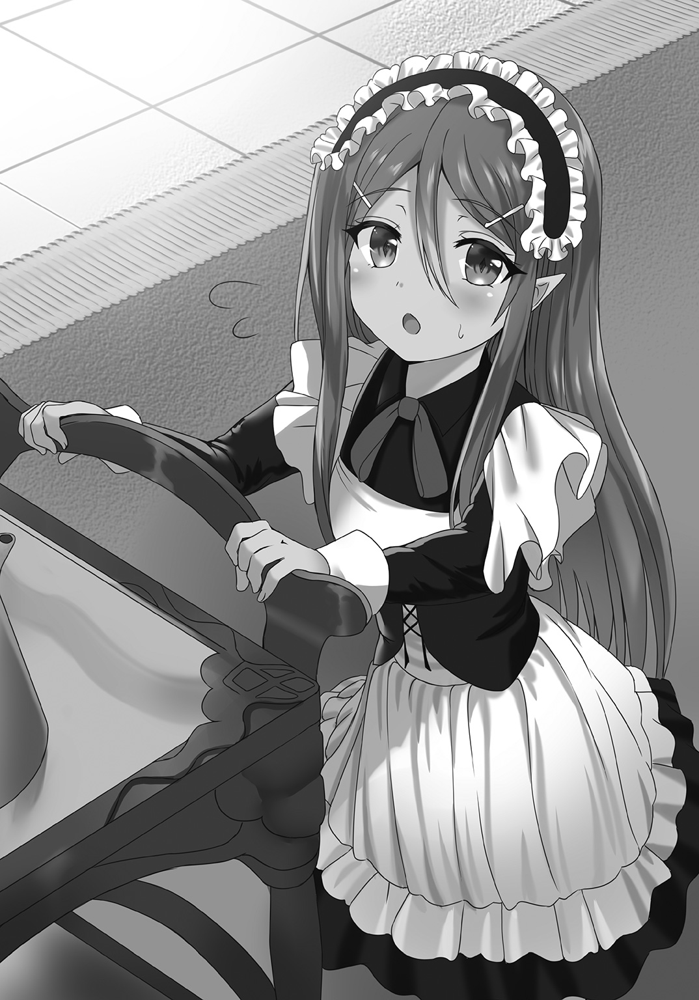
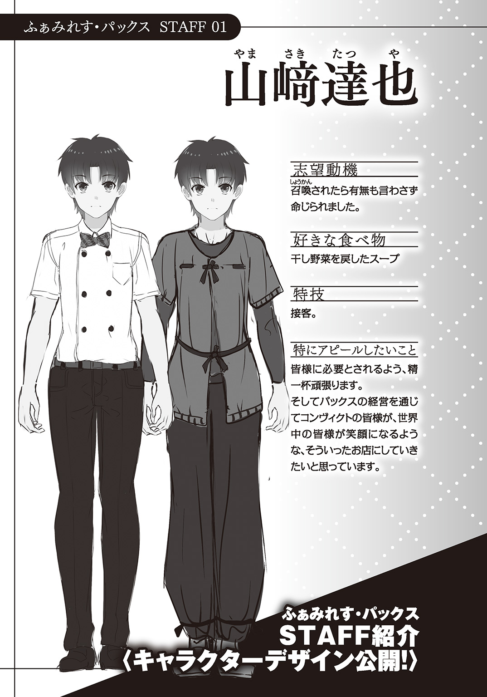

| バイトリーダーがはじめる異世界ファミレス無双 姫騎士と魔王の娘で繁盛するまで帰れません | |
| 長野聖樹 | |

この本は縦書きでレイアウトされています。
また、ご覧になる機種により、表示の差が認められることがあります。
 ダッシュエックス文庫DIGITAL
ダッシュエックス文庫DIGITAL
バイトリーダーがはじめる異世界ファミレス無双
姫騎士と魔王の娘で繁盛するまで帰れません
長野聖樹
山﨑達也様
拝啓 時下ますますご健勝のこととお慶び申し上げます。
さて、先日は弊社求人案件へのご応募いただき誠にありがとうございました。
厳正なる選考の結果、残念ながら採用を見送りましたことをご通知いたします。
ご希望に添うことができませんでしたが、何卒ご理解の程よろしくお願いいたします。
末筆ではありますが、貴殿のより一層のご活躍をお祈りいたします。
株式会社いえうしゅエンジニアリング
人事部 採用担当
第〇章 召喚
ファミリーレストラン、ベイゼリヤ北茂杉店。
「いらっしゃいませ」
完璧な営業スマイルを決めて、背筋を伸ばして真っ直ぐに歩く、歩調は速すぎず遅すぎないテンポを維持、店内への目配りも忘れずに、お冷やがなくなっているお客様がいればお冷やを用意して向かい、灰皿が満杯なら颯爽と交換、空いている皿があればすかさず下げて、注文があればハキハキと対応、ドリンクサーバーの補充は忘れずに......。
「ちょっと！ 料理にゴミが入っていたんですけどぉっ？」
「お客様の気分を害されたようで、申し訳ありません」
クレームへは、深々と一礼して対応をスタート。
「ですが......お客様、先月も『料理にゴミが入っていた』というご指摘をいただきましたね？ そして先々月も、その前の月も......」
「だから、何よ！ このハンバーグにゴミが入っていた事実は......」
「なので、お客様にお出しする前に写真を撮って、料理の状態をチェックしていました」
「っ!?」
「お客様にお出ししたお皿にゴミは入っていませんでしたが......写真、確認されますか？」
「く、口答えする気っ！ 本社に言いつけるわよっ!!」
「お客様からいただいた、一〇回にも及ぶご意見は本社にあげさせてもらっています。そして本社からは、次何かあった時は『出入り禁止』にしても良いとの許可をもらってます」
「わ、私は客よ！ 客に向かって......」
「ゴミが入っていたと噓のクレームをつけて、店員を泣かせて、無料で料理を食べて帰る人を『お客様』とは言いません。ちなみにお客様が皿にゴミを入れるところは、監視カメラでしっかり録画させてもらっています」
「あ、あんたバイトでしょ！ バイトじゃ話にならないわ！ 社員か店長を出しなさいっ!!」
「はい。これから詳しい話は店長がさせていただきますので、どうぞこちらへ......」
理不尽なクレームには、笑顔で速やかに対応。
――ピークタイムもそろそろ終わりかな？
「今永さん、そろそろ休憩に入って」
店内の混雑状況を確認して、新しいバイトから優先的に休憩に入ってもらうことも忘れない。
それがファミレス、ベイゼリヤのバイトリーダー山﨑達也の日常。
高校入学の時から始めて、大学四年の秋の今までで、もう六年半になる。
――本当はバイトしている場合じゃないんだけどなぁ。
内心でため息を吐きながら、それでも身体は客のいなくなったテーブルの片付けを始めていた。トレイに空になった皿を重ねて、テーブルを拭いて......。
「たぁっちゃん」
バイト仲間で、中学から腐れ縁が続いてる石田美南が、ニヤニヤ笑いながら話しかけてきた。クリッとしたネコ目にショートカットの少女だ。確か......大手ゲーム会社の内定を貰っていた。
「何、石田さん？ 今は仕事中だよ」
「また落ちたんだって？」
的確に心を抉ってきた。
「中畑店長も心配してたよ？」
「い、今は仕事..................中だから......」
「確か一〇〇戦一〇〇敗だっけ？」
「ま、まだ九九敗だから！ 一〇〇敗にはなってないから......」
営業スマイルを保っているつもりだが、声が震えてしまう。
「知ってるー」
何故かドヤ顔で言われた。
――うわっ！ ムカつくっ!!
全力でイラッとしてくる。
「四年の十一月なのに、今の時期に決まってないって、相当ヤバいよ？」
「そ、それぐらい分かってるよ......」
「中畑店長に頼めばベイゼリヤに入社出来るんじゃ......って、あれ？ もしかして......」
「いろいろと都合があって去年も今年も新入社員の募集はしてないって断られたんだよ！」
「あー......」
さっきまで散々イジってきた美南の表情が引きつっていた。
「......あっ！ お客様だ。いらっしゃいませー」
そして逃げるように接客に行ってしまう。
――ったく、なんだよ！ アイドル声優みたいな可愛い声してるクセに、本当ムカつく!! ちょっと自分は内定貰ったからってっ！ 内定貰ったからってぇぇぇっっっっっっ
内心、全力で悪態を吐きながらも......。
「いらっしゃいませ！」
それでも身体は勝手に新しく入ってきた客に向かって笑顔で対応をしていた。
「お疲れ様でしたー」
「ちょっと、たっちゃん先に行かないでよ！ お疲れでしたー」
達也が男子更衣室から出ると、美南も女子更衣室から慌てて出てきた。
「一緒に帰る約束とかしてないだろ？」
「何よー、さっきのこと、まだ怒ってるの？」
達也がジロリと睨むと、美南はヘラッと笑ってスルーしてくる。
二人で店の外に出ると、乾燥した肌寒い空気が吹いていった。
ベイゼリヤ北茂杉店は私鉄の北茂杉駅まで徒歩五分の距離。
すっかり陽は落ちていたが、店の周辺にある商店街が賑わいを見せている。
「別に......」
「しょうがないなぁ、連敗中のたっちゃんを元気づけるため、呑みに行こっか......給料日だし」
北茂杉駅までの商店街の雑踏を二人で歩いていく。
「そんな気分じゃない」
「うじうじしてたって、内定貰える訳じゃないんだよ？ 切り替えていった方がいいって」
「......来年のことを考えたら、貯金したいし」
「うわっ、堅実！」
「それに修理に出してたノートＰＣが戻ってきたから、今日はこれからアキバなんだ」
「パソコンを修理に出して使うなんてヲタクだねぇ。壊れたんなら新しいの買えばいいのに」
「保証期間内なんだから、もったいないだろ？」
「はいはい」
気がつくと駅の改札まで来ていた。
「それじゃ、あたしはこっちだから！」
一人で改札を通過。美南はきっと駅前の飲み屋に行くのだろう。
「あー......今日は誘ってくれてありがとう」
「元気出せよ、たっちゃん！」
恥ずかしげもなく大きく手を振って美南は雑踏の中に消えていった。
混雑する階段を上って、上りのホームに立つ。
一人になると、途端に重たい現実がのしかかってきた。
「..................本当、就活どうにかしないとなぁ」
一社、一社、『お祈りのメール』を貰うたびに、全世界からお前は要らない奴なんだ！ って言われているみたいで、この世から消えたくなる。
筆記試験は通るけど、その後の面接で落とされる。何がいけないのか？ 就活のマニュアル本も山ほど読んだし、ＯＢからアドバイスも貰いまくった、大学の就活支援センターで模擬面接だって何回もやったし、エントリーシートだって完璧に書いているはずだ、合同説明会の手応えも悪くない。本当、後は何をどうすれば内定が貰えるのだろう？
さっぱり分からない。分からないながらに自己分析を繰り返していくと......。
「やっぱり家庭環境......なのかなぁ？」
ため息と共に、そんな言葉が漏れてしまう。
大学の就活支援センターの担当者は、そんなことはないって言っていたけど......。
「両親揃ってる美南が、羨ましいよ」
達也の両親は、達也が小学生の頃に育児放棄をした挙げ句、失踪してしまった。
借金取りから逃げたのか？ 子育てに嫌気が差したのか？ 何があったのかは分からない。
それから児童相談所で保護されて、母方の叔母に引き取られて、今に至る。
叔母さんは本当にいい人で、実の子でもない達也を育ててくれて、大学にも行かせてくれた。
『達也の好きなことをしていいのよ？ やりたいことが見つかったら、躊躇ったらダメよ？』
笑って......叔母さんは、そう言っていた。
『私のことなんて気にしなくていいから。息子がやりたいことを応援するのが母親でしょ？』
そう言ってくれてるが......。
――やりたいことなんて無いからなぁ......。
だからせめてもの恩返しとして、ちゃんと就職して初任給で夕飯をご馳走したい。そしてゆくゆくは大学の学費を返したい。それが今の達也のささやかな目標なのだけど......。
「来年、それが出来ればいいなぁ」
絶望的な気分だった。
上り電車に乗って、ガタゴト揺られていく。もたれかかっている扉の窓に、自分の顔が映っていた。窶れた覇気のない顔。そんなしょぼくれた自分の顔を見ていると、ますます気が滅入ってくる。暇つぶし兼、現実逃避のネット小説を読む気にすらなれない。
「......トラックに轢かれればいいのかな？」
脈絡もなく思い浮かんだ言葉が口を突いて出る。
そうすれば異世界に転生して、新たな人生を歩めるかもしれない。
現実にそんなことがあるはずもないが。
でも......親に捨てられ、世間から必要ないと言われ、自分という人間が何で生きているのか分からなくなってくる。誰かに必要だと言われたい。必要とされる人間になりたい。
それすら大それた望みなのだろう、きっと。
何をするでもなく、ぼんやりと窓の外を眺めていると――。
『秋葉原～秋葉原～』
車内アナウンスが流れて、窓の外の景色が見慣れた秋葉原駅のホームに変わっていく。
「ん？」
何かがおかしかった。
ゆっくり停車して扉が開くと――扉の先が淡く光っていた。
「んん？」
――アキバのホームって、こんな..................。
光に包まれていただろうか？
脚が一歩前に出ると、視界が白濁してきた。
雑踏も駅ホームのアナウンスも聞こえなくなる。
匂いが消えた。
感覚が麻痺してくると、全身が白に呑みこまれ――。
――――――達也の五感の一切が白く遮断された。
第一章 ふぁみれす計画
一
白濁が消えると――。
「..................豚？」
達也の目の前に豚に似た顔があった。
歩いて電車から出たはずなのに、背中にゴツゴツとした感触があって......、秋葉原の駅ホームにいたはずなのに、動物園で嗅いだこともある獣臭にも似た匂いが漂ってくる。
「気がついたようですぞ？」
豚に似た顔が喋った。しかもかなり渋くてカッコいい声で。
「え？ ......え？」
改めて豚顔を見直してみる。顔は紛れもなく豚......いや、口元から牙が見えているから猪か？ でも、首から下は人間のそれだった。
見たこともない民族衣装を身に纏っている、筋肉質な二メートルぐらいの巨漢だ。
「豚人間？」
「豚人間とは言い得て妙ですな」
豚人間は、まるで気分を害していないふうに朗らかに答える。
「おらっ！ 目覚ましたなら、しゃきっとしろ！ しゃきっと!!」
かなり乱暴だが妙に魅力的でリア充っぽい声が降ってきた。
「何、このリア充イケメン声？」
視線を声に向けると、肩や胸、腰、腕、脛に鎧をまとって、腰に剣を差した青年が見下ろすように立っていた。格好こそコミケ会場で見かけそうなコスプレだが、コスプレにはない妙なリアリティと迫力がある。ぶっきらぼうで全然愛想がないが、かなりのイケメンだ。
――あれ？ 僕、寝かされてる？
どうやら板張りの床の上で寝かされているようだ......。
「..................」
視線だけで辺りを見回す。
ガランとした部屋の真ん中で。調度類は一切ない。漆喰の壁、木の柱の簡素な部屋だ。
確かにさっき電車から降りたはずなのに......。
「こ、ここは......？」
言いながら身体を起こそうとして、頭がまるで攪拌されたように、ジェットコースターを一〇〇回連続で乗り終えた後のようにフラフラしていた。
――夢？ 夢にしては妙に生々しいな......。
試しに口の内側を嚙んでみると、普通に痛かった。背中全体に伝わるゴツゴツとした板の感触、エアコンによる人工的な涼しさのない空気感、獣臭に加えてどこか種々雑多な生臭さと甘酸っぱさが混在している匂い......。
――たぶん、夢じゃない。ＯＫ、僕。冷静に考えてみよう。アキバの駅に降り立ったら光に包まれて景色が変わっていた。そして豚人間と、リア充イケメン声のレイヤーが現れた......。
「................................................................................................あなたたちは？」
「我が輩は、猪頭人身族のアプルム」
「お、猪頭人身!?」
猪頭人身といえばファンタジーＲＰＧに出てくるモンスターだ。作品によってデザインがかなり異なるのだが......。
「然様。猪頭人身族は初めてですかな？」
「え、ええ。直に見るのは初めてです」
「以後、お見知りおきを......」
優雅な仕草に丁寧な挨拶。見たこともない民族衣装っぽい格好も、妙に様になっている。
粗野でも下品でもない、今まで描いてきたイメージとはまるで違っていた。
「それで、こちらの人族の戦士はザカリー・ゴア」
「ちっ、ザックだ」
アプルムに紹介されたザックは舌打ちと共にそっぽを向いてしまった。
イケメンでイケメン声だが愛想の欠片もなく、かなり取っつきにくそうだ。
......そんな二人に挟まれている。
「あー、えっと、山﨑達也です」
「姓がタツヤで、名がヤマサキですかな？」
「いえ、名前が達也で、山﨑は名字です」
「ではタツヤ殿、他に何か訊きたいことはありますかな？」
すごく丁寧で、とても紳士的にアプルムが質問を促してくれた。
一方で、同じ人間のはずのザックは仏頂面でそっぽを向いたままだ。
――一応、確認しておくか......。
妙に冷静な自分自身を自覚しながら、
「もしかしてここは異世界......ですか？」
何となく答えが予想出来る質問を投げかける。
「貴兄の視点で見ると、そうなるかもしれませんな」
と、予想通りの答えが返ってきた。
アプルムが優雅に腰を折って手を差し伸べてくる。
「あ、どうも......」
達也は素直に手を取って......。
「......っ!?」
蹄にも似た巨大でゴツゴツした爪、太くてどっしりした指、手の甲に生えている短毛のさらさらした感触は......どうしようもないほどの現実だった。
途端！ 実感と妙な混乱と、そして焦りが込み上げてくる。
「って、僕、本当に異世界に来たのっ！」
にわかには信じられない......というか今になって信じられなくなってくるのだが！
「ちっ、さっきからそう言ってるだろ！」
無愛想なザックが乱暴に吐きすてる。
「暴走トラックに轢き殺された訳でもないし！ 突然現れた門で移動した訳でもないのに！ 電車の扉が開いてアキバのホームに降りたら異世界って......ま、前触れなさ過ぎでしょ!!」
「てめぇの事情とか知るかよ！ ここはお前の住んでた世界とは違う、祝福の世界っていう世界なんだよ。んで、何処から来たのか知らねーけど、召喚されて来たんだよ！」
ザックは目一杯乱暴なのに、むっちゃ丁寧に説明してくれた。
「だ、だったら、何で猪頭人身とイケメンに出迎えられてるのっ!? こういう時って、美少女が案内役として現れるんじゃないの？ そんでもって運命とか、世界の命運とかの説明をされて、チートな特殊能力を授けてくれるんじゃないの？」
「そんなもん、あるかよ」
一刀両断で否定された。
「が、がっかりだよ!!」
異世界があるなら行きたい！
そう思っていたのは事実だし、そうなったのは嬉しい！
だけど......。
――こういうことじゃないんだよなぁ。
ついてない奴は、異世界に行ってもついてないってことなんだろうか？
自分の人生のついてなさっぷりに、途方に暮れてしまう。
「ちっ！ 何、訳分からないこと言ってんだよ！」
「まあまあ、彼も見知らぬ世界へ召喚されて混乱しているのでしょう」
ザックが乱暴に言うと、アプルムが優しく窘めている。
「それじゃあ、僕は何で召喚されたんです？ まさか何の理由もなくだったら......」
「ようやく、その質問が出たか。おせーよ。待ってろ」
ザックは一方的にそう言うと部屋を出ていった。
「タツヤ殿を召喚した御方々が来ますので、今暫しお待ちを」
例によってフォローするようにアプルムが言葉を添えてくれた。
――この猪頭人身のアプルムさん、むっちゃいい奴だなぁ......。
見た目だけなら最高に取っつきにくいのに！
達也がしみじみとそう思っていると――。
「っ!?」
達也の左側で金色の魔法陣が展開。
同時に、右側で漆黒の魔法陣が展開。
「な、何が......」
縋るようにアプルムを見る。
「取って食われる訳ではありません。ご安心を」
アプルムが朗らかに答えている間にも、それぞれの魔法陣は片方は輝きを、片方は闇を濃くしていって......。
「わたくしは人族の英雄、神威迅雷の姫騎士フォルトゥナ・アチェラ・パラディシウス！」
金色の魔法陣から金色の全身鎧を纏った金髪の少女が迫り上がってきた。
「くーっくっくっく......妾こそが封印の世界第三国魔王サタンの一子にして黒風暴威のサータナ・イラム」
漆黒の魔法陣から生み出されるように、ゴシック調の黒いドレス姿で、頭に捻れた角、背中に翼を生やし、右眼に眼帯をした少女が現れた。
二人とも、その立場、異名に恥じないレベルでかなりの美少女だ。
その二人の美少女――フォルトゥナとサータナは達也を鋭く睨む。
「ちょっ!? え？」
神々しい金色の光を放ちながら、キリッと涼やかな吊り目がちの少女――フォルトゥナは、腰から長剣を抜き放ち！
深い闇を纏いながら、少し垂れ気味の艶やかな目の少女――サータナは、何処からともなく大鎌を取り出し！
「平和の手がかりよ！」「安寧の供物よ」
二人の声がハモッて......。
「わたくしに平和共存を教えなさい！」「妾に安寧を迎える術、授けるがよい？」
フォルトゥナは長剣を突きつけて威厳ある命令を下し、サータナは大鎌を突きつけて残忍に笑っていた。
「ふぅ、やれやれ......異世界に召喚されたと思ったら姫騎士と魔王の娘に脅されるとはなぁ」
せっかく美少女が現れたっていうのに！
いきなり長剣と大鎌で脅してくるとか、まるで訳が分からない。
とりあえず両腕を上げて、反抗する意思がないことを示しながら、
「........................................................................僕の人生って何なんだろうなぁ」
思わず遠くを眺めてしまう。
「申し訳ありません、タツヤ殿。サータナ殿下もフォルトゥナ殿下も、平和共存の使者たるタツヤ殿とまみえるに当たって、少々張り切ってしまいまして」
慣れっこなのか、アプルムはまるで動じてなかった。
「サータナ殿下、フォルトゥナ殿下、タツヤ殿が困惑しておいでです。どうか武器を収めて、普通に話されてはいかがですかな？」
「むっ？」「うぬ？」
アプルムが穏やかに窘めると、姫騎士は気まずそうに長剣を鞘に収め、王女殿下はバツが悪そうに大鎌を消してしまう。
「如何いたします？ 我が輩から説明いたしましょうか？」
「いえ。わたくしたちが召喚したのに、わたくしたちが説明しないでは筋が通りません」
「妾の魔眼が導いた安寧の供物を捧げるには、悠久の刻を謳う妾の真言が不可欠であろう？」
片方は真っ直ぐに、片方は意味深に笑いながら、素直に従っていた。
――アプルムさん、凄いなぁ......。
達也の中では相対的に、ガンガンにアプルムの株が上がっていく。
「なら我が輩はお茶を用意いたしましょう」
まるで孫娘を見守る祖父のようにアプルムは微笑むと、指をパチンと鳴らした。
「「「「「「失礼いたします」」」」」」
と、豚耳をはやした少女たちが、室内に入ってきて、テーブルやイスをセッティングしていき、最後にはティーセットを乗せたワゴンを置いて、去っていってしまう。
「お、おお！」
何だか無茶苦茶可愛い豚耳少女の集団だったが、あれは......？
「あれは、我が輩の侍従で、全員猪頭人身の少女です、タツヤ殿」
達也の疑問を正確に読み取ったアプルムが、先回りして教えてくれた。
猪頭人身に雌もとい女性がいたのも驚いたが、可愛い子ばかりだったのも驚きだった。
「くく、妾の右腕たる豪腕無双のアプルムは、猪頭人身族次期族長なのだ」
何故かサータナがドヤ顔で教えてくれる。
そのアプルムがお茶を用意している間に、フォルトゥナ、サータナの二人がテーブルを挟むように座ると、達也も釣られて席に着いた。
「それでは改めて......わたくしはパラディシウス王国第一王女フォルトゥナ・アチェラ・パラディシウスです」
「妾は封印の世界第三国の魔王サタンが一子サータナ・イラム」
「あ、僕は......一般庶民の山﨑達也です」
――ほ、本物の姫が......二人？
改めて見直してみると、二人とも桁の違う美少女だった。
フォルトゥナは、切れ上がっていて鋭いながらに大きな目、綺麗な曲線を描いている眉、華やかな金髪......と、どれをとっても完璧といって差し支えないレベルで。
サータナは、少し垂れ気味ながらも艶やかな目、優美な眉、枝毛一つなさそうなサラサラ艶々な天使の輪っか標準装備の黒髪......と、こっちも完璧なレベルだ。
全然タイプは違えど気品や纏っている空気、何気ない所作が、格段に洗練されている。
仮に、もし姫という申告が噓だとしても、その噓が噓だと言いたくなるぐらいに、容姿、表情、仕草、所作、姿勢の全てに高貴さを纏っている少女たちだった。
その二人の少女たちは互いを横目に見合うと、
「少々長くなりますが説明を始めたいと思います。......よろしいですか？」
おもむろにフォルトゥナが口を開いた。
「あ、よろしくお願いします」
「......この世界には人と魔が存在しており、長きにわたって戦争をしてきました」
「はぁ......長いって、どれぐらいです？」
「五〇〇年前、原因は不明ですがこのパラディシウス大陸の北端にある転移の門が強制的に解放されました。その結果この人間の世界――祝福の世界と、サータナ殿の住まう魔族の世界――封印の世界が繫がってしまい、人魔の戦争が始まりました。わたくしやサータナ殿が生まれるずっと前のことです」
「ご、五〇〇年間、ずっと戦争を？」
「二度ほどあったわずかな休戦期間を除いて、残酷に、互いを殲滅せんと争い続けました」
「はぁ......」
「その戦争がようやく終結したのが、三年前のこと」
「休戦ではなく、終結？ よく終結しましたね」
「人魔の戦争に疑問を抱いたわたくしとサータナ殿が個人で同盟を結び、戦場という戦場に介入して、争いという争いを潰し、賛同者を募りました。最初は両陣営から裏切り者と誹られましたが、わたくしたちには私心がないこと、ただ平和を求めていることを、粘り強く訴え続け徐々に仲間を増やし......その結果今に到ります」
フォルトゥナはどこか誇らしげで、そしてサータナも昂然と胸を反らしている。
「何、その『姫様による全戦争行為への武力介入を開始する』みたいな、リアル私設武装組織『天の存在』による戦争介入って......。それで戦争って終結するんだ。すげぇっ！」
戦争とは無縁の世界で生きてきた達也ですら、それがどれだけ無茶苦茶なことか、容易に想像出来た。少なくとも、そんな方法で戦争が終わったって話は歴史の教科書にも、Ｗｉｋｉｐｅｄｉａにも載ってなかったはずだ。
途轍もない無茶苦茶な方法で、途方もなく困難なことを、この二人の少女はやり遂げた......ということなのだろう。凄いなんてレベルじゃなく凄かった！
「そしてわたくしの父上が人の代表として、サータナ殿のお父上が魔の代表として終戦協定を結んで、全てが丸く納まった......わたくしもサータナ殿も、そう思っていました」
が......フォルトゥナもサータナも表情が暗くなっていく。
「丸く納まらなかったの？」
「くっくっく......崇高なる安寧を解せぬ愚昧な者どもは、未だ争いの業火を欲しておる」
「あー、つまり、まだ戦争をしたがっている連中が、どちらの陣営にもいるってこと？」
サータナの言葉を達也なりに解釈してみる。
「流石は安寧の供物。我が真言を解するとはな......！」
と、何故かサータナは喜色満面のドヤ顔で胸を張りだした。
「それだけではありません。人も魔も互いが互いを恐れている状況なのです」
「三年前までお互いに殺し合ってたんだからなぁ......。デタントは難しいでしょうね」
「「？」」
フォルトゥナとサータナが不思議そうに小首を傾げる。
「横から失礼......タツヤ殿、『でたんと』とはどういう意味の言葉でしょうか？」
横からアプルムが礼儀正しく訊いてきた。
「デタントってのは緊張緩和のことです。厳密には緊張緩和政策のことらしいんですが」
「なるほどなるほど。これは失礼しました。話を続けてください」
再びアプルムは黙ってしまう。
「そう、でたんとに未だ至らぬ状況なのです」
後を継いで、フォルトゥナが話を再開した。
「この街は我がパラディシウス大陸のちょうど中央――人魔それぞれの勢力圏の境に、人魔の共存のために作られました。その名も共存都市コンヴィクト。三年前のことです」
言われて達也は窓の外をちらっと見てみる。
とても賑わっているように見える。三年前に出来たばかりには思えないのだが......。
「そして人の代表としてわたくしが、魔の代表としてサータナ殿が特命全権大使として派遣され、この館パックスを大使館にしているのですが......」
更にフォルトゥナとサータナの表情が暗くなっていく。
「だいぶ進んでいるんじゃないですか、平和？」
「ありがとうございます、タツヤ殿。ですが......」
「全ては虚像」
フォルトゥナもサータナも沈鬱な表情のままだ。
「ん？ つまり見せかけだけで、全然平和になっていない、と？」
「人は人と集まり、魔は魔と集まり、互いに交流せずに暮らしているのが実情です」
「ああ、一応平和にはなったけど、共存には至ってないってことね」
「戦争がなくなれば、後は平和共存が待っている、そう思っていたのですが......」
フォルトゥナは悔しそうに唇を嚙み、
「くく......故に妾と神威迅雷は『安寧の刻』を求め果てなき迷宮で戦の日々なのだ」
サータナはどこか疲れたように言葉を漏らす。
「んー......『平和共存』のために試行錯誤を始めたんですね？」
達也の解釈を聞くと、何故かサータナが嬉しそうに笑った。
「......例えば？」
が、続く達也の問いを聞くと、二人の姫は互いに顔を見て気まずそうに視線を逸らす。
「晩餐会を開いて交流の場を設けてみたのですが......」
フォルトゥナは感情を押し殺したかのように、淡々と語りだした。
「......その、大変お恥ずかしい話ではあるのですが、互いに食事が合わず......平等に料理を用意しても不平不満が出て......揉めに揉めた結果、晩餐会は失敗に終わりました」
「長命長耳だが短気な草喰い族であったな......最初に言いがかりをつけたのは」
呆れたようにサータナが言うと、
「た、確かに最初に言いだしたのは森林の民ですが、それを言うなら......み、牛頭人身族もではないですか！」
ムッとしたようにフォルトゥナが言い返す。
ちらりと横を見ると、アプルムが困ったように笑っていた。
「人魔問わず、種族毎でだいぶ食事に差がありますからなぁ」
そしてティーカップとポットをテーブルに並べていく。
「我が輩ども猪頭人身族や人族は雑食ですが、森林の民や牛頭人身族は主に野菜しか食べない上に、どうも肉食を野蛮なモノと断ずる傾向にありましてな」
「ああっ！」
――日本風に置き換えるとエルフやミノタウロスは菜食主義者で、肉食の種族に意見を......。
現代日本でも達也は実際には見たことないけど、ニュースではたびたび見かけたことだった。
「とはいえ食事は難癖をつけるきっかけで、本音では同席したくなかっただけかと」
感情的な軋轢を払拭するための交流を試みても、感情的な軋轢で互いに距離をとってしまい、距離をとるからますます感情的な軋轢が悪化してしまう......見事な悪循環に陥っていた。
「よければ温かいうちにお飲みください。お口に合えばよろしいのですが......」
「あ、どうも」
アプルムの薦めに従ってティーカップに口を付けてみる。
ふんわりと甘酸っぱい、どことなく花の香りのするお茶だった。
「他にもいろいろと試してはみたのです」
ポツリとフォルトゥナが言葉を漏らす。
「はぁ......どんな？」
「商人を集めて商談会を開いてはみましたが、やはり互いを信用出来ない......という理由で一つも商談がまとまらず」
「悪辣なる人族が価値を偽るが故に交渉は決裂したのだ」
「や、安く買って高く売るのが商売の鉄則と聞いています。そのために、時にわざと高い値段を提示するのも商売における駆け引きの一つと......」
嘲笑にも似た目でサータナが横を見ると、苛っとしたようにフォルトゥナが睨み返した。
「価値を偽り謀るなど卑怯千万ではないか？」
「か、駆け引きですので......」
何だか、どんどん空気が荒んでいく。
「ま、まあまあ......他にもどんなことをやったんです？」
とりあえず話題を逸らそうと達也が口を開いたが......。
「軍馬による競争や、格闘技の試合による交流も試してみましたが......特に、魔の方々が競技であることも忘れ、本気で潰しにかかってきまして......」
「せ、生来の性質を抑える術が不得手であるが故にのぉ」
途端に、フォルトゥナがドヤ顔になり、サータナは気まずそうに視線を逸らしてしまう。
――あ、この流れアカンやつや！
「お、お二人の状況は分かりましたけど..................何で僕が召喚されたので？」
慌てて状況を誤魔化すように達也は先ほどからの疑問を口に出してみる。
「ぉっほん、わたくしたちは藁にも縋る思いで......」
と、フォルトゥナは小さく咳払いをして居住まいを正した。
「......わたくしは月の神殿で神託を受け、サータナ殿は魔の秘伝で魔神のお告げをその魔眼に授かり、その結果更なる別の異界より平和共存の手がかりとなる何かの召喚を試みました」
二人の視線が......いや、フォルトゥナとサータナだけではない、アプルムも、そしていつの間に戻ってきていたのかザックも、こちらを見ていた。
「はぁ......」
「わたくしとサータナ殿で編み出した術式は、何を召喚するかは不明。ただわたくしたちの望む平和共存の手がかりとなる何かが召喚されるというもので......」
「へ？」
「......その召喚の儀式を行って現れたのがタツヤ殿......あなただったのです」
縋るような、何かを期待するような、願望、希望の籠もった全員の視線を感じる。
「んなっ!?」
ずいぶんと突拍子もない話だった。
「つまり......僕が平和共存の手がかりってこと？」
「はい」「いかにも」
フォルトゥナとサータナが静かに頷く。
「だ、だったら、その召喚の儀式は失敗ですよ！」
「ほう？」「ふぅん？」
同時に二人の眉が跳ねあがった。一気に不穏な空気が漂いだす。
「だって僕は何処にでもいる普通の人間ですよ？ しかも......」
それに気づかない達也が言葉を続けるが......。
「くっくっく......封印の世界第三国王女たる妾が失敗することなどありえぬであろう？ もっとも......失敗などという無様な結末があるなら、それは妾以外の誰かの所為であろうな」
サータナは洗練された動作で立ち上がると、昂然と胸を張ってフォルトゥナを見下ろす。
「わたくしは、未だ魔道の深淵に至らぬ身ですが、三術を基礎から学び異界からの召喚術を行使するには過不足ない程度には身に修めたつもりです」
フォルトゥナも立ち上がると、真っ向からサータナを睨み返した。
「ちょ、ちょっと......」
急な展開に達也は困惑してしまう。
「術式の研鑽はあれど、魔力が足りぬのではのぉ」
「魔力があっても、あんな雑な術式では正しい結果が出せないと思いますが？」
二人はテーブル越しに睨み合い――。
「のぁっ!?」
唐突に、達也は首根っこを引っ張られ、背後から誰かに抱きしめられていた。
見上げると、ザックの無愛想な顔がある。
「ったく、危ねーな！ おめーもボサッとしてんじゃねーよ」
「仕方ありますまい」
そしてアプルムが達也を庇うように仁王立ちをしていた。
そのアプルム越しには......。
「なっ!?」
フォルトゥナの座っていたイスは炭となり果て、サータナのイスは微塵と化し（ついでに達也のイスも粉砕されていた）、
「さすがですね、サータナ殿」「くっくっく......神威迅雷もやるのぉ？」
瓦礫となったテーブルの中で、フォルトゥナの長剣とサータナの大鎌が斬り結んでいる。
一瞬のことだった。ザックが引っ張ってくれなければ、達也もテーブルやイスのように......。
「はぁっ！」「ほぅ？」
って思っている間にも、攻守を入れ替え、大鎌が！ 長剣が！ 目に見えない速度で繰り出されていた。秒単位で壁や床が破壊されていく。
「だ、大丈夫なんですか!?」
「この建物なら建材には複合魔導鋼が使われていますので今のところは大丈夫かと」
のほほんとアプルムが笑っていた。
「じゃなくてっ！ 二人のことですよ!!」
「安心しろ......二人とも本気じゃねーし」
ザックの言葉に、達也は耳を疑う。
到底、常人の視力では追い切れないのに......。
「これだけ凄い戦いが......」
――本気じゃない!?
信じられなかった。
ピクッとフォルトゥナとサータナの耳が動く。
「準備運動はここまでです！」
「ようやく妾の身体も温まってきたのぉ？」
わずかに離れた二人が不敵に笑みを交わした。
と――再び始まる激しい闘い。金色に揺らめくオーラを、漆黒に滾る炎を互いに身に纏い、更には魔法的な何かも繰り出しながら長剣や大鎌を振るっていく。
「だから、余計なこと言うんじゃねーよ」
何故かザックから叱られた。
「へ？ ぼ、僕......ですか？」
「こいつら、お前にいいところを見せようと張り切ってんだよ」
「サータナ殿下、フォルトゥナ殿下が本気ならば、この館は今ごろ消し炭でしょうからな」
アプルムは実に穏やかに笑っている。
「二人は仲間......なんですよね？」
「なに、お二人の喧嘩はよくあること。今のはじゃれ合いみたいなものです、タツヤ殿」
どう見ても本気で斬り合っているようにしか見えない。
「で、でも......」
「だから、反応すんじゃねーって！ こいつらが更に調子に乗るだろっ!!」
またザックに叱られた。
「だいたい、殺気がねーのぐらい分かるだろ？」
「分かる訳ないですよ！」
「はっ？」
「喧嘩らしい喧嘩なんて、ほとんどやったことないですし！」
「マジか!?」
「マジっす！」
「じゃぁ、空気の流れとか、剣筋とか、気配の察知とかも全然分からないのか？」
「インドア派の何処にでもいる普通の文系ヲタクには分からないですよ!!」
「......お前、今までどうやって生きてきたんだ？」
まるで信じられないかのように、ザックは目を見開いている。
「そんなの、ただのファミレスのバイトですよ」
刹那！
「「ふぁみれす！」」
姫二人は全力で戦闘していたはずなのに、気がつくと長剣と大鎌を達也に突きつけていた。
「な、何でそこに食いつくんです!?」
「神託にその言葉があったのです！」「くっくっく、妾の魔眼が反応したのだ」
何故か二人してドヤ顔だ。
「さあ、詳らかに説明してくださいっ!!」「安寧の供物としての役目......果たすがよい」
そして真っ向から命じてきた。
「だ、だから......えーっと、ファミリーレストランの略称です。老若男女、誰でもお金を払えば食事が出来る大衆向けのレストランですよ。この世界にもあるでしょ？」
「老若男女の誰でも？」
よほど聞き捨てならなかったのか、フォルトゥナが鋭く睨んでくる。
「え、ええ」
圧倒的な意志のある眼光に、達也は気圧されていた。
「くく......安寧の供物よ、世迷い言を並べるでないぞ？ まさか王侯貴族臣民種族の一切衆生が許されるという訳ではあるまい」
目の前に餌が現れた時の肉食獣さながらの、獰猛にも見える笑みがサータナの顔に浮かぶ。
「えっと......身分や人種を問わないって意味ならその通りです。無論お金は要りますが」
「「っ!?」」
達也の言葉がよほどショックだったのか、フォルトゥナとサータナの手から長剣と大鎌が音を立てて落ちた。
「度々横から失礼......」
そんな姫たちを横目にアプルムが話しかけてくる。
「それは、タツヤ殿の世界の通貨を持っていれば、我が輩でも食事が出来るのですかな」
「最初は驚かれるかもしれませんが、たぶん大丈夫ですよ」
「それはそれは」
アプルムが満足げに頷いていると、
「俺でもいいんだよな？」
背中のザックが訊いてくる。
「コスプレ入店は少し微妙かもしれないですが......腰の剣がなければたぶん大丈夫かと」
「ちっ、戦士に長剣を置けってか......」
不満を口にしているが、ザックの腕と態度がわずかに緩みだした。
先ほどまでは落ち着いていながらも、どこか重たいものが漂っていたのに、今は軽くて浮き立つような、イベント開始直前の昂揚感にも似た何かが湧いている。
「だ、だから......僕なんかじゃなくて、もっと別の平和貢献出来そうな......」
達也が目一杯の説明をしている中、
「「「「......」」」」
二人の姫と一人の戦士と一人の猪頭人身は互いに目を見合わせると――。
「わりーな」
ザックの腕に再び力が籠もり！
フォルトゥナは落とした長剣を拾いざま、
「平和共存の手がかり、タツヤ殿！ さあ、わたくしにふぁみれすを教えなさい!!」
チャキッと長剣の切っ先を突きつけ！
同様にサータナは何処からともなく大鎌を出しざま、
「くっくっく......妾たちに、ふぁみれすを教える栄誉を授けてやろう。教えねば、妾の魔眼の封が解かれるぞ？ 魔眼の封が解ければ世界は破滅に導かれるのだぞ？」
残忍な笑みを浮かべながら突きつけてきた。
――何で僕、脅されてるの？
「だ、だから、無理ですって！ アプルムさん......っ！」
達也が、堪らず声をあげると、
「脅して命じるのは『平和共存の手がかり』を遇する態度ではないのでは？ ......と、タツヤ殿が申しておりますが？」
取りなすようにアプルムが諭してくれた。
「むぅっ」「うぬぅ」
二人とも気まずそうに長剣と大鎌を引っ込める。
――ようやく分かっ..................。
達也が内心でホッと安堵の息を吐こうとした時――。
「さて両姫の召喚したタツヤ殿が『平和共存の手がかり』で間違いないようですが......」
朗らかにアプルムまでもがとんでもないことを言いだした。
――......ちょっ!? アプルムさんまで、何言ってんの？
つい達也は内心でツッコむ。
口に出して言うと、また脅されそうだったから言えないけど......。
「......タツヤ殿も我が輩どもの事情を知って今は混乱していることでしょう。気持ちや考えを一人で整理する時間が必要ではないかと、我が輩は愚考いたします」
アプルムが取りなすと、
「急いては事をし損じるということですね」
「くっくっく......豪腕無双の諫言を受け入れるに吝かでない」
フォルトゥナは長剣を鞘に収め、サータナは納得するように昂然と胸を張って頷く。
「おらよ......悪かったな」
ザックも腕から解放してくれた。
そして四人で互いに頷き合うと、
「それでは、今暫しの猶予を与えましょう」「くっくっく......」
二人の姫は魔法陣ではなく扉から部屋を出ていき、
「待ってんぜ！」
ザックもさっさと部屋を出ていってしまった。
「それでは色好き返答が聞けることを期待して、我が輩も一度失礼いたします」
最後にアプルムが出ていこうとして......。
「あの......二つ質問があります」
「何でしょうタツヤ殿？」
「そ、その皆さんは何語を喋ってるんですか？ 僕には日本語にしか聞こえないんですけど」
「ふむ......我が輩は魔術には少々疎いのですが、おそらく召喚される際に、召喚魔術がタツヤ殿に何らかの影響を与えたのでしょうな」
「あともう一つ......僕は戻れるんですか？」
「両姫様の魔力が復活し、満月の晩になれば戻すことも可能でしょうな。ただ両姫様の魔力の回復と次の満月までおおよそ六〇日ほどかかりますが」
「そう......ですか」
「それでは失礼いたします」
丁寧にお辞儀をしてアプルムも部屋を出ていってしまった。
二
――あっさり出てったなぁ......。
一人になってみると、テーブルもイスも、ついでに壁も盛大に破壊し尽くされた凄惨な様相を呈している部屋になっていた。
「......ファミレスを教えろ......か」
部屋の中を歩きながら、改めて呟いてみる。
何とも無茶苦茶な話だった。店舗経営？ メニュー？ 接客？ 何をもってファミレスというのか？ 達也もよく分からない。そんなものを教えろなんて、さっぱり意味が分からない。『神託』だか『お告げ』だか知らないけど、たかがファミレスで平和共存が成せると本気で思っているのだろうか？
「......まあ、思ってるんだろうなぁ」
あの二人の目は真剣そのものだった。いろいろと本気で試して、それでダメで、でもへこたれず、めげず、自分の出来ることを精一杯探して、でも敗れ続けて......。
フォルトゥナも、サータナも自分と同じだった。
就活に苦戦して、試行錯誤して、内定が貰えず、何度も敗れ続けている自分と。
「まあ、こっちは就活で、あっちは世界の平和共存だから、規模が違い過ぎるけど......」
つい苦笑が浮かんでしまう。
「それでも......」
――二人とも、まだ戦おうとしているんだなぁ。
その姿、意志、魂のあり方、それらは出会って一時間と経っていないはずだが、敬意を表したくなる。すごく立派だと思った。......やり方は、少しばかり乱暴だったが。
――僕に出来ることなら何とかしてあげたいけど......。
自然とそう思えるぐらいに、あの二人の少女たちには圧倒的な魅力があった。
「就活がなぁ......どんなに早くても、最低二カ月はこの祝福の世界とかいう世界から戻れないんだよな。就活を二カ月も中断するとか......どうしよう？ それにＨＤＤレコーダーの容量も、そろそろ限界だったし、冬アニメの新番タイミングじゃないから良かったけど、絶対に見逃すことになるし、バイトも二カ月欠勤することになるし......」
そうなればさすがに六年半続いたバイトでもクビは確定だろう。
「叔母さんも心配するだろうし......再来月からの生活費もどうしよう？」
就活に、録画しているアニメ、バイト、叔母のこと、再来月の生活費......問題が山積しているどころの状態ではない。状態ではないが――。
「..................どうせ戻って就活しても、落ちるだけだろうしなぁ」
果たして、落ち続ける就活をすることに、どれだけの意味があるのだろうか？
そしてそんな元の世界に戻ることの意味も......。
忘れかけていた暗澹とした気分が甦ってくる。
「いっそ、この世界で就活を......」
ぼんやり窓の外を見ていた。
「..................ん？」
と、その景色に妙な違和感を覚える。
祝福の世界のことは、まだフォルトゥナやサータナ、アプルム、ザックと話した以上のことは知らない。が、それでも確かに違和感があった。
この一階にあるであろう部屋の窓から見える景色は、比較的大きな通りで屋台や露店が軒を連ねている。石畳できちんと舗装されている通りを歩いている人の数もかなりある。
祝福の世界で言うところの人族以外にもエルフっぽい種族や、ドワーフっぽい種族などなど他の種族の姿も見え、全員小綺麗な格好をしている。
その中を七～八歳ぐらいの少女が歩いていた。髪の色はオレンジに近い赤、耳は尖っていて、身体はガリガリで、周りと比較しなくても一目瞭然なぐらい汚い格好をしている。
その少女は、食べ物を売っているであろう露店の店主に何か話しかけて......。
「っ!?」
水をぶっかけられた！
そしてずぶ濡れのまま、とぼとぼと歩きだす。
誰も見向きもしない。
それは――。
無意識のうちに達也は歯ぎしりをしていた。
あの時の光景はずっと封印してきた、記憶の奥底に。
叔母さんに迎え入れられる前。
両親は、滅多に家に帰ってこなかった。最初は一日、それから二日、七日......徐々に家に両親がいない日が増える。初めの頃は、食事の作り置きもあった。が、それもなくなりはじめ、用意されなくなる。どうしようもなくお腹が減って、泣いても誰も助けてくれない。
母を捜して、父を訪ねて、家を出る。
けど......道を行く大人は誰も助けてくれなかった。
当たり前だ。何日も風呂にすら入っていない、異臭のするよその子供なんか、世間は誰も相手にしないのだ。それに、迂闊に他人の子供に声などかけようものなら、通報されかねない。
そんな大人の事情など知らずに、当時住んでた家の近所の個人商店に入った。
目の前にはお菓子が並んでいた。
手には一〇〇円玉がある。
だからお菓子を、ちゃんと買おうと思っていた。
が――怖い顔をした大人に追い出された。
『汚いガキが入ってくんな！』
怒鳴られて、お金を見せても、水をかけられて......。
『今度来たら警察呼ぶよ！』
怖くて、惨めで、お腹が空いて、絶望して、ただどうしようもなくて。
あの時の自分が、窓の外にいる！
そう思ったら、達也は窓から飛び出していた。
馬車が通りを走っていく。
その先にはとぼとぼと歩いている少女。
馬車は停まりそうにない。
達也も駆けだす。
「っ！」
駆ける勢いのままに達也は少女を抱きしめると、道の脇に転がっていった。
達也の行動に、周囲の人々が振り返るが......。
少女の存在を認識すると、嫌悪の表情とともにその場を離れていく。
「大丈夫？」
腕の中の少女はその身に何が起きたのか理解出来ていないのか、呆然とこちらを見ていた。
「怪我はない？」
「え？ ..................うん」
そして達也の二度目の問いに、少女は小さく頷く。
「良かった」
安堵しながら、達也は少女を放して立たせると、自分も起き上がった。
「あの......あ..................りがとう」
消え入りそうな声で、怯えたように少女が礼を言ってくる。
しゃがんで、目線を合わせてニッコリと笑ってみせた。
ファミレスで子供を相手にする時もそうだ。
上からではなく、目線を合わせると、言葉を聞いてくれるのだ。
「危ないから道の端を......」
達也が『危ないから道の端を歩こうね』そう言おうとして――。
「気をつけろ！」
声に振り返ると、少女を轢こうとしていた馬車が停まっていた。
二頭立ての馬車だ。黒い車体で、その車体には丸を重ねた紋様が彫られており、馬の毛並みも艶があり、何となく身分の高い人間が乗ってそうな馬車だった。
「気をつけるのはそっちだろ！」
達也が、カッとなって怒鳴り返すと、
「お待ちなさい」
馬車の中から青年の声がした。
そして馬車の扉が開いて、白地に金糸の刺繡の入ったローブを纏った青年が出てくる。
「見慣れぬ装束のお前、二天聖教の馬車と知っての暴言ですか？」
青年――ラザルス司祭が冷たく詰問してくる。
「ぼ、暴言？ お前こそ、自分とこの御者ぐらいちゃんと躾けとけ！」
我慢出来ずに言い返してしまう。
「子供を轢きそうに......」
「はっ！ 何を言ってるんだ、お前？」
ラザルス司祭が鼻で笑ってくる。
「見かけぬ風体のお前、この街は初めてか？」
「......」
「なら気をつけた方がいい。この街には人に見えるが、忌むべき存在がいるからな」
「い、忌むべき存在？」
「お前が今助けた人魔の忌み子だ」
ラザルス司祭は持っていた杖で、少女を突き倒した。
「っ!?」
咄嗟に達也が少女を抱える。
「これは戦争の最中に生まれた忌み子。薄汚い魔族からも忌み嫌われている、より薄汚い下等な存在なのだ。この街が初めてということで、知らなかったようだが......。ま、一度だけはその罪を許してやろう。が......二度と関わらないことだな」
独善に満ちた言葉を説いたラザルス司祭は、ローブの裾を翻して馬車へと戻っていった。
「おい！ 待てよ!!」
達也はラザルス司祭を追いかけようとするが......。
「司祭の寛大なお心に感謝するんだな」
御者も吐き捨てるように言って、馬車が動きだす。
「ざっけんなっ！」
馬車は達也を無視するように走っていった。
「ここは、このコンヴィクトは共存都市じゃないのかよ！ 人間と魔族の平和のために生まれた都市なんじゃないのかよっ!!」
それでも達也は叫んだ。
「本当に平和と共存を考えているなら、戦争で不幸に生まれたこの子こそ、救われるべきだろ！ この子が何か悪いことをしたのか？ 何もしてないだろ！ それなのに見下して！ 迫害して！ それで平然としていられるなんて、お前ら全員間違っているんだよっ!!」
「もう馬車は行ってしまいましたよ」
いつの間にか猪頭人身のアプルムが立っていた。
「......アプルムさん」
通りを歩いている人たちは遠巻きに、達也や少女、アプルムを避けるように歩いていく。
「タツヤ殿の心から出た尊い言葉も、今は誰の耳にも届かないでしょうな」
「何で......ですか？」
「それが、今、魔と人の抱えている疑心暗鬼という病なんです」
その時、フォルトゥナやサータナが抱えている悩みの意味を知った気がした。
この少女が迫害されている現状は、平和かもしれないけど共存とはほど遠いのだ――と。
くぅ 。不意に、蚊の鳴くようなお腹の鳴る音が聞こえてくる。
。不意に、蚊の鳴くようなお腹の鳴る音が聞こえてくる。
音に振り返ると、人魔のハーフの少女が不安そうに立ち尽くしていた。
「お、お腹..................」
『お腹が空いてるんだよね？』そう言おうとして、最後まで言葉が続けられなかった。
達也は、この世界に来たばかりで......この少女のことも、世界のことも、何も知らない、何もない、仮初めの異邦人。そんな自分が......。
この少女に何と言ってあげられる？
分け与えられる食事はあるのか？
安全な寝床を持っているのか？
何もない。何一つ用意してやれない。
出来るのは、ただ怒りにまかせて叫ぶことぐらいだ。
歯ぎしりして、拳を握ることしか出来ない自分が、更に腹立たしくて......。
「こちら側は人族の領域ですし、タツヤ殿......」
アプルムに肩を叩かれた。
「......今はパックスに戻りましょう、この少女とともに」
「い、いいんですか？」
「お恥ずかしい話をしますと、我が輩もあの司祭と同じで、今まで幾人もの魔と人のハーフを......戦災孤児たちを見捨ててきました。ですが......タツヤ殿の尊き言葉を聞いて、心底自分を恥じました。平和と共存を謳いながら、自分は今まで何をやってきたのだろう......と」
「あ、アプルム......さんっ！」
自分の怒りの声を聞いてくれる存在がいた。
「この少女はタツヤ殿の知己。ならばパックスに招待しても文句を言われないでしょう」
「ありがとう......ございます」
達也は自然と頭を下げていた。
「時に......タツヤ殿、この少女の名前は何といいますかな？」
「あっ！」
そういえば聞いてなかった。
「僕は山﨑達也。キミの名前は何？」
「な......ナミ..................レス」
「ナミレスちゃん？」
達也の問いに、人魔のハーフの少女――ナミレスは小さく頷く。
「......今から、この猪頭人身のお兄さんがご飯を食べさせてくれるからね」
「え？」
「だからお兄ちゃんと一緒に、あのお屋敷に行かない？」
「でも......お金..................これだけしか......」
ナミレスは手を開いて、消え入るような声で呟いた。
その手の平にはボロボロの、艶のない黒ずんだ茶色の硬貨が一枚。
横目に見上げると、アプルムが達也の肩を叩いて小さく頷いてくれた。
「これで大丈夫だって。だから......ね」
達也がナミレスの手を握ると、
「うん」
キュッと小さな手が握り返してきた。
○ ○ ○
達也とナミレスとアプルムの三人でパックスに戻ると......。
「「「「「「お帰りなさいませ」」」」」」
小さな一軒家ならすっぽり入りそうな玄関ホールで、猪頭人身の侍従たちが出迎えてくれた。そして玄関ホールの脇の扉を開けると、廊下を通って先ほどまで達也のいた部屋まで案内される。すでに新たなテーブルやイスがセッティングされていた。
「ちっ、面倒くせぇガキ連れてきやがって！」
と、湯気の立つ木の深皿を持ったザックに悪態を吐かれてしまう。
ビクッとナミレスが怯えたように達也の脚にしがみつく。
「ざ、ザックさん......っ！」
カッとなった達也が文句を言おうとしたところを、
「まあまあ」
アプルムに窘められた。
「......ちっ」
ザックは舌打ちとともに、手に持っていた深皿を新たに設置されたテーブルの上に置く。
「肉みたいな消化に悪いもん、飯食ってないガキに食わせて腹を壊されたら、こっちが迷惑するからな！」
「え？」
テーブルの上の深皿を見ると、白いどろっとしたお粥みたいなものがよそわれていた。
「もしかしてザックさんが作ったんですか？」
「キッチンの鍋に残りがあるから、足りなかったらそれを喰えよ！」
達也の質問を無視するように、ザックは乱暴に言葉を続けて、
「......後で足りないとか言われても迷惑なだけなんだよ」
更にそれだけ言って、部屋から出ていってしまった。
「ザックは、ああいう男なのです」
「ああ！」
ザックという人間の戦士の性格が少し分かった気がした。
「さっきのお兄ちゃんに、あとでお礼を言おうね」
達也は心の中で思ったこととは別のことをナミレスに言って、席に着かせる。
ナミレスが、少し困惑したように、そしてクークーお腹を鳴らしながら、達也とアプルムを交互に見ていた。口からよだれが零れている。
「食べていいんだよ」
と、達也の言葉を聞くや否や、木のスプーンを摑んでガツガツと食べ始めた。
「湯も用意させています。後で湯浴みもさせてやりましょう。着替えも、侍従が用意していますので、ご安心を」
「何から何まで、ありがとうございます！」
改めて達也は頭を下げる。
「ところで......フォルトゥナ姫とサータナ王女殿下は、どちらですか？」
そして部屋の中を見回しながら訊ねた。
「その、話したいことがあるんですが......」
横目に見ると、ナミレスは一心不乱にザックの用意した食事をかきこんでいた。
「畏まりましたぞ、タツヤ殿」
何かを察したように、アプルムは鷹揚に頷く。
「では、ナミレス殿、今しばらくゆっくりと食事をしていてください」
アプルムの言葉を聞いて、ナミレスは不安そうに達也の服を摑んだ。
「大丈夫だよ。僕はこれから、この館の人たちと話をしてくるだけだから......。すぐに戻ってくるから、ね」
達也が笑顔で話すと、ナミレスは小さく頷いて力を緩めるように手を離した。
「さあ、行きましょうタツヤ殿」
そしてアプルムは達也を連れて部屋を出ていく。
扉を開けると、猪頭人身の侍従が立っていた。
「足りないでしょうから、食べ終わった頃を見計らってお代わりを持ってきてください。その後は手筈通りに頼みますよ」
立ち止まったアプルムは、控えていた侍従に命じて、再び歩きだす。
廊下から玄関ホールに出ると、大きく曲がっている階段を上っていき......。
「サータナ殿下もフォルトゥナ殿下も、こちらにおいでです」
一際豪奢な扉をアプルムが開いた。
「お待ちしておりました、タツヤ様」
「いと尊き魂を抱く御方を迎えられて、僥倖の極みぞ」
部屋の中央で、フォルトゥナとサータナが、恭しく出迎えてくれる。
「っ!?」
何故かフォルトゥナもサータナも一戦した後のように傷だらけのボロボロで、なおかつ部屋の中はまるでここだけ戦争が起こったかのように破壊し尽くされていて、それを猪頭人身の侍従が片付けているのだが......。
「ふ、二人とも大丈夫ですか？」
「いえ、ただの話し合いがあっただけです、タツヤ様」
何故か感情の一切が消えた、完璧な気品に満ちた笑みがフォルトゥナの顔に浮かぶ。
「凪の如き鳩首凝議が行われたのだ、いと尊き魂を抱く御方」
何故か絶壁のような艶やかな笑みがサータナの顔に浮かぶ。
二人の笑顔と態度が全力で詮索無用と言っていた。
ふと達也の脳裏に、先ほどのフォルトゥナとサータナの戦闘の光景が過ぎる。
――これ、ツッコんだらアカンやつや！
「ですよねー」
世の中には開けたらいけないパンドラの箱というものが必ずあるのだ。
だから達也もファミレスで鍛えた営業スマイルを作ってみせる。
「「「..................」」」
微妙な緊張感が室内に漂っていた。
――どうしよう、話をする空気じゃないんだけど......。
つい達也は扉のところにいるアプルムに振り返る。
「そういえば......タツヤ殿は何やら両殿下にお話があるそうで......」
察しよくアプルムが手を挙げると、片付け中の侍従たちが一礼をして部屋から出ていった。
「代わりのテーブルとイスをすぐに用意したいところですが、予備を切らしていまして......準備に時間がかかりそうです。それまで不便をかけますが、どうかご容赦のほどを」
「わたくしは、構いません」
「くっくっく......その程度の些事、黒風暴威の王女たる妾が気にすると思うたか？」
そんな二人の姫にアプルムは一礼して、「それでは失礼します」と部屋から出ていった。
改めて部屋の中は三人だけになる。
「それで......話とは何ですか、タツヤ様？」
「あ、あの......お二人に折り入ってお願いしたいことがありまして......」
さっき断った手前、かなり気まずい。
それ以上に、この世界の常識とかルールとか何も知らない。だから、もしかしたら何らかのルール違反になるのかもしれない。アプルムもナミレスを連れていく時、妙に細かな言い訳をしていたし......。何よりこの二人に頼むこと、それ自体が甘えなのかもしれない。
それでも、人と魔を代表する二人の姫に頼むしか、今の達也には選択肢がなかった。
気まずさ、不安、葛藤の全てをグッと腹に押しこめて......。
「......僕が頼める筋合いの話ではないかもしれません。が......人魔のハーフの戦災孤児を先ほど助けました。名前はナミレスと言います。その子に安心出来る寝床を用意してほしいのです......たいへん図々しい話ですが。お金が必要なら僕が働いて支払います。なので......」
達也はナミレスのために深々と頭を下げる。
「..........................................................................................お願いしますっ！」
「やはり......タツヤ様は平和共存の手がかりなのですね」
ポツリとフォルトゥナが呟く。
「え？」
「先ほど、そこの窓からタツヤ様がナミレスという少女を巡って、ラザルス司祭と話をしている姿を見ていました」
気まずそうにフォルトゥナは視線を逸らしていた。手が小さく震えている。
「本来ならわたくしが仲裁に行くべきだったのです。ですが......」
わずかに語気が強くなった。
「......わたくしが最初に考えたことは、その少女が主戦派の密偵であるという可能性」
「あんな......」
達也が『あんな小さな女の子がそんなことある訳ないでしょ』と言えないぐらいに、フォルトゥナの言葉も表情も重たかった。
「幼い娘の存在が謀略であるかもしれぬからのぉ」
横で呟いたサータナは暗い瞳で嗤う。
「あのように幼い少女を救わなかったわたくしどもの唱える平和や共存に意味があるのか？ ......と、わたくしどもを糾弾後、更迭させるための口実作りなら十分にあり得ます。同時に、わたくしが密偵の少女を匿えば、次に待っているのは情報の漏洩......という二段構え程度の謀略なら、主戦派から何度となく仕掛けられてきましたので......」
「あるいは......幼き娘を戦火の贄にするつもりで送り出したのかもしれぬのぉ」
「っ!?」
達也は何も言えなかった。
きっとフォルトゥナもサータナも散々そういう状況に遭遇してきたのだ。だから当たり前のように警戒していたのだろう......。いや、警戒しなければいけなかったのだ。
「わたくしもサータナ殿も、そういう考えが当たり前のように染みついていましたが......タツヤ様は違いました」
尊敬と憧憬の混ざった瞳でフォルトゥナが見上げてくる。
「まず少女を助けたいと思う、救われない現状に怒れる、救うために頭を下げられる......これら全てはわたくしやサータナ殿が忘れていたこと」
「尊き魂を抱く御方の振る舞いに、真の安寧を識る者であると感じ入ったのだ」
サータナの眼帯をしていない左眼が、艶っぽく濡れていた。
「一人救ったところで、その後ろにいる何千、何万の戦災孤児が救われる訳でも、現状が劇的に変わる訳でもありません。だからといって、目の前の少女を救わない理由にもなりません」
そこでフォルトゥナは横に視線を向けると、
「パラディシウス王国王女フォルトゥナ・アチェラ・パラディシウスと......」
サータナが静かに頷き返して、
「封印の世界第三国王女サータナ・イラムの名において......尊き魂を抱く御方の要請、謹んで受諾しようぞ」
厳かに宣言した。
それは神の救済にも似た慈愛に満ちた言葉だった。
「あ、ありがとうございますっ！」
ささやかな自己満足以外の何ものでもない。でも、達也はあの日、あの時の自分を救えたようで......救ってもらえたようで、泣きそうなほどに嬉しかった。
「そしてわたくしとサータナ殿から、改めてタツヤ様にお願いしたい......」
言いながら、フォルトゥナはまるで臣下の礼をとるように、片膝をついて頭を垂れる。
「妾たちにふぁみれすを、授け、導き賜れ」
同時にサータナも片膝をついて、頭を垂れていた。
「平和を手にする以上に、その平和を維持すること、相争っていた者たちを共存へと導くことの厳しさ、難しさは肌身に沁みて理解しています。だからといってわたくしたちには立ち止まるということは出来ません」
「幾星霜かかろうと妾も神威迅雷も、辿り着かねばならぬ遥かなる高み」
「タツヤ様が感じた純粋なあの怒りは真の平和を知っているからこそ」
「その尊き魂を、妾たちも知りたい」
「そのための第一歩として、神託にあったふぁみれすを開き、生まれも、地位も、種族も、全てが異なる者たちが気兼ねなく過ごせる場を作りたいのです」
「尊き魂の御方にも為すべき道があろうことは存じているが、今一刻、妾と神威迅雷......いえ、この世界の為に刻を貸していただけぬだろうか？」
幾度失敗しても潰えぬ意志、挫折にも折れぬ心、未来へ進もうとする尽きぬ気力......それは、達也が最も見たかったものかもしれない。世界を平和共存へと導こうとしている少女たちが助力を求めている。ナミレスを救ってくれると約束した少女たちが諦めない魂で。なら......。
「顔を上げてください、フォルトゥナ姫、サータナ王女殿下」
自然と腹が据わっていた。
「どうせ元の世界に戻れるようになるまで二カ月は祝福の世界にいる訳ですし。その間......僕に出来ることでお二人の力になれるなら、協力しますよ」
「タツヤ様......っ！」「尊き魂の御方っ！」
達也の言葉を聞いた瞬間、フォルトゥナとサータナに泣き顔にも似た笑みが生まれる。
そんな二人の顔を見ていると、自分は間違っていないのだ、正しい選択をしたのだ、......自然とそう思えてくる。
今まであった不安や葛藤が、まるで噓のように消えていた。
そして何より......。
――その先を見てみたい。
欲求にも似た感情が湧き出てくる。
諦めずに挑み続けた結果がどうなるか？ それを確かめてみたかった。
「なら、これからは同志ですね、タツヤ様」
ほころぶようにフォルトゥナが微笑む。
「尊き魂の御方の恩情、感佩措く能わず」
艶やかな笑みがサータナの顔に浮かぶ。
一瞬の呼吸を忘れるほどに二人の微笑みは愛らしく、可憐で、華やかだった。
「ぼ、僕のことは、タツヤでいいですよ」
無意識の心臓の高鳴りを無視するように、達也は視線を逸らしてしまう。
「なら、わたくしもティーナとお呼びください」
「くっくっく......妾の真名を呼び捨てる栄誉を授けよう」
自然と空気が和んでいく。
二人の信用と信頼、期待と希望の混ざった目は......、あの就活の面接官のような品定めして、切り捨てるための粗探しをしている目とは、正反対だった。
確信をもって思える、今自分は確実に必要とされている。悪い気はしない。むしろ......。
「そんじゃあ......始めてみますか、ファミレス」
達也の一言に、フォルトゥナとサータナが決意の籠もった瞳で頷き返した。
第二章 開店準備の準備の準備
一
「ったく、二天聖教の司祭に喧嘩売るとか......タツヤ、いい度胸してんな！」
バタン！ と、扉が開いて入ってきたのは、四脚のイスを抱えているザック。
「ザックさん！」
「そんでバカ姫×二とふぁみれすを始めて、尻拭いだけやらされるとか勘弁だからなっ!!」
怒鳴りながら、ザックはイスを並べていく。
「要約すると、我が盟友ザカリー・ゴアは喜んで協力する......と言っているのです」
続いて穏やかに笑いながらアプルムが入ってきた。
「アプルムさん！」
アプルムの腕には巨大なテーブルとイスが抱えられている。
「万民を分け隔てなく迎え入れるふぁみれす計画......そのように面白そうな作戦、我が輩も加えていただきたい所存」
そしてテーブルを設置して、最後にイスを並べた。
「もちろんです！」
頷きながら、自然と達也の頭が動きだす。
ザックもアプルムも何が出来るか分からないけど、精神的にはとても心強い！
「ちなみに......ファミレスに参加するのは、今のところこの五人だけですよね？」
「そうなりますね、タツヤ」
フォルトゥナが生真面目に答えてくれた。
「ファミレスを一から始めるとなると店の設営に、メニューの設定、店員の教育......」
達也は指を折りながら思いつくことを口にしていく。
「......細かいことをあげるとキリがないですが、大雑把にはそんな感じですね」
「どうも人手が足りてないようですな」
イスに座りながら、アプルムが朗らかに笑って達也の不安を言い当てた。
「今まで......人手が足りたことなど一度たりともありませんでした！」
何故かフォルトゥナが、ウキウキしたように言って拳を握って座る。
「くーっくっくっく......彼我の戦力差等という些事、気にしたこともないのぉ」
そしてサータナは傲岸不遜に胸を張って言い放ちながら座った。
「どうせ、こいつらのやることは出たトコ勝負の行き当たりばったりだろ？」
そんな二人の姫を見て、ザックがばっさりと切り捨てる。
「「......」」
不満そうにフォルトゥナとサータナがザックを睨むが、
「......散々、散々っ、尻拭いさせられてきたからな！」
続く言葉を聞くと、気まずそうに視線を逸らしていた。思い当たる節が山ほどあるのだろう。
「でもよ......どうせ現場は常に想定外のことが起きるようになってんだ。考えすぎて立ち止まってちゃ上手くいくもんも失敗すんだよ！」
二人の姫をスルーしながらザックもイスに座った。
「......発生した問題を先送りにしても失敗の拡大再生産を招いてしまいますがな」
最後にアプルムがフォローするように言葉を続けた。
ザックとアプルムの言っていることは、きっと経験から得たものなのだろう。
「つまりは......タツヤは知ってることを教えればいいんだよ！ あとは俺たちが全力で意地でも達成してやるから!!」
何と力強い言葉なのだろう......。ザックの発言が背中を押してくれる。
「ザックさん......っ！」
「そ、そういう訳で......タツヤは何なりと言ってください」
どこか不満げにフォルトゥナが横から促してきて......。
○ ○ ○
ファミレス計画一日目。
「では......改めてファミレス開店会議を始めます」
辺りを見回しながら達也はゆっくりと口を開いた。
不思議と不安はない。むしろ、これから始まる変革への期待しかなかった。
「......のんびりしている暇もありませんし、まずは店を何処に出すかなのですが......」
達也が話している間に、オークの侍従たちがお茶や乾燥させた果物っぽいものをワゴンで運んできて、全員の前に並べていく。
「それは何か特殊な条件が必要なのですかな？」アプルムの問いに続いて、
「処女と聖人を生贄に捧げた、呪われし地であるとかな」サータナが残忍な笑みを浮かべ、
「聖壇が必要なら、早急に聖女を供物とした儀式を執り行いますが？」フォルトゥナが目一杯真面目に訊いてくる。
「い、いやいや、ファミレスを何だと思ってるんです？」
――特殊な条件が必要なファミレスとか怖くて行けないから！
内心をよそに、達也はやんわりと否定した。
「......このコンヴィクトは、人間と魔族で分かれて住んでるんですよね？」
達也の問いを肯定するように全員が黙って話を聞いている。
「どちらからも来られる場所が理想的かなって、そんな都合のいい場所、ある訳......」
「だったら、このパックスでいーんじゃねーの？」
あっさりとザックが言った。
「っ!?」
達也が困惑している横で、
「新しく建てるより時間もかからないでしょうしな」
アプルムが納得したように同意し、
「そうですね、この館なら共存都市コンヴィクトの中心にありますし！」
「くっくっく......妾も異論はないぞ？」
フォルトゥナもサータナも当たり前のように頷いている。
「あっ、いや......ここって大使館なんですよね？」
大使館で飲食店を開いてもいいものなのだろうか？
というか、警備とかの観点を考えるとまずい気もするのだが......。
「......タツヤは何を気にしているのですか？」
不思議そうにフォルトゥナが小首を傾げる。
「警備の兼ね合いとか、人族と魔族の法律の問題とか、外交とか、そういうややこしいことがあるんじゃないです？」
「なら、一切の問題はありません！」「妾に護衛が必要か？」
何故かフォルトゥナとサータナはドヤ顔だ。
「えーっと......」
達也がちらりとザックとアプルムに視線を向ける。
「護衛が必要な程度の強さなら主戦派の連中は、頭を抱えずにすんだろうな」
「魔と人の正真正銘、紛うかたなき切り札ですからな。心配はご無用かと」
ザックはどこかウンザリしたように、アプルムは朗らかに笑いながら教えてくれた。
「じゃ、じゃあ、お店の建物については、このパックスを改装して利用するとして......」
「その手筈については、我が輩とザックに心当たりがあるので、段取りができ次第よろしくお願いします」
「こちらこそよろしくお願いします、アプルムさん、ザックさん」
達也の言葉に、二人が力強く頷いてくれる。
「続いてメニューについてですけど......特別美味しい必要はないですけど、誰もが気軽に食べられるモノであるのが望ましいのですが......」
「美味しくなくても良いのですか？」
フォルトゥナが困惑したように首を傾げた。
「不味いのは論外ですけど、最上級の美味しさも要らないんです」
「尊き魂の御方よ、真意を聞かせる大役を任せたぞ？」
尊大に命じるサータナの頰を冷たい汗が落ちていく。おそらく分かっていないのだろう......。
「......えーっと、王様や貴族が食べるような最上級の料理は、やっぱり高いでしょう？」
「そうなんですか？」「さあのぉ？」
二人の姫は、まるでピンッときていないようだ。
――これだから、生まれながらの支配階級はっ！
達也は労働階級の代表としての言葉を心の中に、グッと押し留める。
「た、高いんです。そんな高いモノ......平民は口に出来ませんよ」
「なら、いいことを思いつきました！」
フォルトゥナの顔が明るくドヤった。
「高くて食べられないなら、ふぁみれすの料理を全て無料にすれば良いのです！」
「神威迅雷にしては、実に妙案！」
サータナも満足げに頷いている。
横でザックがうんざりしたようにため息を吐き、アプルムが頰を引きつらせて微笑んでいた。
「ダーメーでーすっ！ ダメのダメダメ、最悪の選択ですっ!!」
「むっ？ 何故ですか？」
自分のアイデアを全力でダメ出しされたフォルトゥナの頰が不服そうに膨らむ。
「そりゃ人魔の両王国で行う平和の公共事業ですから、採算とか気にしてないかもしれないですし、百歩譲って元手や材料費、技術料が発生しないサービスなら無料でも構わないのかもしれないですけど......、赤字を垂れ流し続けていたら、万が一、億が一にも主戦派が政権を握った時、続けられなくなりますよね？」
「「「「..................」」」」
「何より、もし飲食店で無料をやったらこの街中の飲食店からも恨まれますよ？ 自分たちがお金を貰っている料理やサービスを、無料で提供されてしまう訳ですからね。そうなると他の飲食店はお金を貰ってやってきたことを無料にするか、あるいは店を畳むかの選択を迫られることになります。なので誰もが食べられる料理を適正な価格――理想は原価率三割――で提供しなければいけないんです。そこから創意工夫と企業努力で可能な限りのコストダウンをして、初期費用はともかくとして最低限の独立採算の可能なライン............って、あれ？」
「「「「..................」」」」
気がつくと全員が呆気にとられたように、ポカンと達也を見ていた。
「ど......どうかしました？」
「いえ......タツヤの見識ある発言に驚嘆していただけです」
小さく息を吐きながらフォルトゥナが言葉を漏らす。
「ようも底辺階層の出自などと、妾を謀ってくれたのぉ」
口調は不満そうなのに、まんざらでもない表情でサータナが睨んできた。
「お前......本当は異界の軍師か官僚なんだろ？」
ザックが適当なことをドヤ顔で指摘してくる。
「実は大商人......の懐刀といったところでしょうか」
とどめと言わんばかりのアプルムの言葉に、
「それですね！」「それであろうな！」「それだな！」
フォルトゥナ、サータナ、ザックが異口異音に納得しだした。
「神託と魔神のお告げによって導かれたのは王侯貴族も凌ぐ大商人の懐刀！」
「くっくっく......その本質は、魔と人の神々をも凌ぐ穢れなき慈悲の魂を抱きし聖人」
「現実的な手段でもって理想へと導く......現実主義の理想家ってやつだ！」
「まさに我々に打ってつけの人材ということでしたな」
全員して何故か瞳をキラキラさせながらこっちを見てくる。しかも、とんでもない勢いで設定が盛られていた。少しだけ、現代日本のサービス業について口にしただけなのに......。
――もしかしなくても、戦争が続いていたからサービス業の基本とかないっぽい？
「何度も否定するのもアレですが、僕は普通より底辺気味の一般人ですからね？」
とりあえず最低限の訂正を試みる。
みんながそういう結論になるのが納得できないのだが......。
「何で正体をバラさねーんだよ！ 俺たちみたいな戦争屋は信用ならな..................」
怒ったようにザックは喚こうとして、
「正体をバラしては拙い事情があるのかもしれませぬぞ？」
アプルムの言葉に、ハッとしたように黙ってしまった。
「タツヤにもいろいろと事情があるのでしょう。ですので、わたくしたちからは何も訊いたりはしません。ですが......」
少しだけ哀しそうに、そして自分自身に言い聞かせるようにフォルトゥナが、ゆっくりと、まるで嚙みしめるように口を開いていく。
「如何ような穢れた過去があろうと、血に塗れた凄惨な歳月を費やしておろうと、今の気高き御魂が損なわれぬこと、努々忘れてはならぬぞ」
慈しみの籠もった右眼でサータナが訴えてきた。
「......ちっ！ 無理に聞き出したりしねーよ」
「それがいいでしょうな」
全員から『大丈夫、他人に言えない事情があるのは分かってるけど、訊いたりしないから。でも、言いたかったら言ってもいいよ？ ってか、積極的に言ってくれて構わないんだ！ なっ！ 本当は頼ってほしいんだ!!』って怒濤の勘違いからの親切心がありありと伝わってくる。
――お節介な人たちだなぁ......。
つい、心の中で苦笑いする。けっして悪い気はしない。むしろ......。
「んぉっほん......皆さん、話が逸れすぎです」
達也は、緩んだ自分の気を引き締め直すために、わざとらしく咳払いをして口を開いた。
「「「「......」」」」
「なので......この世界で食べられている平均的な庶民にとって手が出るけど、少しだけ高かったり、少しだけ物珍しかったり、普段は食べられない......ような、そういうメニューを用意していきたいところなんですが......」
途端に、全員が困惑したように頭を捻りだす。
「..................何となくですけど、皆さん、食事に興味がないですね？」
よっぽどの図星だったのか、全員で一斉にそっぽを向いてしまった。
「生きるための糧として重要なものであることは認識していますし、美味しければなお良いとも思いますが、タツヤのように追究して考えたことがありませんので......その、お恥ずかしい話ではありますが、ピンッとこないのです」
フォルトゥナの言葉に、サータナもザックもアプルムも神妙そうに頷く。
――あれ？ もしかしなくても......メニューの設定って、難易度高い？
達也自身もそこまで深く考えたことなんてない。
けど、ファミレスのメニューはだいたい定番のもの（主にはハンバーグ、次いでスパゲッティ等のパスタ系、あとはサラダとか、サイドメニュー、そしてデザートと、ドリンク類）があって、その中でいかに個性を出すか？ バリエーションを豊かにするか？ ......で、お店の方向性が決まっていた（少なくとも達也にはそう見えていた）けど......。
――もしかしなくても、この世界の定番メニューから調べる必要があるっぽい？
「えーっと、この街には人と魔、それぞれどんな種族がどれぐらいいますか？」
内心の不安を隠して、達也は別の質問を投げかけた。
「人族の他には森林の民、山岳の民、草原の民、半人半馬族、妖精族、巨人族......」
「巨人族は、この前帰ったって聞いたぜ？」
指を折って数えていくフォルトゥナに、ザックが横から口を挟む。
「......それでは、あとは......翼人族、角人族......ぐらいでしょうか」
「人側だけで八つ......」
これを多いと捉えるべきか、少ないと捉えるべきか......。
ちらりと、達也がサータナを見る。
「くーっくっくっく、魔族は非常に種族が豊富故にのぉ......」
と、ドヤ顔のサータナの横で、アプルムが広辞苑ぐらいの羊皮紙っぽい束を出してきた。
「っ!?」
「それでは獣頭人身の種族から行きますと......猪頭人身族の他には犬頭人身族、牛頭人身族、獅頭人身族、象頭人身族、猫頭人身族、蜥蜴頭人身ぞ..................」
そして束を順番に捲りながら、アプルムが読み上げていく。
「ちょ、ちょっと待った！」
慌てて達也が待ったをかけた。
「と、当然のようにまだまだいるんですよね？」
「獣頭人身の種族についてですかな？ それとも人頭獣身族や精霊族、幻獣族等の他の分類の種族ですかな？」
「......な、なるほど。どちらも、かなりの種族がいるんですね」
達也の言葉に、フォルトゥナもサータナも互いの顔を見合っている。
当然のことを今さら何を言っているのだろう......と言わんばかりに。
「えーっと、大切なのは種族の多さとかではなくてですね、それらの種族の食習慣なんですけど......。以前、晩餐会を開いた時、料理にイチャモンをつけられたと言ってましたよね？」
が......続く達也の言葉を聞いた時、全員の顔色が変わった。
達也の言わんとしていることを察したのだろう。
「確かに......タツヤの言う通りですね」
「一切衆生の希求する馳走を饗するとなると......」
フォルトゥナとサータナが困惑したように呟いた。
「各種族に対応したメニューもそうですが、そのメニューの食材調達ですとか、それらを作れる料理人も必要になりますし。そういった食材確保のルートとか、料理人の心当たりは......」
「食材の調達については、正規のルートでは主戦派の圧力もかけられるでしょうが......、我が輩とザックの伝手を使えばどうにかなるかもしれませんな。ですが......」
「......料理人の確保ってなると、難しいだろうな」
アプルムの言葉を継いで、ザックがばっさりと言いきる。
「この人魔共同大使館でバカ姫×二に協力したら、主戦派から睨まれかねねーしな」
だからいろんな種族がいるのに、このパックスにいる臣下が人間（ザック）と猪頭人身（アプルム）だけなのだろうか......。
「そんなに権力を持ってる存在なんですか......主戦派というのは？」
「権力者なら......いる。俺が知ってる限りでは人族側は宮廷の三分の一ぐらい......か？」
「我々魔族側でしたら......おおよそ二割程度が和平共存に反対しておりますな」
ザックとアプルムから聞いた数字が多いのか少ないのか、いまいちピンッとこない。
「そう......なんですか」
多くはないけど無視は出来ないぐらい......なのか？
「その......主戦派の人たちは無理矢理戦争を始めたりは..................」
「そんなことしようものなら、このバカ姫×二が速攻で叩き潰すだろうな」
ザックの言葉を聞いて、フォルトゥナもサータナもどこか誇らしげだ。
「そんでもってどちらも、このバカ姫×二が怖くて手が出せねーんだ」
「だったら大丈夫なんじゃないです？」
「バカ姫に積極的に味方しようとする種族に嫌がらせして、孤立させようって考えてんだよ」
「嫌がらせって、それ......たぶん犯罪じゃないんですか？」
「ああ......」
バツが悪そうにザックは頷く。
「しかも暴力を信奉している連中のやることだからな。憲兵なり騎士団なり自警団なりが取り締まるけど......お偉いさん――二天聖教の司祭とか――が揉み消して無罪にするし、そういう細かい一つ一つの嫌がらせには人手が足りなくてどうしようも出来ないのが実状なんだよ」
「だから......」
確かにそうなると各種族から料理人を派遣してもらうのも、あるいは各種族の料理に精通した料理人を引っ張ってくるのも難しいだろう。
というか、そもそも仲良くしたくない相手に、しかも嫌がらせをする主戦派がいて、仲良くしたら酷い目に遭わされるってなったら、誰も共存なんてする気にならないだろう。
――もしかしなくても、相当な無理ゲーなんじゃないかな？
はっきりとそう思う。思うけど......。
フォルトゥナやサータナと同じように、
「でもよ......それって、絶対に料理人じゃなきゃいけないって訳じゃないんだろ？」
ザックの瞳も、声も強い意志に満ちていた。
「え、ええ。各種族の料理が作れれば誰がやってもいいんですけど......」
達也の返事を聞いて、ザックが不敵に笑って、
「だったら、俺と......」
「......我が輩が覚えましょうか、各種族の料理を」
アプルムが力強く言ってくれた。
「作れるんですか!?」
「これから覚えるんだよ！」「ですな」
ザックとアプルムは当たり前のように頷き合う。
「どれだけの料理を覚える必要が......」
全種族の料理を二人で覚えるなんて、しかも素人が！ 果たして出来るのだろうか？
「だとしてもよ......戦場で敵を斬ること考えるよりか、よっぽど前向きだと思わねーか？」
「こう見えて我々......結構器用なのですぞ？」
ザックがニヤリと笑い、アプルムも悪戯っぽく笑う。
が――二人とも微塵も出来ないとは思っていないようだ。
「じゃ、じゃあ、料理についてもお二人にお任せします。くれぐれも各種族の標準的な料理をお願いしますね」
「分かってるって」「お任せあれ」
「それじゃあ作れる料理の目処が立ったら、一度試食会を開いてメニューを決めて、食材の調達先とルートの確保を......パックス改装の間にお願いします」
油断も驕りもない、慎重かつ気概に満ちた表情で頷き返してくれる。
何と頼もしい二人なのだろうか......。
「な、ならば、わたくしは何をすれば！」
「さあ、何なりと妾に命じるが良い！」
と、何故かフォルトゥナとサータナが勢いよく割り込んできた。
まるで命令を心待ちにしている犬のようだ。
「ざ......ザックさんとアプルムさんに内向きのことはお願いしました。なのでティーナさんとサータナさんには外向きのことを頼もうかと考えているのですが......」
二人の目がキラキラと輝きだす。
「料理とメニューについてはあとで全員で一緒に考えますので、お二人とは接客やサービスについてを一緒に考えていきたいか......」
「はいっ！」「良きにはからえ」
食い気味に反応された。
――だ、大丈夫かなぁ？
「......あの、一応確認しますけど、お二人はそれぞれの陣営を代表する姫君ですよね？」
「剣ばかり振っていたので、そうは見えないかもしれませんが......」
「くっくっく......宮廷に咲く静かなる徒花とは違うからのぉ」
二人とも微妙に恥じらいつつも、どこか誇らしげだ。
「えっと......この世界で言うところの..................め、メイド？ 侍従？ というか、まあ、そういう下働きに当たることをやるんですが......本当に大丈夫ですか？」
「それが平和と共存を促進する一歩となるなら、望むところです！」
「愚問だのぉ」
二人の瞳が好戦的に輝く。
「わたくしもサータナ殿も、戦うことに関しては他者に引けをとらぬ自信があります。ですが......所詮は小娘なのです」
「妾も神威迅雷も、古き蛇の如き小狡い駆け引きを解せぬからのぉ」
「だからこそ、目の前の出来ることを精一杯やるのです！」
「それが何であろうともな」
「活路を開くには前に一歩、進むしかないのですから」
「自尊と虚飾を取り繕って立ち竦むよりは良かろう？」
二人にとって姫という立場など、きっとどうでもいいのだろう。
だからこそ、気高い魅力に満ちているのだが......。
「そういうことなら僕も何も言いません。お二人には何処に出しても恥ずかしくない一流のファミレスのウェイトレスになるべく鍛えさせていただきます」
「望むところです」「手加減せぬようにな」
きっと、この二人なら大丈夫だろう。
「では......この街の飲食店の実状を知りたいので、適当なお店を案内してくれますか？」
「「っ......」」
が――達也の言葉を聞いた途端、二人して途方に暮れたように、眉をハの字にして黙り込んでしまい、ザックとアプルムはそっと視線を逸らしてしまった。
○ ○ ○
共存都市コンヴィクト――。
パラディシウス大陸の中央平原に位置し、かつては交通の要衝として栄えた土地であった。同時に......人と魔の戦争が行われた地でもあった。
度重なる戦火で街は滅び、何度となく建てられた砦も砕かれ......その果てに、互いの陣営の代表が終戦協定を結び、和平宣言が行われたのがパックスである。
......と、フォルトゥナとサータナから聞かされた。
地図で見ると卵のような楕円の外壁に囲まれた街で、南北を真ん中で分断するように川が流れ、パックスはその川に架けられた巨大な橋の上に建てられている館だった。
断絶の川より北側に魔の陣営があり、南側に人の陣営がある。
ということなのだが......。
「では、行ってまいります」「じゃあな」
アプルムとザックは、会議のあと早々にそれぞれの任務を果たすべく動きだした。
パックスの玄関ホール。
「で、では......」
表情も態度もぎこちないフォルトゥナが（サータナはパックスでお留守番だ）、
「......参りましょうか」
扉を開いてコンヴィクト南側（人族エリア）に出ると――。
「「「「「「「「「「っっっ」」」」」」」」」」
パックス前の広場に来ていた人々――森林の民だったり、山岳の民だったり、草原の民だったり、半人半馬族だったり、角人族だったり――が一斉に駆け去りだした。
「姫様だ！」
翼人族も大慌てで飛び立っていく。
「パラディシウス殿下がお姿をお見せになったぞ!!」
......まるで肉食獣から逃げる小動物のように。
気がつくとパックス前広場で開かれていた露店は畳まれてしまい、屋台は何処かに消え、人っ子一人姿が見えなくなっていた。
フォルトゥナは涙目だ。
「あ、あの......」
「だ......大丈夫です。何も問題ありません。いつものことですから......」
達也が声をかけると目一杯全力の強がりみたいな作り笑いが返ってくる。
全然大丈夫じゃないし、問題もありまくりな気もしなくもないのだが......。
「......つ、ついてきてください」
文字通り、無人の通りをフォルトゥナが歩いていく。
黄金の全身甲冑が立てるガシャガシャと鳴り響く音もどこか寂しげだ。
「..................」
赤茶色の屋根、白亜の壁、淡い灰色の石を敷き詰めた道が続いている。
まるで厄災から逃れるかのように、家々の木戸が次々と閉められていくのだが......。
人が一人、路地を歩くだけで街の人々が怯えて逃げていくなんて光景、なかなかお目にかかれるモノではない。
「わ、わたくしたちは......和平のために、かなりの無茶をしましたので......」
どちらの陣営にも属さず、戦場という戦場に介入。時にはどちらからも裏切り者と誹られてきた。それでも粘り強く和平を訴え続け、ようやく終戦まで辿り着いた。
とはいえ、それほどの無茶をやってしまえる強さを、普通の人々は恐れているのだろう......平和になった今だからこそ。
何というか、いろいろと気まずい。
「......わ、割と普通の街並みなんですね」
「ん？ ......タツヤの世界もこのような街並みだったのですか？」
達也の話題を変えるための言葉に対して、フォルトゥナの反応は早かった。
「僕の住んでる国は違いますけど、これに似た風景の街があるんですよ」
以前テレビで見たヨーロッパの風景にどことなく似ていた。
「その街は......平和に人々が暮らしていますか？」
「昔は戦争があったみたいですけど、今はたぶん普通に暮らしてるんじゃないですか？」
「そう......ですか」
達也の言葉に、心なしかフォルトゥナの声は弾んでいた。
「どうかし......」
「こちらになります」
フォルトゥナがピタリと立ち止まる。
その先に建っていたのは――主戦派の司祭が乗っていた馬車に彫られていた意匠――二つの重なった輪っかがデカデカと飾られている建物だった。壁だけでなく屋根も白で統一されていて、見た目だけならまるで教会のような、宗教施設に見えるのだが......？
「こ、ここは？」
「二天聖教の教会です」
達也の問いに、フォルトゥナは当たり前のように答えた。
「確か、この世界の飲食店を案内して......」
キョロキョロと落ちつきなく辺りを見回したフォルトゥナは、
「発端は巡礼者に向けて果実酒を配ったことらしいです。元々記念祭で使う果実酒を醸造して、その余りを配っていたらしいのですが......」
早口に説明を始める。
「......その後、食べ物も振る舞うようになっていきました。と、いうことで、ここは二天聖教の教会ですが、食事をとれる店でもあるのです。タツヤの言う飲食店で間違いないですよね？」
「間違いないですけど......んー、なるほど」
日本では考えにくいけど、この世界におけるレストランとして教会が存在してるのだろう。
「それじゃあ、入りますか」
達也が教会に入ろうとすると、
「っ!?」
早口に説明をしてきたフォルトゥナの表情が強張った。
「入らないんですか？」
「わたくしは、その......」
気まずそうにフォルトゥナが口を濁らせていると、
「これはこれは、フォルトゥナ・アチェラ・パラディシウス王女殿下ではありませんか」
敵愾心を隠そうともしない声が教会から聞こえてきた。教会から現れたのは、白地に金糸の刺繡の入ったローブをまとった――馬車から出てきてナミレスを侮辱した――青年司祭だ。
「..................ラザルス司祭」
フォルトゥナはラザルス司祭を見ると、気まずそうに呟く。
「二天聖教の信徒でもないパラディシウス殿下が、我が教会に供も連れずお越しとは......何か御用がありましたか？」
一瞬、横目に達也を見たラザルス司祭は、そのまま無視して話し続けた。
丁寧な表情と態度なクセに、嘲りにも似た響きが口調から滲んでいる。
「二天聖教の慈悲深い教えに心を開いたのですかな？ 二天聖教の信徒となり、邪悪なる魔を退け、忌み子を排除すると」
「い、いえ、たまたま教会の前を通りがかっただけで......、教会に特別な用があった訳ではありません......ら、ラザルス司祭」
一方のフォルトゥナは、ぎこちなく無理矢理微笑んで答えるのみだ。
パックスの中で見せた気概、覇気、闘志は見えない。
「そういうことでしたら、どうぞ教会の前からお去りいただけますか、パラディシウス王女殿下？ 神威迅雷と名高き戦の申し子、パラディシウス王女殿下に立っておられると、長旅に疲れた巡礼者、空腹を抱えた信徒が怯えて入ってこられませぬので......」
一方的に一礼してラザルス司祭は踵を返して......。
「あの......」
達也はつい我慢出来ずに、その背中に声をかけていた......作り笑いを浮かべて。
「......僕が二天聖教に入信したら、ご飯を食べさせてくれるんですか？」
「ほう？」
嫌らしく笑いながらラザルス司祭がこちらを見る。
「よく見るとあの時の青年ですね」
「やっぱりダメなんですか？」
――気づいてて無視していたクセに！
内心の苛立ちを堪えながら、完璧な作り笑いを維持したまま重ねて訊ねた。
「二天聖教の信徒となるなら、歓迎しましょう！ 教えを信じるなら、何処の誰であろうと二天聖教は入信を受け入れています」
「じゃあティーナさ......パラディシウス王女殿下でも？」
「心から二天聖教の教えを信じるなら、大歓迎ですよ」
当てつけるようにラザルス司祭はフォルトゥナを見る。
「んじゃ..................魔族や、あなたたちの言う忌み子でも？」
感情の籠もらない、〇円の価値もない完璧な営業スマイルで達也は言葉を重ねた。
「魔族が、心の底から二天聖教の教えを信じて、どうしても入信したいって言ったら？」
と、ラザルス司祭の表情が露骨に鼻白んだ。
「......魔族も、忌み子もいけません」
「さっき何処の誰でも歓迎するって言ってましたよね？ それ教義にあったんじゃないですか？ なのにダメなんですね」
「生まれながらに邪悪なる存在を......」
「つまり生まれながらに全てが決まっているから、どんなに改心しても二天聖教は一切許さない......そう言うんですか？」
「......そ、それの何が間違っているんです？」
「そこまで強固に決まっているなら、聖と邪の定義を教えてください」
「て、定義？」
「そう、定義です。赤ん坊として此の世に生を享けて、何があると聖で何があると邪なのか？ 二天聖教では定義しているんですよね？」
「そ、ソリス神の加護を受け......」
「それって二天聖教が与えるものですよね？ ソリス神の加護を受けていれば聖で、受けてなければ邪っていうなら、さっきの話と矛盾しますよね？ 誰でも信じれば入信を認める。でも生まれながらに邪悪なものはダメって。あなたの言う通りなら、僕は生まれながらにソリス神の加護を受けていない邪悪だから入信は出来ない。でも信じれば入信出来るって......」
ラザルス司祭は不愉快そうに達也を睨む。
「自分で言ってることがおかしいって気づいてます？」
「あ......あくまで二天聖教は人族のためにあります。なので..................」
抑制された声だが......苛立たしげに頰を引きつらせ、落ちつきなく身体が揺れている。
「人族の信じる者しか救わないって、二天聖教の神様――ソリス神にはガッカリですね」
「っ!?」
達也の言葉を聞いた瞬間、ラザルス司祭はひきつけを起こしたように硬直した。
「そんなセコい神様のお世話になることとか特にないんで......どうもお騒がせしました」
そんなラザルス司祭の反応をスルーするように一礼して、達也は回れ右をする。
一瞬、ラザルス司祭の顔を見る。隠しきれない憤怒に顔が彩られていた。
「そういう訳でここに用件はないっぽいので、ティーナさん次に行きましょう」
「た、タツヤ......」
教会の前で立ち尽くしているラザルス司祭を置いて、達也が歩きだすとフォルトゥナも並ぶようについてくる。教会が見えなくなるまで通りを歩いていき、人気のない路地に入ると、
「勝手なことして、すいません」
達也は素直に頭を下げた。
「た、タツヤ？」
頭を下げる達也に、フォルトゥナが困惑している。
「いやぁ......ついカッとなって言い返しちゃいました」
「な、何かタツヤが怒るようなこと......」
「仲間がバカにされたらムカつきません？」
「......っ！」
何故か驚いたようにフォルトゥナは目を見開いていた。
「僕は怒りますよ。でも......きっとティーナさんなりの理由というか、言い返すことが出来ない事情があったのに......本当、すいません」
「そう......ですね」
少し考えこむように俯くと、
「......いえ、そんな大層な理由は、たぶんありません」
頭を振って、少しだけ困ったように笑った。
「二天聖教は太陽の神ソリスを信奉する宗教団体で、魔族に対する恐怖心に付け込んで信者を獲得しているのです」
「だから魔族絡みのモノを、あんなに敵視するんですね」
「そう......ですね」
「パラディシウス王家は違うんですか......宗教？」
「太陽のソリス神と月のメンシス神の二神を信奉するソリシス教です。本来なら調和と均衡を旨とするソリシス教が多数派だったのですが、戦争のどさくさに紛れ、より過激にソリス神のみを信奉する二天聖教が人々の心を摑んでいきました。その結果人族で一番大きな宗教となり、人心を掌握している二天聖教をパラディシウス王家としても排除する訳にもいかず、とはいえメンシス神を蔑ろにも出来ず、そういった事情があって二天聖教を容認しているのです」
「かなり面倒臭いことになってるんですね」
「魔族を排除するというのが二天聖教の教義にもなっていますし」
「それで、まったく別のアプローチをしようとして......」
「その通りです」
人族内の構図として考えると、魔族への恐怖心に付け込んだのが二天聖教で、魔族への恐怖心を払拭したいのがフォルトゥナを筆頭とするパックスの面々......と。
――そりゃぁ、対立する訳だ。
五〇〇年かけて作り上げた既得権益を守りたい勢力に対して、その既得権益を生む根拠そのものをなくそうとしているのだから。
「じゃ、じゃあ、なおのこと僕が言い返したのってマズいんじゃないです？」
「しょ......正直なところを話しますと、わたくしは立場的に無辜の民を盾に取られると、何も言い返すことが出来ません。なので......」
イタズラを告白する子供のように少しだけ恥ずかしそうに、
「......タツヤに言い返してもらった時は胸がスッとしました」
そして、嬉しそうにフォルトゥナは笑っていた。
「あー......つまり、僕がああいうふうに言い返す分には......」
「二天聖教......大司教を筆頭にラザルス司祭等は、わたくしの武力と魔族の力を恐れて直接は何も出来ませんから。百数十回の暗殺失敗で懲りたのか、精々、民を盾に嫌味を言ってくるか、わたくしの支持者に嫌がらせをするか、個人の暗殺者を雇ってくるぐらいです」
「ひゃ、百数十回の暗殺失敗って......」
何だかおかしなことを言われた気がする。
「一二三回までは何となく数えていたのですが、それ以降は忘れてしまいました」
「お、おう......」
「戦場で仕留められないから......ということらしいのですが......」
何故かフォルトゥナは照れたように笑っていた。
「それとは別に、過去の文献を漁ると何度か和平推進派の王侯貴族が出てきては不自然な死が散見されました。そういったことや、それまでも度々狙われてきたということもあり、とりあえず暗部に関わる組織もしらみつぶしに叩き潰してきたので、新しく暗殺者を養成していなければ今のところ刺客に襲われる心配はないはずです......たぶん」
「そっかー」
達也の顔に、つい乾いた笑みが浮かんでしまう。
どんなになんでもないことのように説明されても、やっぱり普通じゃない気がした。
「それよりも......わたくしには、あのような誰も傷つけずに、でも的確に抉るような口撃、とても出来ません！ あの立て板に水のような言葉の数々......」
話しながら自分の言葉で盛り上がってきたのか、まるで英雄に出会った子供のようにフォルトゥナの蒼い瞳がキラキラと輝きだす。
「いやぁ、あれは『クレーム対策』返しみたいなもので......」
高校の時からやってきたファミレスバイトで培った、クレーム対策――の隙を突く、相手の責任にさせつつ言葉を封じるテクニックの一つだ。
そんな難しいことはない。クレーム対策を知っていれば、その裏を突くだけの話術。
自分が正論を吐いていると思っている連中には効果覿面だったりするのだが......。
「それに、わたくしのために怒ってくれたというのも......」
更にフォルトゥナの頰がほんのりと赤らみだす。
「ま、まあ、それは......」
つい気恥ずかしくなって、達也もそっぽを向いてしまう。
「......と、とりあえず、飲食店は二天聖教の施設だけじゃないんですよね？」
「は......はいっ！」
フォルトゥナは明るく答えて、
「まだまだありますので、そちらを案内しますっ！」
気がつくと元気良く歩きだしたのだが......。
「この商人向けの宿ですが......世界中を旅して商いをする人々にエール酒の販売を許可されたのが、このような宿屋でした。それから食事も提供するようになり、今に至ります」
と、コンヴィクトの外壁付近の宿屋をフォルトゥナが紹介している横で......。
「ほ、本当に勘弁してください、殿下！」
泣きながら土下座する宿屋の主人に、丁重に入店を断られ！
「こちらにあるような酒場は......元々は酒の販売のみをしていましたが、二天聖教が一時期昼の酒の販売を取り締まったことから、夕方からのみ営業を始めざるをえなくなり......それでは商売にならないということで、食事も提供したりするようになったらしいです」
宿屋付近の酒場に行くと、
「「「「「「「「「「......」」」」」」」」」」
昼間から陽気に酒を呑んで騒いでいたチンピラが、まるで銀行強盗かハイジャックに遭った被害者のように、頭を抱えて縮こまり......。
更に通りを幾つか渡っていくと、木々の生い茂る自然公園のような場所に出て......。
「ここは森林の民の住む地区なのですが......」
木々が一定間隔で並んでいて、その木々の枝と枝の上に家が建てられており、人族の多いエリアとは明らかに違っていた。
が......ニホンザルも斯くやの勢いで森林の民たちは、木々へと駆け上がっていき、
「......ご覧の通りに、異種族の入店は断られている有様でして」
木々の上にある店っぽい建物も、厳重に鍵をかけられてしまい......。
更には半地下の家々が並ぶ山岳の民の集落、半人半馬族の集まる水場、草原の民の戯れる草原、翼人族の立ち止まる林、妖精族の群がる花畑等々で、同様の反応をされた結果、
「お..................お役に立てず、もう......申し訳ありま..................」
二時間ほど歩き続けてパックスに戻ってきたフォルトゥナに涙目で謝罪をされてしまった。
二
再びパックスの玄関ホール。
「くーっくっくっく......尊き魂の御方に、此の世の有様を伝えるのは荷が重かったか」
パックスで待ち構えていたサータナがドヤ顔で笑った。
「ま、まあ、飲食店の内容は分かりませんでしたけど、街や人がどういう雰囲気か分かりましたし......、ま、まるで失敗という訳ではなかったかと」
達也の横では、フォルトゥナが全力でションボリ項垂れている。
「あ、ありがとうございます......」
「ふふん」
せせら笑うサータナに、フォルトゥナは涙目で睨み上げると、また空気が緊張しだした。
「ま、まあまあ......」
「では参ろうか？ 妾が直々に案内するからには神威迅雷の如き失態はあり得ぬからの」
ドヤ顔で言い放ったサータナが、パックス北側（魔族の居住エリア）の扉を開くと――、
「サータナ・イラム殿下のぉ、お成ぁぁぁりぃぃぃぃぃっっっっっっ」
儀仗兵（？）と思しき、甲冑を纏った犬頭人身の騎士が高らかに声をあげた。
「っ」
扉の向こうの広場に広がっていたのは、様々な種族の甲冑を纏った騎士団。
直立不動の姿勢、一糸乱れぬ隊列......種族はバラバラなのに、きちんと統率がとれている。圧巻だった。
「......如何かな、我が深紅の騎士団は」
「お、おおっ!!」
「くーっくっくっく......んっはっはっは...............あーっはっはっはっ」
達也の反応がよほど嬉しかったのか、この上ない高笑いが響きわたる。
「......では..................」
存分に高笑いを発したサータナが、昂然と一歩前に踏み出すと、
「も、申し上げます！」
象の頭に人の身体（腕が二対ある）の巨漢――象頭人身の騎士が御前に出てきて跪く。
「むっ？」
出鼻を挫かれて、鼻白んだサータナはそれでも一瞬達也を見てから、
「......許す、話すが良い」
精一杯の微笑みを浮かべていた。
「下賤の者どもを殿下が直々に視察するなどあってはならぬ......」
報告を聞いている間に、サータナの表情が憤怒に彩られていく。
「......と、竜族騎士団長のお達しにより、全店......へ、閉店して..................」
柳のような眉と艶やかな目は吊り上がり、艶やかな黒髪は逆立ち......。
巨漢の象頭人身騎士（たぶん歴戦の勇者の一人のはずだ！）の声は、まるで敗戦が決定的なことを伝える兵士のように悲痛で切実で、そして絶望に震えていた。
背後に並ぶ深紅の騎士団の騎士全員も、全てを察して頭を垂れており、末期の水を待つ死者のように血の気が引いている。
「よ、ようも..................」
いつの間にかサータナの手には大鎌が握られていた。
ヤバい状況だ！
「ま、待ったっ！」
咄嗟に達也はサータナの腕を摑む。
「っ――」
途端に、サータナの顔が真っ赤になった。
「つ、つまり、今日は案内は無理ってことなんですよね？」
そして達也はサータナと象頭人身騎士の間に割って入る。
象頭人身騎士は黙って頭を垂れたまま、何も答えない。
「っ..................しゅ、主戦派の小狡い策謀によってのぉ」
何故かサータナの声は微妙に上擦っていた。
――もう少し押せば......！
「だったら、しょうがないですって！ 悪いのは主戦派なんですし、こちらの騎士団の皆さんが悪い訳ではないですし、ね！」
精一杯全力で達也は説得を続ける。
「それでは二人で街を歩けぬが......」
サータナの声はどこか拗ねたように不満げだったが、眼帯をしていない左眼から怒りの感情は消えていた。
「サータナさんに案内してもらうのも楽しみでしたけど、それは別に今日でなくても出来ますし、ね！ 後日、時間のある時にたっぷりと、お願いしますっ!!」
「尊き魂の御方がそう言うのであれば......」
少しだけ不満げに頰を膨らませているサータナの手から大鎌が消えた。
途端、騎士団から露骨に安堵の空気と......。
『おお！ 何、この人族？ イラム殿下を説得したぞ!? あのイラム殿下を？ 人族なのに、いいヤツなの？ ちょっ......スゴくね？ やっべ、命の恩人だわこの人族っ!!』みたいな、言葉には出てこない賞賛と尊敬の視線が達也に集まってくる。
「そういう訳で、み、ミーリテス・ヴェルミクールスの皆さん......お、お疲れ様でした」
「「「「「「「「「「「「「「「「「「「......」」」」」」」」」」」」」」」」」」」
象頭人身騎士を筆頭に、全員黙って頭を垂れているだけだ。
「良い。特別に尊き魂の御方の言の葉に応えることを許す」
「も、勿体ない御言葉......感謝の言葉もありません」
サータナに促された象頭人身騎士の声は、感激で震えている。
「じゃ、じゃあ、そういうことで......」
達也がパックスに戻ろうとするが......。
「と......時に、尊き魂の御方よ」
サータナの左眼に睨まれた。まだ頰は赤いままだ。
「サータナさん？」
「......何故高貴なる妾の腕に触れておる？ しかも直に！」
「......えっ？」
気がつくと達也の右手には、サータナのほっそりとした白い手首が握られていた。
そういえばサータナを止めるのに必死で、慌てて腕を摑んでしまったのだろう......。
「す、すいません！」
慌てて達也が腕を離す。
「く、くく......謝罪など要らぬ」
と、微妙に高笑いの切れ味悪く、そっぽを向かれてしまった。
「何故か知らぬが尊き魂の御方が、断りもなく妾の腕をとってきたが故に......ち、些と驚いただけだ」
そしてよく分からない言い訳っぽい言葉。
「は、はぁ......その、申しわ......」
「謝罪は要らぬと申したであろう？ 何故、妾に触れたか？ その理由を申すが良い」
「え、えっと、怒って......」
「怒ってなどおらぬ！ 理由を訊いておるだけだ!!」
怒っていないと言うのに、怒鳴られてしまう。ついでにやっぱり頰も赤い。
「えっと、サータナさんが怒りそうだから、それを止めないといけないかなって......」
「偽りを申せば嘆きの川の最終地獄で一万年の氷漬けの刑に処されるのだぞ？」
眼帯をしていない左眼がじろりと見あげてくる。
「う、噓じゃないですって」
「そうか......まあ、良い」
よく分からない感じで、ガッカリされてしまった。
「一応......セクハラをするつもりでは......」
「せくはら？」
「た、立場を利用した性的な嫌がらせのことをセクシャル・ハラスメント、略してセクハラって言いまして......」
「尊き魂の御方のすることなら..................や、やはり〝せくはら〟はいかん」
途中から頰どころか耳から首から真っ赤になったサータナは、早口に断言してしまう。
「すいま......」
「だ、だが、今のは〝せくはら〟ではあらぬからな!!」
サータナは慌てて付け足す。
「受けた側がジャッジすることなので、サータナさんがそう思わなかったのなら......」
「で、では......妾は戻るっ！」
少しだけ慌てたようにサータナはパックスに戻っていった。
達也が、ふと振り返ると、何故か騎士団の皆さんが、達也に向かって敬礼をしていた。
○ ○ ○
少し遅れて達也がパックスに戻ると......。
「確かに失態はありませんでしたね、失態では！ 何せ、失態に到る前の段階で戻ってきた訳ですから......」
「ぐぬぬぬぬ」
パックスの玄関ホールで、生真面目に説教しているフォルトゥナに対して、サータナが顔を真っ赤にして唸っていた。
「りゅ、竜族の長が小狡く裏から手を回しておらねば......今ごろは..................っ」
「たらればの話はみっともないです。わたくしは挑んで失敗し、サータナ殿は挑まずに戻ってきた。......果たして、どちらが上だと思います？」
フォルトゥナは何故か微妙にドヤ顔だ。
――その意識高い系の『わたし、むしろ失敗して良かったぁ』的な発言、ドヤることじゃないからね？ ってか、まだ成長に発展してないからね？
つい、達也は内心でツッコむ。
「わ、妾には、ま、まだ次の機会が残されておる故に......そ、その時がくれば妾は間違いなく成功する！ 本日は時が悪かっただけなのだ」
ムキになったサータナが、ドヤりながら言い返す。
――それニートの長男の発言だから！ ドヤ顔で言うことじゃないからね！
更に達也はツッコむ......心の中で。
「わたくしの案内のお陰で、街のことが分かって助かったって言ってましたよね！」
「今日でなくても良いと尊き魂の御方も仰ってたな！」
と、何故か二人して迫ってきた。
「え、ええ......なので、別にどっちが下という訳でも..................」
こういう時、上手くフォローしてくれるはずのアプルムや、ばっさり切り捨ててくれるザックがいれば......！ だが、その二人の姿は見えない。
「あ、アプルムさんとザックさん、何処......行ったんでしょうね？」
無意識のうちに達也は辺りを見回して――。
「し......視察......の任を無事に終えられて......な、何より..................です」
不意打ちのような可愛らしい声が耳朶に触れた。
――な、何、このロリ声っ!?
「っ!?」
達也が咄嗟に振り返る。
と――艶やかなオレンジに近い赤い髪、少し尖った耳、瘦せてはいるが血色の良い頰、明るい目、侍従姿の人魔のハーフの少女が、ワゴンを押してくるところだった。
ワゴンの上にはポットとカップと茶菓子っぽいものが並んでいる。
「ほぅ」「ほぉ」
フォルトゥナやサータナの口からも感嘆にも似た声が漏れた。
「な......ナミレスちゃん......っ！」
可愛くなっている。背丈を考えたら、明らかに大きすぎるワゴンを懸命に、でもポットのお湯をこぼさないように慎重に押している姿は、思わず助けてあげたくなるように愛くるしくて......。でも、簡単に助けてはいけない気がするぐらい一生懸命で......。
――えっ!? 何？ 僕......どうすればいいの？
思考が軽くフリーズするぐらいに、とっ散らかっている達也の前で、
「お、お茶......お持ちしました、た......タツヤ様」

ナミレスはワゴンを止めてペコリと一礼した。緊張しているのだろう少し固めの表情、無事にワゴンを運べたという安堵、粗相をしているのではないかという不安がない交ぜになった......うっすらと赤い頰で達也を見上げてくる。額にはかすかに汗が浮いていた。
「..................」
――えっと、何か言えばいいの？ 何て言えばいいの？
頭の中が軽く沸騰している達也が何も言えずにいる横で、
「ご苦労様です、ナミレスさん」「うむ、大義である」
フォルトゥナとサータナが、何故か当たり前のように受け入れていた。
「あ、あの......えっと、これは..................？」
「聞けば......ナミレスさんは行くところがない、とのこと」
「は、はぁ」
「一方、戦災孤児を無条件に受け入れられるほど、パックスは環境が整ってないのも実情」
フォルトゥナが滔々と説明している横でサータナが優雅にお茶を淹れている。
「なので、タツヤがタツヤの個人的な侍従として雇うなら、全方位に対しても筋は通るであろう......と、サータナ殿と相談して決めていたのですが、いかがでしょう？」
「そ、それはそうかもしれませんが......」
「いずれにせよタツヤ付きの侍従は必要ですし。お金の心配なら無用です。両王家から支出されているパックスの運営費で賄いますので」
「でも、だからって......」
途端に、ナミレスの瞳に雫が浮かぶ。
「？ っ!?」
「くっくっく、尊き魂の御方に拒絶されれば、この天地に居場所がなくなったも同然よの」
横でカップにお茶を注いでいるサータナは何故か残忍に笑っていた。
「そうなれば......このコンヴィクトの地下にある遺跡に戻るしかなくなりますね」
更に、何故かフォルトゥナが追い打ちをかけてくる。
「ち、地下遺跡？」
また突拍子もないモノが出てきた。
「このコンヴィクトは地下遺跡の上に建つ街なのです。その遺跡は現在......ナミレスさんのような行き場のない者たちのたまり場になっていますが」
「あー、えっと......だったら、何で地上に？」
「どうもお姉さんに連れられて出てきたみたいです、ナミレスさんは」
「そのお姉さんは？」
「地上に出てはぐれたそうです」
そこでフォルトゥナは声のトーンを落とすと、耳元で囁いてくる。
「......ザックとアプルム殿の手の者に捜索をさせています」
視線だけで見るとお茶を淹れているサータナも頷き返してきた。
視察に出る前、二人は言っていた......密偵かもしれない、と。
最初にまずそう疑って常に手を尽くす。
そうせざるをえない状況に、ただただ対応してきただけなのだろう。
「な、なるほど分かりました。ですが......」
更に達也が言葉を続けると、ナミレスの瞳から今にも零れそうなほどに雫が溜まっていた。
「べ、別に拒絶するとか、そういうつもりじゃないからね！」
達也は慌ててフォローを入れる。
「た、ただ、こんな小さい子を働かせるのは......」
「ほう？」「ほぉ？」
即座にフォルトゥナとサータナの目の色が変わった。
「念のために確認しますが、タツヤの世界ではナミレスさんぐらいの年の子供は何をしているのが普通ですか？」
「え？ そりゃぁ、毎日学校行って遊んでるのが......」
「「学校っ!?」」
フォルトゥナとサータナが静かに驚愕する横で、
「な、何ですか、がっこうって......？」
ナミレスがおっかなびっくり訊ねる。
「パラディシウス王国における学校とは、貴族の子弟を集めて王の補佐を行う将軍、軍師、官僚、騎士を育成する機関です」
「くーっくっくっく......優れた血統の子弟を贄として集め、有りとあらゆる責め苦を負わせ、試練と拷問を与え、たった一人の強者を得る煉獄にも勝るとも劣らぬ絶望の府よ」
「はぁぁぁっ......凄いところなんですね、がっこうって」
二人の説明を聞いたナミレスは、よく分かってない感じに驚く。
「つまり......タツヤのいた世界は有りとあらゆる子供が学校に通えて、誰もが集えるふぁみれすが当たり前にあるぐらい平和で裕福なのですね」
途端にサータナとナミレスの視線も集まってきた。
「へ、平和で裕福っていうか何というか、それが普通というか......」
「そして......タツヤも学校に通っていた、と。なるほど。タツヤの見識の高さと、そしてその世界の価値観は理解しました。ですが......」
達也の反応を見てフォルトゥナは小さく頷くと、横目にサータナとナミレスを見て、
「......今は、わたくしたちといるこの世界の価値観に付き合っていただけますか？」
強く訴えてきた。
「ぼ、僕の方に異論はないんだけど......ナミレスちゃんは本当にそれでいいの？」
「わ、わたしは......」
何を言えばいいのか？ 言っていいのか？ 困惑したようにナミレスは口籠もる。
そんなナミレスに、フォルトゥナとサータナが静かに頷いた。
意を決したように、真っ直ぐにナミレスが見上げてきて......。
「......タツヤ様にお仕えしたいです」
「お、お仕えって......」
何だか大層な言葉が出てきた。
「イラム殿下、パラディシウス殿下、ゴア様、オーク様の言っていたことの意味が、いま分かりました......」
何かを嚙みしめるように、しっかりと言葉を紡いでいく。
「......わたしの願いが大それたものだということは理解してます。でもタツヤ様のお許しが得られるなら、お側に..................っ」
うっすら上気した頰、敬愛と親愛の混ざった真っ直ぐな瞳、そして不安に揺れる口元。
ちらりと左右を見るとフォルトゥナもサータナも小さく頷き返してくる。
――ナミレスちゃんのことを二人にお願いしたけど......こうなるはずじゃなかったよなぁ？
想定していた展開とは全然違う。全然違うんだけど......。
――今のところは仕方ないの......かな？
「ま、まあ......僕で良ければ..................その、はい。よろしくお願いします」
達也が状況に押されるように答えると――。
「も、もったいないお言葉......」
ポロポロとナミレスの緋にも似た瞳から雫が溢れだした。
「ちょっ!? な、泣くほどのことっ!?」
「も、もうしわけありません......う、嬉しくて、つい......」
目元をこすりながら、ナミレスは恥ずかしそうに笑う。
――あっれぇっ？ 僕、こんなロリハーフ魔族とフラグ立ててたっけ？
「うん、分かったから、ね」
達也はゆっくりしゃがんで視線を合わせると、昔々叔母がしてくれたように、ハンカチを出して目元を拭いてあげた。
「た、タツヤ......様..................」
と、ナミレスの頰どころか耳まで真っ赤になる。
「とりあえず、その『タツヤ様』ってのはちょっと......」
「何とお呼びすれば？」
「んー......『たつやお兄ちゃん』とか？」
達也が冗談っぽく言うと、
「..................い、い、い、いけません」
少しの間があった後、ナミレスに慌てたように止められた。
「わ、わたしのようなモノ......に、えっと......そのような..................あれ？」
更に言葉を続けるが、途中から何と言えばいいのか分からずに混乱しだす。
そんなナミレスを見ていると『妹がいるとこんな感じかな』と微笑ましくなってくる。
「んじゃぁ、呼びやすい言い方でいいよ。......僕はこっちの世界のこと、よく分からないからよろしくお願いします」
「こ、こりらころ、よろひく..................おねがいします」
ナミレスは少し呂律が回らないながらも、最後にはペコリとお辞儀をして言い切った。
一心に見上げてくるナミレスの視線が、何だかこそばゆい。
「ナミレスさんにとって、タツヤの差し出した手が神の慈愛にも似たモノだったのです」
「くっくっく......流石は尊き魂の御方よのぉ」
何故かフォルトゥナもサータナもドヤ顔だ。
「って、ところで、アプルムさんとザックさんは......」
気恥ずかしさを誤魔化すように達也が口を開くと――。
「..................んっ？」
何処からともなく、肉の焼ける芳ばしい匂いが漂ってきて......、
「おや？ 皆さんお揃いですな」
同時に聞いたことのある声がやってきた。
「アプルムさん！」
廊下を歩いてきたアプルムは汚れたてのエプロンと、芳ばしい匂いをまとっていた。
「視察は如何でしたかな？」
「いや、それは......」
アプルムの質問が出ると、途端にフォルトゥナもサータナもそっぽを向いてしまう。
「両殿下の勇名は轟いておりますからなぁ」
「え、ええ」
「一応、報告しておきますと、パックス改装の職人は明日到着するとのことです」
「あ、了解です。じゃあ、具体的な話は明日ですね」
「それより、腹は空きませんかな？」
「そ、そりゃぁ......この世界に来て、まだ何も食べてないですし......」
「実は、たまたまタイミング良く、たった今、パラディシウス風の食事が出来ましたので、良ければ食べますか？」
「それって王室御用達の豪華なヤツですか？」
「視察前にタツヤ殿が仰っていた通り、普通に庶民が食べる料理ですな」
「なら、是非とも食べてみたいです」
「畏まりました。こちらです、タツヤ殿」
アプルムはニッコリと笑って頷くと、今来た廊下を戻っていって――。
○ ○ ○
それは巨大な肉塊の群れだった。
「お、おおっ！」
コの字に配置されているテーブル、そのテーブルの外周を囲むように椅子が並んでいる食堂。その中央にはバーベキューで使うような金属製の巨大コンロの数々があり......。
それらのコンロの上には、達也の身長ほどもある、巨大な骨付きもも肉だったり、骨も皮も鱗もないぶつ切り肉だったり、巨大なヘビ（？）っぽい何かの姿焼きだったりが、物干し竿よりも太くて長い串に刺さって並んでいた。トルコ料理のドネルケバブみたいだ。
噎せ返るような肉と脂の匂いが、部屋中に充満している。
「では、一番奥の席へどうぞ」
促されるままに達也が一番奥の真ん中の席に座ると、左右にフォルトゥナとサータナが並んで座り、達也の背後にはナミレスが立って控える。三人の前に何かの果実を搾ったであろうジュース（？）の入った木のカップが置かれていく。
「さて、ロック鳥のもも肉から......」
アプルムが骨付き肉の横に立って言うと、鎧を脱いでエプロンを纏ったザックが黙って食堂に入ってきた。腰には長剣ではなく、太刀にも似た長大な肉切り包丁を携えている。
「......ではっ！」
アプルムが一声かけて骨付き肉（ロック鳥のもも肉）の串を回すと、
「はぁっ！」
ザックの腰が、胴が、肩が、肘が、腕が、手首が、水のように淀みなく動いて――。
次々と、骨付き肉から一口サイズの肉が切り落とされていく。切り落とされた肉は一度網に落ち、その網に落ちた肉をオークの侍従たちが木の板に乗せてテーブルに運んできてくれた。
「お、おお！」
四角い木の板に乗った、こんがりと焦げ目のついた皮付きのもも肉。
うっすらと脂が浮いていて、焼けた肉の芳ばしい匂いが漂ってくる。
「ど、どうぞ......お召し上がりください、タツヤ様」
横からナミレスがお箸ぐらいの木（？）の棒を一本だけ渡してきた。
「これは？」
「え、えーっと......」
教わってなかったのかナミレスが口籠もっていると、
「これは『マンドレイクの根』と呼ばれている、串兼薬味です」
左隣からフォルトゥナが教えてくれた。
「くっくっく......焼けた死肉に刺し、根ごと喰らうが良い」
更に右隣からサータナが実演つきで説明してくれて、
「......ってことらしいです」
そして最後にナミレスが誤魔化すように笑っていた。
言われた通りに、マンドレイクの根を刺して、ロック鳥のもも肉を口に運ぶ。
まずはもも肉だけ、一口齧る。
「..................」
もぐもぐもぐ......鳥肉らしい弾力があり、焦げた肉が芳ばしいのだが、味は淡泊で旨味は薄くて、どこか大味で、そして微妙に肉臭かった。
マンドレイクの根も一緒に齧ってみた。ポリポリと食感が良くなって身体がポカポカしてきたけど、素揚げの牛蒡を齧っているような、少し泥臭い味わいだった。
「では、続いて幼竜の尾焼きと、石蜥蜴の姿焼きを......」
その後、同様にザックが肉切り庖丁を振るって、猪頭人身の侍従が配膳してくれて、ナミレスがマンドレイクの根のおかわりを差し出してくれたが、幼竜の尾焼きは硬くて口の中で嚙みきれなかったし、石蜥蜴の姿焼きはじゃりじゃりして（中から砂が出てきた）食べられなかった。そしてやっぱりどちらも独特の臭みがあった。
食後......。
「如何でしたかな？ あまりお気に召さなかったようですが？」
アプルムが朗らかに訊いてくる。と、フォルトゥナ、サータナ、ザック、ナミレスの視線が達也に集まってきた。二人の姫は普通に食べていたのだが......。
「念のために訊きますけど、この食事が一般的なパラディシウス王国の食事なんですよね？」
「二天聖教の教会、宿屋、酒場で提供される食事というと大体このような感じですな」
「魔族は......」
「魔族も、概ね同じですな」
「あ、そうなんですか？」
「食材が違うこともありますが、こういった肉を塊ごと買い、切り分けて食べるのが、ごく一般的な食事かと。ちなみに幼竜の尾焼きが人族で、ロック鳥のもも肉と石蜥蜴の姿焼きが魔族で比較的よく食べられておりますな」
「なるほど......」
ビックリするほど簡粗な食事だった。
――ダンジョンでモンスターを食いまくるマンガだと美味そうだったのに......全然違うなぁ。
焼いた肉を切り分けて食べるだけ、飲み物は果汁一〇〇％のジュースのみ。
「......ちなみに、この世界では調味料は使わないんですか？」
達也も詳しく覚えていないが、塩を別にすれば酢は人類最古の調味料と言われてるらしいし、縄文時代かそれ以前から醬油や味噌の類似品（原型？）や、砂糖もあったって話も聞くし......。いくら五〇〇年間戦争していたからって、調味料が消滅したという訳もないだろうに......。
「調味料は、各人が持ち寄って使う形になりますな」
「なるほど」
「ただ、一部の行商人を除けば、調味料は使わないでしょうな」
「それは何で？」
「使わなくても、腹が膨れるからといったところでしょうか。あと、下働きの者たちや、清貧を旨とする二天聖教の巡礼者にとって、塩、砂糖、酢はなかなかに高価ですからなぁ」
「野菜とかは食べないんですか？」
「野菜は旅の道中で食べられる草木果物を見つけて、それらを食べるのが普通でしょうな」
「それでは主食は何を？」
何だか微妙に会話が嚙み合わない。
「主食とは何を指してのモノでしょうかな？」
「米とか小麦とか、豆とかの食べるとエネルギーになるモノなんですが......」
「パニスですな」
「は、はぁ......」
「パニスは大体朝食べるのですが......そうですな、明日の朝用のものを出しましょうか」
アプルムの言葉と共に、オークの侍従がワゴンを押してきて、達也の木の板に配膳してくれる。それは白くて平べったいモノだった。インド料理とかで見かけるナンに似ている。
「トリティクムという穀物のパニスです。一般的には、朝パニスを食べて一日の活力とするのが常ですな。貴族や大商人ともなれば夜もパニスを食べるようですが」
一口食べてみる。温かいがパサっとしていて硬かった。ナンのような柔らかさはない。ただ......ほんのりとした甘みと芳ばしさがあって、今日食べた中では一番美味しかった。
「..................僕が理解出来てなかったのかもしれないですけど......、この世界における飲食店って基本的には旅行者......旅人向けなんですか？」
達也の問いに、アプルムはあっさりと頷いた。
「そうですな。巡礼者、行商人、故あって旅してる者たち以外は家で食べるのが常ですな」
フォルトゥナとの視察で知った実情――二天聖教の教会は巡礼者向け、宿屋はほぼ行商人がメイン、酒場は男の酔っ払いばかり――と、今のアプルムの説明を加味して考えるに、このパラディシウスという世界において外食は一般的ではないようだ。
「お、おおむね理解しました」
――これって......食文化を根底から覆すことなんじゃないの？
今からやろうとしていることが、途方もないことのような気がしてくる。
「い、一応、今日の夕飯は、可能な限り一般的な家々の料理でお願いします」
達也が、そう要望して夕飯になると――。
「これが夕飯になりますな」
アプルムとザックが用意してくれたのは、煮込み過ぎてどろどろになった何かの野菜と、火を通しすぎてパサパサになったユニコーンの肉だった。
――飯マズ嫁を貰った旦那さんって、毎日がこうなのかなぁ？
思わず遠い目をしてしまっていた。
○ ○ ○
――ぁぁぁ、疲れたぁ......。
今日一日を振り返ると、いろいろとあったような気がする。
この世界に召喚されて、ファミレス計画を始めることになって、街の視察をして、パラディシウス世界の食事を昼と夜食べて..................。
「あれ？」
あまり大したことはなかったような気もする。でも、見知らぬ世界、見知らぬ人々、見知らぬ食事に、何だか目一杯疲れたような気もしなくもない。
夕飯が終わった後、達也のために用意された部屋で、ぼんやり寝つけずにいた。
天蓋付きのベッド、執務用の広い机とイス、応接用のソファとテーブル、衣服用のチェスト等々のある、たぶん二〇畳以上はあるだろう分不相応なのか分相応なのかよく分からない立派な部屋だった。......広すぎて微妙に落ち着かないのだが。
ちなみに机に置いてあるベルを振ると、ナミレスが来てくれることになっている。
そのナミレスは侍従用の部屋で、もう休んでいるはずだ。入浴の世話とか、着替えの世話までしようとしてきたのはさすがに断ったけど。それはそれとして......。
「明日はパックス改装の職人さんが来るんだよなぁ」
疲れているけど、明日の職人との打ち合わせのために、要件を書き出しておかないと......。
無意識のうちに、ノロノロと執務机の前まで行って、
「..................って！」
致命的なモノが足りないことに気づいてしまった。慌ててポケットのスマホを取り出して見ると、見事なまでに電池の残りが一〇％を切っていた。当然のように電波も圏外だ。
――この世界ってノートＰＣがないっ！
部屋の中を見回してみると、当たり前のように現代の家電とコンセントがない。
ちなみに灯りは、魔法のランプっぽいものが壁にかけてあるのだが......。
「女神がいたり、美少女魔王がいたりしてさぁ、チート能力が貰えて、現代アイテムも問題なく使えて、Ｗｉｋｉ先生とかググる先生とかが普通に活用出来るもんじゃないの？」
つい、ボヤいてしまう。
「手書きかぁ......」
この異世界に一緒にやってきたカバンから、ルーズリーフ用紙と筆箱を取り出した。
ルーズリーフ用紙に、簡単なファミレスのレイアウトを書いていく。そして注意点や、問題になりそうな箇所、技術的に可能なのかどうかの疑問を書きこんでいく。
「..................やっぱりインフラがネックだよなぁ？」
昼食後――アプルムとザックに案内されて、キッチンを見せてもらった。
コンロは薪を使うタイプのモノが揃っていて、竈もあった。毎日不規則な注文に対応出来るのかどうかは不明だったけど......。水道はポンプみたいなのを使って、その都度汲み上げる方式で、生では飲めないらしい。飲む時は一度火を通してからっていうことだった......。
電気（コンセント）はなかった。だから当然のように冷蔵庫も冷凍庫もなかったし、電子レンジもなかった。常に同じメニューを同じ品質で提供するためには、冷蔵庫や冷凍庫は必要だ。調理の時短のためにも電子レンジも必須のはずだ。いや、百歩譲って電子レンジは他の何かで代用出来たとしても、冷蔵庫や冷凍庫の代用となるモノは......。
一品一品、丁寧に料理を作っていくのなら、また別かもしれないけど。
「大量消費を前提としたファミレスに合わないんだよなぁ..................んん～っ」
何となく詰まった息を抜こうとノビをして――。
コンコン。唐突にノックされた。
「へっ？ え？」
「し、失礼しま......」
扉が開いて、入ってきたのはナミレスだった。
緊張したように頰が赤い。
「..................お、お疲れかと思いまして、その、マッサージなど必要かと......」
「い、いや、別に要らないから」
「あっ......そうでしたか」
露骨にションボリしだした。
「お忙しいところ、失礼しました」
「って、ちょっと待って！」
「何ですかっ！」
達也が呼び止めると、途端にナミレスが目を輝かせる。
「何かご用事ですか？」
ものすごく嬉しそうだ。
「いや、用事じゃなくて......もしかして同室の侍従さんに、嫌がらせとかされてるの？」
「え？」
何を訊かれたのかよく分からない感じで、ナミレスは目を瞬かせていた。
「だって、こんな時間に僕の部屋までわざわざ来るなんて......部屋に居づらいことがあったのかなぁ..................って、あ！ もしかして、部屋が狭かったとか？」
「何を言っ......仰ってるのですか、タツヤ様？ わたしはタツヤ様に拾われて、食べ物も、こんなキレイな服も、そして分不相応な役目もいただいて......とても幸せです」
何かを嚙みしめるように、ナミレスの目が細まる。
「そ、そうなの？」
「侍従の皆さんも、入ったばかりのわたしに、とても親切にしてくれて......」
「な、ならいいんだけど......」
「それでは何かご用がありましたら、何なりと仰ってください」
ペコリと一礼して部屋を出ていく。
「..................」
気になった達也は音を立てないよう扉まで歩いていって..................こっそり開けて......。
「......っ！」
寝てるはずなのに黄金の鎧を纏って（何故かその上からカーディガンを羽織ってる）いる人族の少女と、薄手の漆黒のワンピースに眼帯で右眼を覆った、角と翼の生えている魔族の少女と、そして侍従姿の幼いハーフの少女が、廊下で何事か話し込んでいて......目が合った。
「「「......っ!?」」」
「あ、あのぉ......」
達也が声をかけると、何故か目を逸らされて......。
「こ、こんなしんやにきぐうですね、タツヤ！」
フォルトゥナから、ものっそい棒読みが返ってきた。
「くーっくっくっく......偶安住の棺より出でし刻、偶の邂逅が待っていようとはのぉ」
そっぽを向いているサータナの額や頰を汗が流れていく。
「な、何かご用でしょうか？」
よく分からない感じでナミレスは必死そうだ。
「......いや、そうじゃなくて、何やってるんです、三人して？」
「「「......」」」
微妙に気まずそうな三人。
「何か用があるなら、僕の部屋、入ります？」
「こ、このような夜半過ぎに殿方の部屋にっ!?」
と、フォルトゥナの顔が耳まで真っ赤になってテンパりだし、
「あ、色欲の魔王のような真似出来る訳なかろうっ！」
サータナも頰を赤くして怒りだし、
「そ、そんな恐れ多い......」
そして、さっき普通に入ってきたはずのナミレスは嬉しそうに困りだした。
「はぁ......だったら廊下で話してもいいんですが......んで、ここで何してたんです？」
達也が再度訊ねると、
「実は......ナミレスさんから相談を受けたのです、タツヤの役に立ちたい、と」
フォルトゥナが重い口を開いた。
ちらりと横を見ると、ナミレスが顔を真っ赤にして俯いている。
「タツヤは入浴の手伝いも、着替えの手伝いもさせなかったと聞きましたよ？」
「っ!? だ、だって、それは......」
「それでタツヤから必要とされてないのではないか？ ......そう不安に思ったそうです」
「そ、そうなの？」
ナミレスは俯いて黙ったままだ。
「どうにかタツヤの役に立つ方法を考えた結果、何かあった時すぐに対応出来るよう、部屋の前で待機をしていよう......ということになりました。そしてタツヤに何かあってはなりませんから、警護のためと、そして変化を瞬時に察知出来るよう、わたくしとサータナ殿でタツヤの部屋で発する音を拾っていたという次第です」
「お、おう」
――これって、国家権力によるストーキングじゃないの？
だから達也が息を抜くためにノビをしたタイミングでマッサージをしにきて......。
「......って、もしかして、ずっと休んでないの？」
「はい......あっ、いや、だ、大丈夫です！」
ナミレスは一瞬素直に頷いた後、慌てたように首を横に振った。
「まだ、今日、来たばかりでしょ？」
しゃがんで目線を合わせて、ゆっくり口を開いていく。
「..................はい」
「だから、今日はゆっくり休んで、明日からいろいろと頼むことも出てくると思うし、ね」
「か、畏まりました、タツヤ様」
「それとティーナさん、サータナさん」
そして達也が立ち上がると、二人して微妙に視線を逸らしていた。
「そこまで気にかけてもらうのは、とても嬉しいですけど、お二人には明日もやるべきことがいろいろとありますよね？ だったら僕は大丈夫なので、お二人もゆっくり休んでください」
「タツヤはわたくしたちのふぁみれす計画の要」
「毛ほどの傷も負わせぬが、何があるか分からぬからのぅ」
微妙に視線を逸らしたまま、それっぽいことをフォルトゥナとサータナが言いだした。
「で、本音は？」
「タツヤの日常が知りた......」「尊き魂の御方の私事が知りたく......」
と、乗せられるように即答しそうになって！
「う、噓を吐いていたのですか、サータナ殿は！」
「きょ、虚言を実しやかに言の葉にしたのは神威迅雷であろう？」
......二人とも頰を赤くして睨み合いだした。
「な、ナミレスさんの相談に嬉々として乗っていたのが噓だったとは......」
「お、御為倒しは神威迅雷の方ではないかっ！」
「も、もちろんナミレスさんの悩みを分かった上で協力するつもりでしたが、せっかくだから警護という名目でタツヤの日常から平和共存の在り方を探ろうなんて、考えてませんから！」
「わ、妾も、戦禍の遺児に助力しつつ、尊き魂の御方の私事を知り、安寧の示唆にしようなどという小狡い真似、しようはずないからの！」
何だか、二人してどんどん墓穴を掘ろうとしているような気がしなくもない。
「うぉっほん！」
二人はハッとしたように達也を見ると、気まずそうに視線を逸らしてしまう。
――やっぱりストーカーじゃないの？
「僕のことを知りたいなら、どうぞご自由に調べてもらっていいですよ」
達也は思っていることとは別のことを口から出した。
「「っ!?」」
「僕は扉を開けておくので、ご自由に好きなだけ覗いてください。僕はもう寝ますし......」
わざとらしく扉を開けたまま、召喚された時から来ていた上着を脱ごうとする。
「あっ、いや、け、けしてタツヤの私生活を、の、覗き見したい訳ではないのですっ！」
「くっくっく......安住の棺が妾を喚んでおる」
と、全力で真っ赤になったフォルトゥナとサータナは慌てて左右の自室に戻っていった。
「え、えーっと......お、お休みなさいです、タツヤ様」
一人残されたナミレスは、一瞬気まずそうに左右を見た後、ペコリと頭を下げて廊下を歩いていってしまう。
「......ったく。皆、何してんだか」
改めて扉を閉める。と、今度は木窓の外......下の階から「アプルムの旦那、そっちはどうだっ！」「屍食鬼族の生肉料理を完璧に修得しましたぞ！ そちらは如何かな、我が盟友ザカリー・ゴア？」「こっちも森林の民どもの草料理は完璧だ！」「それは重畳」......ザックとアプルムの怒鳴り合うような声が微かに聞こえてきた。
どうやら二人とも本気で各種族の料理をマスターする気のようだ。
「ザックさんもアプルムさんも、ほどほどにしておいてくださいね～！」
木窓から下に向かって叫ぶ。
「ちっ！」「明日に差し支えないようにいたします故、ご安心を」
例によって舌打ちと、朗らかな声が返ってきた。
そして達也は窓を閉じて、用意されていたこっちの世界の寝間着に着替える。
大変な一日だった。それなのに......不思議と楽しかった気がする、悪くない一日だった。
ぼんやり、そんなことを考えながらベッドに潜りこむと......不思議な安心感と充足感に包まれた意識は、一切の躊躇もなく眠りに落ちていった。
第三章 開店準備の準備
一
ファミレス計画二日目。
「タツヤ様、朝ですよ」
幼い少女の声と共に、唐突に陽光が目蓋を刺してきた。
陽光を避けるべく、掛け布団を頭に被る。
暗くなった。もう少しだけ布団の中でゆっくり微睡もうとして......、
「起きてください」
掛け布団を剝がされる。至高の快楽――二度寝を邪魔された。
仕方なく......本当に仕方なく、目を少しだけ開ける。
「タツヤ様、起きてください」
少し困ったように眉根を寄せてるハーフ魔族の少女――ナミレスの顔が間近にあった。
「っ!?」
唐突に達也の意識が覚醒する。
そういえば異世界に召喚されていたのだ。ここは大陸の中程にある共存都市コンヴィクト......の更に中心にある人魔の共同大使館パックスの三階に用意された達也の私室。
「お、おはよう......」
「おはようございます、タツヤ様」
ビックリしている達也に対して、ナミレスが深々と頭を下げる。
「新しいお召し物を用意しました」
ベッドの脇のサイドテーブルに見知らぬ服が用意されていた。
「同じお召し物ばかりではすぐに傷んでしまいますし......いけませんでしたか？」
「あっ、いや......ありがとう、ナミレスちゃん」
「お召し替えしますか？」
「大丈夫。一人で着られると思う」
「そうですか......」
何故かナミレスにションボリされてしまう。
「み、みんなは？」
「皆様、食堂に揃っています」
「あ、うん。ありがとう！」
今日から本格的なファミレス開店の準備を始めるのだ。
気合いを入れ直した達也は、力強くベッドから出た。
○ ○ ○
「タツヤ様、早く！ 早く！ パニスが冷めてしまいますよ」
達也を急かすように、少しだけ早歩きにナミレスが階段を下りていく。
ちょこんとスカートを摘んで下りていく姿は、とても可愛らしかった。
そんなナミレスに続いて達也も階段を下りていく。
バタンッ！ 不意に、パックスの南側（人族エリア）の扉が開いた。
「へっ？」「ひっ!?」
ちょうど、達也とナミレスが一階の玄関ホールに下りたったのと、ほぼ同時で......。
「ちょりーす！」「「「「「「「「「ちょりぃーっす！」」」」」」」」」
異様なまでに軽い挨拶が玄関ホールに響きわたる。
声の主は、人族より頭二つ分ぐらい低い身長、酒樽のようにがっしりとした体軀、尖った耳の山岳の民たちだった。全身にピアスだったり首輪（チョーカー？）だったり、ブレスレットだったり、指輪だったり、なんかいろいろと銀のアクセサリを付けていて、かなりチャラい。
「ちょ、ちょりーっす？」
何の躊躇もなく山岳の民たちはどかどかとパックスに入ってくる。
「あ、タツヤ先輩っすね！ いやぁ、昨日はサーセンサーセン」
山岳の民集団の先頭に立つ青年が、困惑してる達也の手を握ると一方的に話しかけてきた。
「き、昨日？」
達也が横目に見ると、何も知らないと言わんばかりにナミレスは全力で首を横に振る。
「いやぁ、ちょーろーしゅーのまーあた、マジ固くって、チョー頑固で、ヤバいっすね」
「は、はぁ」
「かんでー、シカトとか、マジヤバすわー」
言ってることが咄嗟に理解出来ない。
――な、何なの、このチャラ男山岳の民!?
「..................」
けど、分からないなりにフル回転で言ってることを脳内で嚙み砕く。
クレームの対応をするように......っ！
――たぶん......長老衆のまーあた......頭？ 固くてヤバい？ かんでー..................でん......か？ 殿下！ 殿下を無視は、真剣に拙い？ って..................。
「......んー、もしかして昨日、ティーナさんと行った時に山岳の民の集落にいた？」
「気づいてなかったんすね！ サーセンサーセン。自分、山岳の民のト・バッシーラ氏族ヤス・タッカっす」
ヤス・タッカは全然悪びれることなく、ヘラッと笑っていた。
――え？ 山岳の民ってメ○ズナックルとか愛読して、原宿にいそうなチャラ男なの？
主な活動地域が地元の書店か、秋葉原の達也的には、何となく苦手な気がする。
「や、ヤス・タッカさんは......」
「ヤッスーでいいっす。自分もタッツー先輩って呼ぶんで」
そんでもって、むっちゃ軽い。
――た、タッツー先輩!?
「..................ん、んじゃ、や......ヤッスーは山岳の民で......」
「自分ら、ザック隊長の部下でーす」
「ちっ、元部下だろ」
唐突に、素っ気ないけどリア充みたいな声が、玄関ホールに響きわたった。
「妙に遅いから、もしかしたらと思ったら......」
小さくため息を吐きながらザックが玄関ホールに現れる。
「ザック隊長、ちょりーっす」「「「「「「「「「ちょりぃーっす」」」」」」」」」
やっぱりザックにも同じように軽い挨拶。
「ウザいんだよ！」
が、ザックは素っ気なくツッコむだけだ。
「ティーナさんたちと一緒に戦ってたんですか？」
「そういうことだ」
何故かうんざりしたようにザックがため息を吐く。
「この態で馴れ馴れしくてウザいだろうけど、山岳の民、技量はちょっとしたモノだからな」
「ザック隊長、マジ酷い」
ヤス・タッカが笑ってツッコむと、背後の山岳の民たちもゲラゲラと笑いだした。
「だが、それよりも凄いのが、魔導鋼の精製なんだよ」
ウンザリとしながら、でもまんざらでもない表情でザックは言葉を続ける。
「魔導鋼......って、このパックスの建材に使われている......？」
確かアプルムがそんなことを言っていた。
「お、タッツー先輩、よくご存じっすね！」
ヤス・タッカのテンションが一気に上がる。
「配合比率は秘伝なんで、マジ言えないんっすけど、日比金と魔道銀と絶対銅をとある温度で混ぜるとマジヤバいのが出来るんで」
「な、なるほど......」
「それでも殿下のマジギレには無力っつーか、無意味って感じっすけど」
「つまり、ヤッスーたちにパックスの改装を？」
「あと、アプルムの旦那が..................」
ザックが言葉を続けていると......。
「それは私たちのことですかな？」
妙に冷たい声が響いた。
声――北側（魔族エリア）の扉に振り返ると、小柄で華奢な種族が立っていた。
異様に長い耳、ギョロッと大きな目、全体的に薄い体毛、牙の覗いている大きな口の......背の高さなら達也の胸ぐらいだろう、小柄な......人とは違う種族だ。何故か全員揃いの作業着みたいな服を着こんでいて、山岳の民とは正反対な方向に地味でビシッとしているのだが......。
「あ、えーっと......初めまして。僕は......」
「自己紹介は無用です。イラム殿下とパラディシウス殿下によって異世界から召喚されし平和と共存の使者......タツヤ・ヤマサキ殿」
達也のことを完璧に把握していた。
「申し遅れました、私は鉱石の精霊――ゴブリン族のエリアン・ゴヤ・ゴブリン」
エリアンと名乗った鉱石の精霊は、上体を腰から折って丁寧にお辞儀する。
まるでやり手の営業マンみたいだ。
――あ、あの雑魚モンスターゴブリン？ カッコ良すぎでしょ！
達也の知ってるゴブリンは邪悪で小狡くて、ゲームの序盤でやられる存在なのだが......。
「ご、ご丁寧にありがとうございます」
内心困惑しながら、咄嗟に挨拶を返していた。
「オーク殿から話は伺っています。ふぁみれす計画......絵空事にも聞こえますが、イラム殿下の魔眼から導き出されたタツヤ・ヤマサキ殿の存在、そこの魔族と人族の孤児が受け入れられている現状を踏まえて......実に興味深い」
クールな声音、落ち着いた物腰、大人びた表情。
山岳の民のヤス・タッカたちとはまるで正反対だ。
「..................」
横目にヤス・タッカたちを見ると、何故か怒ったように鉱石の精霊族を睨んでいる。
「私ども鉱石の精霊族、得手は魔法の仕掛けを作ること。ふぁみれす計画に全身全霊をもって当たること、ここに誓いましょう」
「え、えーっと、つまり......パックスの改装に協力してくれるってこと......なんですか？」
「いかにも......。そこの山岳の民よりはよっぽど役に立つかと？」
エリアンは横目にヤス・タッカを鼻で笑うと、大きな声でハッキリと言い切った。
「っ？ んっだとぉっ？」
ヤス・タッカがメンチを切りだす。
「下品な声を出さないでください。私は事実を言っただけです」
「山岳の民舐めんじゃねーぞ？ 坑道にコソコソ隠れるだけの陰キャの分際で」
一気にお互いのテンションがヒートアップして、今にも喧嘩が始まりそうだ。
――ちょっ!? 待ってよ！ 両種族とも何でそんな喧嘩腰なのっ？
「え、えっと、ザックさん......」
「あー、鉱石の精霊族について知ってる......訳ねーよな」
達也の困惑の意味を華麗に履き違えたザックは、
「俺も詳しいことは知らねーけど、魔法の罠とか、魔導鋼を使った仕掛け作りが上手いんだとか......。魔族の金庫番をしていたらしいからな」
おもむろに鉱石の精霊族について語りだした。
「な、なるほど......」
達也が頷いている間にも、険悪な空気がガンガンに張り詰めていく。ナミレスは、唐突に現れて喧嘩しようとしている山岳の民と鉱石の精霊族を交互に見て、涙目でアワアワしている。
「人の山岳の民、魔の鉱石の精霊族が、両陣営の二大魔道具――魔法の道具のことな――職人集団として有名だな。だから互いの意地があって、いまいち仲は......いいとは言えねーけどな」
「むしろ積極的に悪いですよね、仲！」
「そうかもな」
まるで興味なさそうにザックの声は素っ気なかった。
「どう見ても一致団結じゃなくて、一触即発の空気じゃないですか！」
「ちっ、上手いこと言ってんじゃねーよ」
何故か嬉しそうにツッコまれてしまう。
「そこ、ツッコんでやったってドヤるとこじゃないですからねっ！」
「..................それよりパニスが冷めるだろ、さっさと食堂に来いよ！」
ツッコみ返されたザックは、不満そうにそっぽを向いて、廊下を戻っていってしまった。
「あっ！ ヤッスーやエリアンさんたちを......」
「大丈夫っす、タッツー先輩！ こいつらなんか、マジ、ワンパンで沈めるんで」
ヤス・タッカは笑顔で『パンチ一発で沈める』宣言をし！
「タツヤ・ヤマサキ殿、どうかご安心を。この芥虫は私どもで駆除しておきますので」
エリアンは真顔で駆除宣言をしだすし！
「だから、そういうことじゃなくて......」
――これがクレーム対応なら......！
喧嘩（？）の仲裁とかやったこともないから、どうすればいいのかさっぱり分からない。
とか、テンパってる間に、山岳の民と鉱石の精霊族の喧嘩が始まっていた。
どう見ても暴走族かＤＱＮの抗争だ。
「ど、どうしましょう、タツヤ様？」
アワアワしているナミレスが半泣きで訊いてくる。
このまま放っておく訳にもいかないし......。
「おやおや、ザックが一人で戻ってきたかと思うと、皆さんお揃いでしたか」
と――天佑にも似た朗らかな声が、芳ばしい匂いと共に廊下を歩いてきた。
「アプルムさん！」
「どうかしましたかな、タツヤ殿にナミレス殿？」
アプルムは山岳の民と鉱石の精霊族の喧嘩を微妙にスルーするように訊いてくる。
「いや、ヤッスーとエリアンさんたちが喧嘩を......」
「よくあることですな」
まるで子供が遊んでいる光景を眺めている老人のようにアプルムは目を細めていた。
「だ、だからって......」
「ふむ......玄関で騒がれては、落ち着いて朝食がとれないということですな」
全然違う理由だけど、意図だけは伝わったぽい。
「ならば......」
頷いたアプルムは......パァァァッッッン 柏手を一つ、打ち鳴らす。
「っ!?」
空気が震えて、木の窓や調度類、扉がカタカタと揺れていた。
同時に、山岳の民と鉱石の精霊族の喧嘩もピタッと止む。
「お久しぶりですな、皆々様」
「ちょ、ちょりーっす」「ご無沙汰しています、アプルム殿」
ようやくアプルムの存在に気づいたのか、ヤス・タッカとエリアンが同時に挨拶をする......と、再び嫌そうに互いを睨み合いだした。
「さて、焼きたてのパニスが冷めてしまいます。我が輩どもはこれから朝食ですが、ヤス・タッカ殿もエリアン殿もご一緒にいかがですかな？」
有無を言わせない感じでアプルムが誘うと、
「......食うっす」「いただきましょうか」
不承不承、ヤス・タッカもエリアンも頷く。
「では、参りますか」
「あ、はい！」
アプルムに連れられていったのは、昨日と同じ食堂だった。
○ ○ ○
「遅かったですね、タツヤ！」
「くーっくっくっく......待ち草臥れたぞ、尊き魂の御方」
フォルトゥナが弾けるような笑顔で、サータナが艶やかな微笑で達也を迎えてくれる。
「「おおっ！」」
と、何故かヤス・タッカとエリアンから感嘆にも似た声が聞こえてきた。
「殿下と超仲良しとか、マジヤバ！」「イラム殿下があれほどに気安く微笑まれるとは」
ヒソヒソとそんな声も続いて聞こえてくる。
昨日と同じように達也が奥の中心に、左にフォルトゥナ、右にサータナが座り、そしてフォルトゥナに並ぶようにザック、ヤス・タッカたち山岳の民が続き、サータナに並ぶようにアプルム、エリアンたち鉱石の精霊族が座っていった。例によってナミレスは達也の背後だ。
全員の着席と同時にオークの侍従たちがワゴンを押してくる。
甘酸っぱいお茶の香と、焼きたてのパニスの芳ばしい匂いが食堂でワルツを奏でだした。
一気にお腹の虫がステップを踏んで空腹を訴えてくる。
侍従たちが順番に白いパニスを置いて、隣にカップを並べてお茶を注いでいった。
「そういえば......これも、やっぱり庶民向けなんですよね？」
パニスとお茶以外はない、実に質素な食卓だ。
「そうですな」
アプルムが頷く。
昨日の会話に、発酵調味料のお酢が出てきた。お酒もあるという。
ならば、発酵食品や、保存食もあるのかもしれない。例えば......。
「......ジャムとかはあったりします？」
「じゃむ......とは？」
自然と全員の視線が達也に集まってくる。
「酸味の強い果物を砂糖と一緒に煮込んで、長期保存するものなんですけど......」
「それ、森林の民が食ってるヤツじゃねーか？」
横からザックが口を挟んだ。
「俺の元部下に森林の民がいたんだ......冬は食うもんねーだろって言ったら、タツヤが言ってた......じゃむか？ なんか果物を煮込んでどーとか......」
言いながら、ザックは手の平サイズの羊皮紙ぽい束を取り出す。
「......あった、これだな」
たぶん手書きのレシピか何かなのだろう。
「砂糖と果物をドロドロになるまで煮込むと長期間保存出来る......って。名前は『果物の砂糖煮込み』......まんまだな。ふぁみれす計画に必要ねーだろ、こんなの？」
「それ、パニスに塗って食べると、絶対に美味しいと思いますよ？」
達也の言葉を聞いた瞬間、
「っ!?」「「「「「「「「「「......」」」」」」」」」」
「っ!?」「「「「「「「「「「......」」」」」」」」」」
フォルトゥナとサータナが絶句して、ヤス・タッカやエリアンたちがポカンとしていた。
「あれ？ 僕、そんなに変なこと、言いました？」
「そ、それは......森林の民の食事を他の種族の食事に取り入れるということですよね？」
フォルトゥナが慎重そうに口を開く。
「そういう食文化の交流ってのは、人族や森林の民、山岳の民、草原の民の間でなかったんですか？ あるいは魔族内でもいいんですけど......」
達也がフォルトゥナやザック、ヤス・タッカたちを見ると、互いに顔を見合わせて何か話していた。反対側のサータナ、アプルム、エリアンたちを見ても同様の反応だ。
「タッツー先輩、マジヤバっすね!! その発想、マジ、パねぇっす!!」
と、ヤス・タッカが興奮したように声をあげて、
「種族間の食文化交流......言われるまで、考えたこともありませんでしたな」
感服したようにエリアンが呟く。
「え、えっと......」
困惑している達也に対して、
「正直に話しますと、人魔大戦が起きたので人族は山岳の民や森林の民等のパラディシウスにいた各種族と連合を結成しましたが......それぞれ、けして仲が良かった訳ではありません」
「それは魔族も同じよのぉ」
どこか悔しそうにフォルトゥナは言い、サータナはウンザリしたため息と共に言った。
「......どこかで他の種族とは積極的な交流を避けていたように思います。何よりザックの話を聞きながら誰もが無意識に思っていたはずです......『果物の砂糖煮込み』、それは森林の民の食べる物だろう、と。自分たちの食べる物ではない、とも」
「五〇〇年一緒に戦ってきたのに、そういうモノなの？ 森林の民以外の人たちだって野菜は食べるんだろうし......」
いまいちピンッとこない話だった。日本の、特に都心にいればたいていの外国の料理も食べられるし、アレンジしたり組み合わせたりした料理も見かけるのだが......。
――日本以外はそうじゃないって聞いた気もするし......。
国どころか種族まで違うとなれば、案外そういうモノなのかもしれない。
「何より......パニスを甘くして食べるなんて常識の埒外なのです」
まるで信じられないとでも言いたげにフォルトゥナは呟いた。
「そう？ 現代日本では、パニスに似たモノの甘いヤツが、結構いっぱいあるからね」
「甘いパニス......夢のような食べ物です」
達也の背後で、ナミレスがうっとりしたように呟いている。
「どんな食べ物なのかしら？」「想像もつかないわ......」「じゃむって知ってた？」「甘いパニスなんて気持ち悪い」「私はパスしたい」「そう？ 私は食べてみたいわ」
猪頭人身の侍従たちも含めて、その場の空気が、どこか驚愕にも似た興奮に包まれていた。
「ちっ、『果物の砂糖煮込み』だか『じゃむ』だか知らねーけど、だったら作ってやるよ。不味くても文句言うなよ？」
怒ったようなザックに睨まれる。
「よろしくお願いします、ザックさん！」
「......ちっ」
が、達也が明るく頼むと、ザックにはいつも通りにそっぽを向かれてしまった。
○ ○ ○
「えー、では、改めて改装について打ち合わせをしたいと思います......」
騒然とした空気の中、たらふくパニスを食べた後......。
場所を食堂から二階の会議室に移して、パックス改装の打ち合わせが始まった。
「えーっと、これを見てください」
巨大な会議用（？）のテーブルに着席したヤス・タッカ以下山岳の民と、エリアン以下鉱石の精霊族と、そしてフォルトゥナ、サータナ、ザック、アプルムの主要メンバーと、達也付き侍従のナミレスが、達也の出したルーズリーフ用紙に注目する。
「これは、僕が元いた世界で働いていたファミレスの配置です」
昨晩、記憶を頼りに描き出してみたのだが......。
「白い！ ヤバいヤバいヤバ過ぎでしょ、この白さは！」「見たこともない白い紙ですな」
「白いだけじゃなく、薄いです！」「くっくっく、薄氷の如き無限の標よのぉ」「何だこりゃぁっ!?」「これは......初めて見ますな」
全員がテーブルに身を乗り出して、ざわめきだした。
「とりあえず注目するのはそこじゃなくてですね......」
「「「「「「......」」」」」」
ピタッとざわめきが止まる。
「......ホールスタッフが一応三人――ティーナさん、サータナさん、僕――ですけど、メインで回すのはお二人ですし、これからバイトを増やすことを考えましたけど、それも簡単に出来るかどうか怪しいので、四〇席ぐらいを考えています。僕がいない時、一人あたり二〇席を見るような感じですね。これはファミレスの規模としては、かなり小さい方ですが最初はこんな感じが良いかと思います」
達也の説明を全員が黙って聞いていた。
「それで、ここから先が僕の分からないところなんですが、この世界における種族的に一番大きいサイズってどれぐらいですか？」
「それはどういう意味ですか？」
「昨日、妖精族の花畑に行った時に知りましたけど、妖精族の皆さんはだいたい手の平に乗るぐらいのサイズじゃないですか？」
「ですね」
「他方で、昨日サータナさんの前に現れた象頭人身の騎士はアプルムさんより更に大きかったように見えました」
「そうよのぅ」
「大きなお客様と小さなお客様を同時に招き入れられるような、そういう席やテーブルにしたいと思うんですが......」
達也がヤス・タッカたち山岳の民、エリアンたち鉱石の精霊族を見る。
「......ヤッスーやエリアンさんたちに今のイスやテーブルは大きいようですし」
子供が大人用の席に座ったように、辛うじて頭が出ているだけでサイズが合ってなかった。
更に達也はアプルムに視線を向ける。
「見た感じ、アプルムさん的に僕たちが今座っているイスは小さいようですし」
「ピッタリ......という訳ではありませんな」
気にした素振りを見せずにアプルムは朗らかに言う。
「座れてるんなら、問題ねーんじゃねーのか？」
ザックの質問は誰もが思っているのだろう、不思議そうな視線が達也に集まってきた。
「確かに座る人が気にしないかもしれないですけど、ここで大事なのは大きなイスも小さなイスもあって、大きなお客様も小さなお客様も迎えますよ......という店の意思表示が大事かと」
達也が言葉を選びながら慎重に答えると、
「「っ！」」
ハッとしたようにフォルトゥナとサータナが目を見開いた。
「......巨人族はだいたい五メトルム前後ぐらいですね」
問題の意味を理解したのだろう、フォルトゥナが答える。
「メトルム？」
「長さの単位です。そうですね......アプルム殿が二メトルムぐらいで、ザックが一・八メトルムぐらいでしょうか？」
「だったら......たぶんメートルと同じぐらいですね。なるほど」
――身長五メートルの巨人族かぁ......。
扉のサイズ自体から根本的に変えないといけないかもしれない。
「サータナさん、あの象頭人身の騎士より大きな種族はどれぐらいいますか？」
「そうよなぁ......幻獣族ならば五メトルムどころか五〇メトルムの者たちもおるからな」
「ご、五〇......」
思わず絶句してしまった。五〇メートルといえば、一〇階建ての建物を遥かに超えるサイズだ。それは共存とか共栄とか考えられるサイズなのだろうか？
「竜族の者たちですな」
アプルムが横から口を挟む。
「ドラコってドラゴン？」
「タツヤ殿の世界にどう伝わっておるか知りませんが、もしかしたらそう言うのかもしれませんな。数千の年月を生き、高等な知性、膨大な魔力、強靱な肉体を誇る竜族は、我が輩やザックが本気を出しても勝てる保証がない、数少ない種族かと」
「幼竜とは、別モノなんですか？」
「今説明した竜と幼竜は全然別の種族ですな」
「本当にいるんですね、ドラゴン......もといドラコって」
「ただ幻獣族の特徴の一つに、魔力を抑えれば我らと同程度のサイズになれるということ」
「な、なるほど。そういうことなら、幻獣族の方々には大変申し訳ないですが、街自体もそうなってますし、ここは魔力を抑えてもらうようにしましょう」
「それが宜しいかと」
「他に、際立って大きいとか小さいとかって種族います？」
達也がグルリと視線を巡らせると、
「わたくしが知っている限りは巨人族が一番大きな種族になります。小さなサイズは先ほどタツヤが言った通り妖精族になります」
フォルトゥナが改めて答えてくれて、
「くっくっく......妾も今、言の葉に乗せたことが全てよのぉ」
サータナが不敵に言い放った。
「そういったことも踏まえて......どうでしょう？ 扉のサイズから、テーブル、イス、そして食器類も含めて、お願いすること出来ますか？」
それらを受けて、達也はヤス・タッカとエリアンに視線を向ける。
ほとんどテーブルに寝っ転がるように身を乗り出している山岳の民たちや鉱石の精霊族は、互いの顔を見合って困惑していた。
「タツヤ・ヤマサキ殿の絵図面を見る限り、他にもいろいろとありそうですが......」
エリアンが慎重に言葉を選びながら訊いてくる。
「今のは客席の話で、キッチンの話はまた別にしようとしていたのですが......」
やっぱり！ と言わんばかりに、ヤス・タッカたちもエリアンたちも頷き合っていた。
「なら、全部、話して、マジで」
「その方が、全体の作業の段取りを考えられますので」
犬猿の仲にも見えた山岳の民と鉱石の精霊族の反応が一致している。
基本的に作業の効率や合理性を優先的に考えているのだろうか。
――実は仲がいいのかな？
「え、えーっと、じゃあ、引き続きキッチンについてですが......」
達也が改めて口を開くと、一言も聞き漏らすまいとばかりににじり寄ってくる。
「......今のやり方だと、暖炉に火種を用意しておいて、その火種をコンロの薪に移して煮炊きをしているようですが......それだと、不規則に注文が連続発生するファミレスには合わない気がするんです」
全員が黙って話を聞いていた。
「僕も詳しいメカニズムは分からないんですけど、ガスコンロというモノで、可燃性のガスをコンロに通して出力を調整することで火力も調整出来るようになっているんですけど、......そういう改造とかって可能ですかね？」
「タッツー先輩、マジ、訳分かんねー」
「確かに、タツヤ・ヤマサキ殿の言っていることは理解しかねますな」
ヤス・タッカもエリアンも匙を投げるように口を開く。
「ただ......話の趣旨は分かりました。要するにコンロを、もっと簡単にいつでも使えるようにしたいということですな」
「最初からマジ、そー言ってくれって、タッツー先輩」
が、エリアンが生真面目っぽく言葉を継ぐと、ヤス・タッカもヘラヘラと笑いだした。
何だか、本当に息が合ってる。
「タツヤ・ヤマサキ殿の世界にある仕組みを話されても、正直理解が及びません。ですが、何を求められているのか教えていただければ、それに合わせた物を作りますので」
横でヤス・タッカたちもウンウン頷いていた。
「んじゃ、あとは、こんな感じのフライパンとか鍋とか、フライ返しとかお玉とか、包丁とか、そういった調理器具と......」
調理器具のラフ絵が描かれている別のルーズリーフ用紙を出す。
「......簡単に飲める上水道の設置をお願いしたいんですが......」
「上水道？」
予想通りに全員の頭にハテナマークが浮かんでいた。
「安易に喉を潤せる水の精霊などおるはずがなかろうに......」
サータナのため息混じりの言葉に、
「いえ、タツヤの世界では、それが当たり前なのではないですか？」
フォルトゥナが鋭くツッコむ。
「そういうことなんですよね、タツヤ？」
「ええ、まあ、そういうことです」
達也が頷くと、山岳の民、鉱石の精霊族、猪頭人身の侍従が低くざわめきだした。
「川などの水源から浄水場――水から不純物や汚れを取り除いて人がそのままでも飲めるようにする施設です――を経由して配られるんですよ」
「そうすれば水が簡単に飲めるのですか？」
「浄水場の詳しい仕組みは、僕も知りませんが......」
「なるほど！」
フォルトゥナが感嘆の声を上げている横で、ヤス・タッカが「ちょーろーしゅーの前のちょーろーしゅーが生水飲んでたって言ってたわー」と喚き、エリアンが「私も上水道......ですか？ それと似たモノの話を曾祖父から聞いたことあります」とブツブツ呟きだす。
「どうです、出来そうですか？」
「超余裕っすわ！」「可能ですな」
ヤス・タッカとエリアンから即答が来た。
と、同時に二人してそっぽを向いてしまう。
そんな二人を見ていると、つい困ったような笑みが達也の顔に浮かんでいた。
これで当初懸念していたコンロの改良、上水道の設置まではクリア出来そうだ。
あとは......。
「一応最後に、念のために訊きますけど......冷蔵庫と冷凍庫ってこの世界にはありますか？」
「「「「「「？？？」」」」」」
予想通りに達也を除く全員の頭にハテナマークが浮かんでいた。
「えーっと、冷蔵庫は......この世界だと温度の単位って何か決まってたりします？」
「精霊の数で決まると言われています」
フォルトゥナが即座に答えてくれる。
「精霊の数？」
「自然現象は全て精霊の集まってくる数で決まっていまして、それはＳＳという単位で表現されています。スピリトゥス・サンクゥス......意味は『聖なる精霊』です。精霊に敬意を表して、そう決められました。火の精霊が〇の状態が、即ち水が氷になる状態で、〇ＳＳとなります。そこから火の精霊が一つずつ増えるごとに一ＳＳ、二ＳＳと表記されます」
生真面目そうに説明しているフォルトゥナの左右で、ザックやサータナが微妙にそっぽを向いていたりするのだが......。
――摂氏と同じ考え方......なのかな？
「丁寧な説明、ありがとうございます。だったら、冷蔵庫は食品を一ＳＳから四ＳＳの間で保つ保存庫で、冷凍庫はマイナス一八ＳＳ以下で保ちます。更に業務用の冷凍庫はマイナス二〇～三〇ＳＳに保ちます」
「何でそんなもんが必要なんだよ？」
ザックが訳が分からないといった感じで訊いてきた。それはフォルトゥナやサータナ、アプルム、ヤス・タッカ、エリアン他全員の視線が、ザックと同意見だと訴えてきている。
「食うだけ買ってくりゃいいんじゃねーの？」
きっとそれが今のこの世界の常識なのだろう。
「......例えば、ある日は一〇人のお客様が来ました。でも次の日は何と嵐で一人も来ませんでした。更に翌日は嵐の名残で来客数は増えないかと思ったら五〇名のお客様が来ました......ファミレスは嵐だからといって休みにはなりません。嵐の翌日もです。毎日必ず開いています。そして開いていてお客様が来た以上、メニューにある料理は出せなければいけません。そのためには食材を新鮮に保存しておける冷蔵庫冷凍庫が絶対に必要かと......」
「ちなみにタツヤのいた世界のふぁみれすでは......」
恐る恐るフォルトゥナが訊いて......、
「全てのファミレスに冷蔵庫と冷凍庫がありますよ」
「全てのっ!?」
達也の答えにショックを受けていた。
「正直、冷蔵庫と冷凍庫が作れないとなると、かなり方針を変更する必要が出てくるんですけど......どうでしょう？」
達也の問いに誰からも反応が無......。
「術式次第で、四ＳＳでも一ＳＳでも設定は可能です。あるいはマイナス二七三・一五ＳＳだろうと、そういう魔術結界を作って二～三日維持することは出来ます」
反応がないかと思っていたら、なんか凄いことをフォルトゥナがさらりと言いだした。
「ですが、今回のように永続維持となると、特殊な術式の開発が必要で......例えば日比金で火の精霊を封じて設置するのは......」
「殿下、日比金じゃ完璧に封じ過ぎるんで、逆にマジ無理」
ヤス・タッカが口を挟むと、
「なら魔道銀を加えてみるのはいかがですかな？」
更にはエリアンも口を挟みだした挙げ句、
「魔力や触媒のマナも考えると、永続維持よりもむしろコンスタントに魔力を注げるようにした方が、全体の術式が簡単になるかと......」
達也のさっぱり分からない話までしだす。
「えーっと、つまりは......」
「たぶん、出来るかと......山岳の民謹製の複合魔導鋼があれば、ですが」
エリアンが不敵に、嫌味っぽく笑うと、
「うっぜ、マジうっぜ......そーゆーの、マジうざいんですけど？ 嫌味とか？ 言わなくても、自分ら、マジ凄いな複合魔導鋼作るんで？」
ヤス・タッカが喧嘩腰に応じる。
きっといつものパターンだ。
「それじゃ、よろしくお願いします、ヤッスー、エリアンさん」
達也が、山岳の民のヤス・タッカと鉱石の精霊族のエリアンの手と手を握らせる。
「「っ!?」」
二人が絶句していた。
「今回のファミレス計画は、間違いなくヤッスーと山岳の民の皆さんと、エリアンさんと鉱石の精霊族の皆さんの手にかかっています。お願いします」
達也は誠意をもって頭を下げる。誰かに何かをしてもらう時、最終的に重要になってくるのは命令とか上下関係とかではなく、本人たちのモチベーションなのだ。
そのモチベーションを上げさせるのが、バイトリーダー達也の役割で......。
「自分ら仕事は、マジやるんで」とヤス・タッカが、
「仕事の手を抜いては、鉱石の精霊族の沽券に関わります」とエリアンが、そっぽを向きながら、互いの手を握って言った。
「改装の段取りとか、作業の具体的な手順とかはヤッスーとエリアンさんたちで決めてください。何か分からないことや、不明な点があれば、すぐ僕に訊いてください。で、一応、段取りが決まったら僕に教えてください」
「ちょりーっす！」「畏まりました、タツヤ・ヤマサキ殿」
次いで達也は、ザックとアプルムに視線を向けて、
「ザックさんとアプルムさんは、引き続き各種族のメニュー修得をお願いします」
「おうっ」「お任せください、タツヤ殿」
達也の指示を聞いたヤス・タッカたちやエリアンたち、ザック、アプルムは会議室を出ていった。それぞれ各々の務めを果たすのだろう。
会議室に残っているのは達也、フォルトゥナ、サータナ、ナミレス、猪頭人身の侍従たちだ。
達也が左右の両姫に視線を向ける。
「「......」」と、フォルトゥナとサータナが期待するようにこちらを見てきた。
「ティーナさんとサータナさんには、この制服を用意してもらおうかと思います」
残っていたルーズリーフ用紙を出す。
それは、達也が働いていたベイゼリヤの制服を真似たデザインのラフだった。
白いシャツに、焦げ茶のスカート、赤いチェックのエプロン、ローファー......と、現代日本なら普通にあってもおかしくない、まあまあ可愛らしいデザインだ。
「ほ、ほほう？」
それを見た途端、サータナの頰が赤く染まった。
同時に、オークの侍従たちから「きゃー」とか「すごぉい」とか悲鳴にも似た声が聞こえてきて、ナミレスは手の平で顔を覆っていた。
「こ、これは......尊き魂の御方の言う、せ、せくはら......ではないのか？」
「っ!? ぼ、僕はそんなことするつもりは......」
でも周りの反応を見るに、妙にニヤニヤしていたり、恥ずかしそうに頰を赤らめてたりする。
「い、今のは失言故に許すが良い。妾は尊き魂の御方に信を置いてるが故に......」
「は、はぁ」
「埒もないことを口にしたな」
微妙にサータナが狼狽えている。
「何かマズいことでもありました？」
「こ、このように腕も脚も出す邪悪なる衣など、知らぬが故にのぅ」
改めて視線だけで周りを見る。フォルトゥナは黄金色の全身鎧、サータナは腕も脚もしっかり隠れているゴシック調のドレス、ナミレスや猪頭人身の侍従たちはやっぱり首もとから袖、スカートの裾まできちんと全身を覆っている侍従の制服（メイド服？）だ。
あまり意識してなかったけど、誰も腕や脚を出していたりしない。
もしかしたら、とんでもないセクハラをっ!?
「っ！ そ、そういうことなら......長袖にパンツスタイルの方がイイですよね!!」
達也が慌てて、デザインに袖を足そうとすると......、
「いや......これが、この邪悪なる衣が尊き魂の御方のいたふぁみれすの衣装であろう？」
サータナから待ったがかかった。
「ま、まあ......」
「衣の違いで失敗になるなどあり得ぬ！ 故に妾は、こ、この邪悪なる衣で臨もうっ!!」
顔どころか首まで真っ赤にしながらサータナが宣言した。
「「「「おお～っ!!」」」」
何故か猪頭人身の侍従から感嘆の声が聞こえてくる。
「な、ならば、妾のために、この邪悪なる衣を召喚するが良い！」
うっすらと頰の赤いサータナが威風堂々命じると、猪頭人身の侍従たちはサータナの身体のサイズを測りだした。その横でナミレスがキラキラと瞳を輝かせてサータナたちを見上げている。
「ほう......戦禍の遺児も、邪悪なる衣の召喚に興味があるのだな？」
「は、はいっ！」
「ならば、戦禍の遺児も侍従たちに交ざって、しかと修練を積むが良い」
サータナの許しが出ると、猪頭人身の侍従たちがナミレスに教え始めた。
何だかむっちゃ微笑ましい。
「時に、尊き魂の御方......」
赤い顔のサータナに睨まれた。
「へ？」
「......ここから先は肌を晒すことになるのだが......尊き魂の御方は妾の肌に、ふ、触れるだけでなく、その続きを見ようとしているのかのぅ？」
途端、「きゃっー♥」「イラム殿下とタツヤ・ヤマサキ様がっ!?」「殿下がついに......っ!?」などなど、何故か恋バナで盛り上がる女子高生みたいな黄色い声が響き渡る。
「、いやいや、そういうつもりじゃ......」
「ど、どうしてもと言うなら、相応の対価をいただくことになるがのぉ？」
眼帯をしていない左眼は睨んできているのに、サータナの声はどこか期待しているようにも聞こえるのだが......。
――た、対価を払えばイイってことなのかな？
「じゃ、じゃあ、僕はこの辺で......」
過った考えを振り払うように会議室を出ようとした達也が、ふとフォルトゥナを見る。
「......っ..................」
と、目尻を吊り上げて、まるで怒っているような顔で、達也の制服ラフを凝視していた。
猪頭人身の侍従たちと交じるでもなく、サータナといつもの喧嘩をするでもなく、達也に相談するでもなく、ただ......黙っている。
「？ ティーナ......さん？」
「..................いっ.....................................................................いけま......せん」
「え、えっと、ティーナさん？」
「この衣装は破廉恥極まりない！ そう思いませんか？ 無防備に腕も脚も晒し過ぎです！」
唐突なフォルトゥナの言葉に、猪頭人身の侍従たちも、ナミレスも困惑しだすが......。
「ふぁみれすの邪悪なる衣を解せぬとは......神威迅雷は感受性が乏しいのぅ」
サータナだけが、ことさら挑発するように言い放つ。
「腕も脚も曝け出す衣装を受け入れるなど、サータナ殿は恥を知るべきです！」
「己が成すべき道を後回しにしてまで妾たちのために刻を割き、安住の闇も惜しんでまで尊き魂の御方が思し召した御意を無下にする神威迅雷こそ、恥を知るべきではないかのぉ？」
「っっっ」
更なるサータナの言葉に、フォルトゥナの怒気が膨らんでいき......。
会議室の空気が一気に緊迫していく。明らかに普段の喧嘩とは違っていた。
こういう時フォローしてくれるザックもアプルムもこの場にはいない。
――やばっ!?
達也一人で止められるだろうか？
わずかに躊躇していると、ナミレスがちらりとこちらを見てきた。
そのナミレスが唐突に一歩前に！
「ぱ、パラディシウス殿下も、まずは......さ、採寸を..................」
震える手をフォルトゥナに伸ばして......。
「触らないでください！」
ナミレスの手をフォルトゥナが払った。空気が凍る。
――本格的にマズいっ！
「こ、この衣装は案の一つということで、露出が多いってことなら再度考えてみますから」
達也が全力でフォローを入れにかかる。
「......た、タツヤ..................」
と――フォルトゥナはまるで泣きそうな、何かを堪えるような目でこちらを見て......。
「そ..................わ、わたくしは................................................失礼します......っ」
唇を嚙みしめて、部屋から出ていってしまった。
二
あの後......全員の視線が達也に集まってきた。
『ティーナさんとは僕が話をしますんで、皆さんは各々の作業を始めてください』
サータナの制服についてはオークの侍従たちに任せて、達也は会議室を出たのだが......。
「なーんて言っちゃったけど、何でティーナさん、急に怒りだしたんだろ？」
廊下を歩きながら、自分で描いてみたファミレスの制服デザインを改めて見てみる。
チェーンの飲食店でなら割とよく見かけるタイプのデザインだ。
アンナミラーズや馬車道、神戸屋キッチンのようなあざとい可愛さ狙いではないし、フーターズみたいな極端に露出を多くしている訳でもないけど......。
「サータナさんも言ってたけど、こっちの世界の人たちって腕も脚も出さない服装が普通なのかも？ だとしたら......」
サータナの最初の反応が、この世界における普通の反応だとするなら、フォルトゥナの反応はキツい部分はあるにせよ、むしろ常識的だったのではないだろうか？
ましてやフォルトゥナは紛うかたなき姫だ。サータナもだけど......。
一つ屋根の下で暮らしはじめたけど一切の隙がない。まだ二日目だけどラブコメ的な美味しい展開は万が一、億が一にも起きる気配すらなかった。
「ま、それが当然なんだろうけどなぁ......」
特にフォルトゥナは時間帯を問わず、常に黄金の全身鎧を纏っていたりする。まるで......。
――十二宮を守護する星座の戦士みたい。聖杯を奪い合う戦争に召喚された古代メソポタミアの王だって街中を歩く時は金ぴかを脱いでいたのになぁ......。
二人の姫は、とにかく隙がない。まるで心を許してないのかってぐらいに......。
ただ――それが本当にフォルトゥナの怒りの理由なのだろうか？
達也の中で何かが引っかかる。
ちらりと振り返ると、しょぼんと項垂れているナミレスが後ろをついてきていた。
「申し訳ありません、タツヤ様」
泣きそうな声で謝ってくる。
「わたしが余計なことをしたばかりに......」
「ううん、そんなことないよ」
あの行動の直前、確かにナミレスは達也を見ていた。
きっとテンパっている達也のために、どうにかしようと思ったのだ。だから......。
「ナミレスちゃんが僕のために頑張ってくれているのは、よく分かってるから」
しゃがんで、目線を合わせて、ゆっくりと話す。
「タツヤ様......」
じわじわとナミレスの目尻に雫が浮かんできた。
「だから、気にしないでいいよ」
「わ、わたし、殿下を怒らせて..................」
「あれは......」
あの時、フォルトゥナは間違いなく自分が悪いことに気づいていた。
「......ティーナさんは、もう怒っちゃってたから。ナミレスちゃんが原因じゃないよ」
達也の手がナミレスの頭を優しく撫でる。
「強いて悪かった点があるとするなら......んー、僕のために無理をしたことぐらい？」
「で、でも......」
ポロポロとナミレスの瞳から雫が零れていく。
「尊き魂の御方の言う通りよのぉ、戦禍の遺児よ」
いつの間にかサータナが立っていた。
「い、イラム殿下......」
濡れている瞳をごしごしこすりながら、ナミレスは慌てて頭を下げる。
「あれは......神威迅雷が勝手に激情に駆られていただけよ」
「そうそう。だから大丈夫だよ」
どこか呆れたようなサータナの言葉に続いて、達也は少しだけ大げさに明るく言った。
「はい......」
少しは落ち着いたのか、ナミレスの瞳から涙は消えていた。
「ところでサータナさんはどうしたんです？」
「と、尊き魂の御方は神威迅雷の聖なる結界に行くのであろう？」
「それはそうなんですけど......」
制服のデザインを改めて見てみる。
「......この制服のデザインだからティーナさんが怒ったってのは違うんじゃないかなぁ......って思うんですよね」
「ほう？」
サータナの眼帯をしていない左眼の眉が跳ね上がる。
「もしかしたら僕の思い込みかもしれませんけど、ティーナさんって理不尽に怒るような人じゃない気がするし、何か別の本音がある気がするんですよ」
サータナはぽそりと「流石は尊き魂の御方......よう見ておる」口の中で呟いた。が、その声は小さすぎて達也に聞こえず......。
「？ サータナさん？」
「......ならば、妾から申し伝えることはないのぅ」
何故か、不思議とサータナの表情が明るくなる。
「は、はぁ」
「篤と内談してくるが良い」
そしてサータナは視線を下に向けると、
「戦禍の遺児は此方に来るが良い。豪腕無双の侍従と共に邪悪なる衣の創造を学ぶのだ」
「あっ、イラム殿下!?」
一方的に言って、ナミレスを連れて会議室に戻ってしまった。
何のために会議室から出てきたのだろう？ ナミレスを連れ戻すため？
「サータナさん、もしかしてティーナさんのこと心配し..................」
達也が呟いた刹那っ！ バタンッ
「だ、誰が神威迅雷を憂慮していると言の葉に乗せたっ!?」
会議室から、まるで瞬間移動したような速度でサータナが戻ってきた。
そのサータナは顔を真っ赤にして怒ったように睨んでくる。
「き、聞こえてたんですかっ!?」
「妾が気にしておるのは、い、一切衆生を招き入れるふぁみれす計画が失敗の憂き目に遭わぬかどうか！ そして尊き魂の御方のその身が粗忽な神威迅雷によって害されるのではないか！ その二点よっ!! くれぐれも、くれぐれも世迷い言を並べるでないっ」
達也のツッコみもスルーして一方的に捲したてた後は、「くれぐれも妄言を吐くでないぞっ！」とか、「お、思い違いも大概にするのだぞっ！」とか、「尊き魂の御方の戯言はほんにとんでもない」とかとか、振り返り振り返り言って、会議室に戻っていってしまった。
何というか、すごく微笑ましい。特に赤い顔をしてムキになっているところとか......。
「今のサータナさん、すごく可愛かったなぁ」
つい思った言葉が口を突いて出た。
途端、会議室から「ひぃっ!?」とか「きゃっ！」とか「で、殿下っ!!」とか悲鳴にも似た声が聞こえてきたのだが......。
何はともあれ、サータナのお陰で少しだけ心が軽くなった。
階段を上ってフォルトゥナの部屋まで行くと、この館では珍しい人族の侍従（フォルトゥナ付き）がいた。
「ごきげんよう、タツヤ・ヤマサキ様」
スカートの裾を摘むと、小さな会釈で迎えてくれる。
「ティーナさんは？」
「パラディシウス殿下は、御部屋の中にいらっしゃいます」
クスリと笑って教えてくれた。
「ありがとう」
「勿体ないお言葉......」
改めて達也は扉に向かい合う。
「ティーナさん？ 少し話があるんですけど......」
軽くノックする。
反応がない。ないけど、部屋の中から何かゴソゴソと動いてるような音がしてきた。
――入っちゃマズいかなぁ？ マズいよなぁ......。
達也がちらりと侍従を見ると、クスリと笑って頷き返してくれる。
――い、いいのかな？
「入りますよ？ いいですね？ 着替え中とかじゃないですよね？」
『ち、違い......でも......あっ!?』
フォルトゥナの声がしたかと思うと、ガッシャァァァンッッッ と、盛大に何かが倒れる音が響いてきた。
「だ、大丈夫......ですか？」
恐る恐る扉を開けると......。何故かベッドの天蓋のカーテンを握ったフォルトゥナがベッドから転げ落ちていた。相変わらず完璧な全身鎧姿なのだけど......。
「？？？？？？」
何が何だか、さっぱり分からない。
「いつも申し上げているでしょう、天蓋のカーテンを外していけません、と」
と、達也の脇をすり抜けて人族の侍従が入ってきた。
「し、しかし、わたくしのような少女らしくも..................っ!?」
何か言い訳をしようとしていたフォルトゥナと達也の目が合う。
途端、顔を真っ赤にしたフォルトゥナはカーテンに顔を埋めて、丸まってしまった。
○ ○ ○
フォルトゥナの私室は、非情に質素で無骨で、良く言ってしまえば素朴というか......。
レースとかリボンとかお花とか、そういった装飾品の一切合切がない、鈍色の金属が剝き出した壁と床の部屋だった。調度類は、薬品の保存に使うような金属製の棚（扉付き）に、ベッドが置いてあるだけ。装飾の類ではないであろう、槍や剣、盾等々の種々様々な武器や防具が壁に掛けられていた。騎士の稽古場とかいった趣の強い......というか、そのまんまの部屋だ。
「ティーナさん......」
その部屋の真ん中で、何故かフォルトゥナは明後日の方を向いて仁王立ちしている。
「どうかお気になさらずに......」
そしてフォルトゥナ付きの侍従がワゴンを押してくると、お茶を淹れてくれた。
「あ、どうも」
「殿下、それでは私は失礼しますね」
達也にお茶のカップを渡した人族の侍従は少しだけ強く言う。
「えっ!?」
と、何故かフォルトゥナは全力で狼狽えていたが、
「それでは失礼します、タツヤ様」
「も、もう少し待っ......」
侍従は達也に向かって一礼をして部屋を出ていってしまった。
「「......」」
ようやく目と目が合った。
瞬間！ 全力で先ほどと同じ明後日の方向で仁王立ちに戻ってしまう。
「......お茶、飲まないんですか？」
「そ、そのままにしておいてください」
何があったのかよく分からないのだが、ひどく焦っているようにも見える。
「もしかして、何か別の用事とかありました？ あるなら別の日にしますけど......」
「い、いえ！ ふぁみれす計画以上に優先する用事など、あ、ありませんから!!」
そう答える声も態度も必死で......。
「じゃあ、制服についてなんですけど......」
「は、はひっ！」
こっちを見ないフォルトゥナの声は裏返っていた。
達也がワゴンの上に差し出した制服デザインのラフに見向きもしない。
「......やっぱり、僕の案、そんなに破廉恥でしたか？ 顔も見たくないほどに」
「い、いえっ！ そ、そ、そ、そういう訳では......」
そしてしどろもどろになる。
「じゃあ、単純に僕の顔が見たくない？ 話したくない？ ......とか？」
「そ、それは、その......わ、わたくしも分からないのですが..................」
どんどんフォルトゥナの顔が赤くなっていく。
「......い、今まで教育係の婆やから、婚姻を結ぶまでは、と、殿方と部屋で二人きりになってはならない..................と言われてまして......」
昨晩『このような夜半過ぎに殿方の部屋に』とか言ったのは、教えを守ってのことなのだろう。
「んじゃ、さっきの侍従さん呼んできましょうか？」
「......こ、この話には続きといいますか、前置きがありまして..................」
真っ赤な顔ながら、フォルトゥナのテンションが微妙にダウンしていく。
「......わたくしは、生まれながらの姫でした。そして月の神子の神託によって、人族の未来を救う英雄になるとも予言され、生まれた時から修練の日々でした」
「生まれながらの英雄って......」
現代の日本で生まれ育った達也には考えられない世界だ。
「同世代の少女たちが花の名や香りを覚え、刺繡やレース編みを修得し、キレイに着飾って舞踏会に出て恋の話に花咲かせてる頃、わたくしは三術――三術とは魔術、法術、精霊術のことを指します。これらを全て合わせて魔法と言う人もいます――の基礎を覚え、武器と三術を使った戦い方を習得し、鎧を身に纏って武闘会に出て更なる強者を探していました」
「な、なるほど......」
「お陰で十一の頃には、人族陣営でわたくしに敵う者はいませんでした」
「じゅっ!?」
十一歳って小学校五年生ぐらいのはずだ。その歳で敵がいないとか......。
「ちなみに初陣は八つの頃です」
「お、おう......」
さすが、人族で並び立つ者のいない英雄。何かいろいろと次元が違っていた。
「父上......陛下は、もう少し歳を重ねてからの初陣を考えていたようですが、戦況がそうも言ってられなくなって仕方なく......」
「それで？」
「初陣から順調に武勲を重ねていったのですが、わたくしと同じように戦っている少女と出会って......戦争がおかしいと思うようになったのです。いつから戦争は始まり......いつになったら戦争は終わり......そして、どうやれば戦争を終えられるのか......と」
きっと出会った少女とはサータナのことなのだろう。
「その疑問をぶつけたら、少女も同じように思っていたらしく......それから、以前お話しした通り、二人で戦争を止める戦いが始まりました。......それが十一の時のことです」
懐かしむようにフォルトゥナは微笑む。
「それから三年、戦争が一応の終結を迎えた訳ですが......」
が、再びテンションがダウンしだした。
「......タツヤは昨日の視察、どう思いましたか？」
昨日、街の人々の表情は......圧倒的なフォルトゥナへの恐怖と畏怖に満ちていた。
「あの市民の反応と同じものが宮廷でも起きました。平和になったということで、父上は当初はわたくしに縁談を用意するという態で宮廷から追い払おうとしたのですが、姫を賜りたいという家は現れず......、ついには自らの退位と併せて次期国王という餌を用意してもなお、わたくしとの縁談に名乗りを挙げる王族も貴族もいなかったそうです」
「それは、何というか......」
箱入りの姫とはまるで正反対の、荒野でも強く立派に、天を支える大樹のように育ち過ぎたが故に、誰も手を出せない存在になったのだろう......フォルトゥナは。
「教育係の婆やの教えもありましたし、殿方に欠片も興味を抱けなかったので、気にしたこともありませんでした。まあ、婆やの教え通りにしていれば、問題はなかったのですが......」
話が戻ってきた。ようやく前置きが終わったのだろう......。
「......その、皆がいれば良いのですが、ふ、二人きりになると――っ、て、敵としてなら男女問わず何人も相手にしてきましたし、仲間ということならサータナ殿、ザック、アプルム殿、他に何人増えても......ふ、二人きりを気にしたこともなかったのですが......た、タツヤのことを考えると――っ、緊張して心臓の鼓動が一気に高鳴るのです」
思ってもみないことを言うフォルトゥナの頰から耳まで真っ赤で、額には汗が浮かんでいた。
「そ、そうですか......」
――っ？ そんなフラグ立ててたっけ？
生まれて初めてのシチュエーションに、達也も静かにテンパっていた。
「これは、教育係の婆やの教えをこっそり破らなかったのが、いけないのでしょうか？」
フォルトゥナが突拍子もないことを言いだした。
「あるいは修練を抜け出して殿方との付き合いに興じた方が良かったのでしょうか？」
「いや、それは......」
「わたくしの直感が、そう告げているのです。今まで禁じられていたこと、あるいはわたくしが興味を持たずに見過ごしていたことに関係している、と」
分からないなりに、頭の良すぎる少女は的確に問題点に致ろうとしていた。
「この、タツヤの顔を見て起きる変化が分からず、初めてのことだったので侍従に相談したのですが、『今さら何を言ってるんですか？ 子供みたいなことを......』と、叱られ......」
どんどんショボンとしていく。
「......た、タツヤの顔を見ていると緊張して鼓動が速くなり 二人だけになると自分が自分でなくなったような感じになるのですが......この現象、タツヤは知ってますか？」
「っ!?」
――ちょっ、マテよ!? 何ちゅー質問してくるのっ!?
本当のことを言う？ 誤魔化す？ どう答えればいい？ 何が正解？
一気に達也のテンパりが加速する。
生まれた時から英雄として鍛えられ、修業の毎日で、女性らしいこと以上に普通の人としての情緒をほとんど知らずにきたから、恋愛というものがまるで分からないのだろう。
そこまでは、似たような人たちを見かけたことあるので良しとしよう（良くないけど！）。だからといって、その対象が自分であり、そしてそんな質問をされる日が来ようとはっ！
「ぼ、僕以外でその現象は......」
念のために訊いてみる。
「起きません！」
怒ったように即答で否定された。
「な......何で、そう感じるようになったんですかね？」
「初めは......そうですね、タツヤを召喚した時は、特別な変化はありませんでした......」
記憶を辿るようにゆっくりと口を開いていく。
「......それから、そう！ タツヤがナミレスさんのことで怒りを露にした、あの時っ！ あの光景を目の当たりにした時、どうしようもなく心臓がドキドキしました。見ず知らずの子供のため、あれほどまで崇高で気高い怒りをわたくしは初めて見たような気がします」
徐々に声がうっとりしてきた。
聞いているこっちが恥ずかしくなってくる。
「その後は視察に出て、臣民の方々が逃げてもタツヤは逃げずにいてくれて......、ラザルス司祭に愚弄された時もわたくしのために怒ってくれて......、そこから先は顔を見るだけで心臓がドキドキするようになりました」
「な、なるほど。分かりました」
――まったく意図してなかったけどね！
自分が想定していなかったところで勝手にフラグが立っていた。
――ティーナさんが、僕のことを......。
三大週刊少年誌を起点とした数々のラブコメ漫画を読破し、葉鍵を原点とした数々のギャルゲーもクリアし、緑の背表紙のラノベも読み漁ってきた達也の経験則からいって、間違いなくフォルトゥナは自分を好きなはずだ......たぶん。だから正直、嬉しい。生まれて初めて異性から好意を寄せられたのだ。彼女を作るチャンスかもしれない。
何よりフォルトゥナの気持ちに、きちんと向き合って誠実に応えたい。でも――。
――いや、そうじゃない！ 僕のことじゃなくて、ティーナさんの目指す未来に......。
そう、フォルトゥナの目指す未来――平和と共存に向けて、ファミレスを開店するのだ。
それに際して危険なのが恋愛関係。小さなコミュニティ内で誰かと誰かがくっついた、誰かと誰かが別れた......こういうのは揉め事の種だ！ かなり空気が悪くなるし、ギスギスする。
仕事が辛いからでは滅多に辞めないけど、人間関係のトラブルで居づらくなって辞めるってケースを、今まで何度も見てきた。
ましてや、このファミレスは平和と共存がモチベーション。営利目的じゃないだけに、このモチベーションが弱まった時、ファミレス計画は間違いなく崩壊する。
それではフォルトゥナの目指す未来に辿り着けない！
とはいえ、フォルトゥナはとても頭のいい少女だ。遠からず自分の感情の正体に気づいてしまうだろう。なら......っ！
「..................ティーナさん、こっちを見てくれますか？」
落ち着いて、はっきりと言う。その裏では脳が猛スピードで回転して、この場の最適解――フォルトゥナのやる気を削がずに、今の感情に対して納得させる――を検索しだす。
「た、タツヤに、ですか」
フォルトゥナの動揺に乗せられないように、焦らず、ゆっくりと......。
「はい。ティーナさんの感情の正体についてお話しするので......」
――やる気を削がない、感情を納得させる......両方やらなくちゃいけないのがバイトリーダーのつ、辛い......本当に辛いよっ！ けど、ティーナさんのためにっ!!
某マフ○アのチームリーダーの名言をリスペクトして無理矢理自分を落ち着ける。
「分かり......ました」
ゆっくりフォルトゥナが振り返ると、どんどん顔が赤くなっていく。
そして潤んだ瞳で真っ直ぐに見上げてきた。
「っ!?」
危うく心をもってかれるかと思うぐらいに、フォルトゥナの顔はキレイで可愛くて、達也への恋情に溢れていた。
「て、ティーナさんの、その感情は......」
ズキン！ 胸が痛い。
「..................好意です」
「好意？ 好きってことですか？」
「ティーナさんは、サータナさんや、ザックさん、アプルムさん、先ほどの侍従さん、ナミレスちゃん他、このパックスにいる人たち、ティーナさんを見て逃げ出す臣民、平和共存の敵と言ってもいい二天聖教のラザルス司祭ですら、好きですよね？」
「好き......でしょうか？」
「んぉっほん、平和と共存のために受け入れてると言い換えてもいいでしょう」
「なるほどっ！」
「その好意が来訪者である僕に対して急に高まったため、心臓が高鳴るようになったのです」
「そういうことでしたか！」
ぱぁぁぁっとフォルトゥナの顔が明るくなる。
同時に、ズキン！ ズキンッ!! その笑顔を見ている達也の胸が更に痛む。
その感情は特別なモノでも新しいモノでもなく、今湧き起こったモノがイレギュラーでそうなっただけ。フォルトゥナは生きとし生けるもの全てが好きなんですよ、その一部に達也がいるだけなんですよ......。
「な、なので......こ、これ以上気にすることはないかと」
噓は言わず、意味を少しだけずらす！ これが達也の採った選択だった。
これでフォルトゥナの中で、達也への感情は普通に戻......、
「これからもタツヤへの好意......好きという想いを抱いていても大丈夫なのですね！」
「へっ？」
..................戻るはずだったのに。何だか予想外の返答がきた。
「タツヤの顔を見ているだけでドキドキしてくる胸の鼓動も、興奮とは違う浮き立つような昂揚感も、全てタツヤへの好意が源と分かって安心しました」
「だ、だから、それは......」
「何より、タツヤはわたくしの好意を知っても拒絶しませんでした」
無垢で真っ直ぐな笑みで達也を見上げる。
恥じらうような、照れているような、たぶん自分にだけ向けられる笑み。
――な、何なの......この可愛い生きものっ!?
思わずギュッと抱きしめたくなる衝動に駆られる。グッと堪えたけどっ！
「なら、全然大丈夫です」
「だ、大丈夫？」
「タツヤはわたくしを拒絶せず、そして共にふぁみれす計画を遂行してくれる......それだけでわたくしは十分です」
何だかフォルトゥナの中で勝手に納得しだした。
「そ、それでイイんですか？」
「良いのです。タツヤは逃げずに、恐れずに、わたくしの傍にいるのですから」
そして華やかな微笑み。
「不思議ですね......タツヤへの好意に気づく前は、二人きりになると頭が真っ白になってしまいましたし、恥ずかしくて顔も見られなかったのですが......」
フォルトゥナはトコトコトコと歩いてくると、ワゴンを前に並んで立つ。
「......気づいた後は、むしろより傍にいたくなってしまいます」
「そ、そうですか......」
――ぐぁっっっ......ファミレス計画がなければ！ そんでもってバイトリーダーじゃなければっ!! この場で告白して一気にトゥルーエンドまっしぐらなのにっっっ!!!!!!
今、この場で出来ることは、微笑み返すことぐらい！ ......のはず、たぶん。
懸命に自分に言い聞かせる。でも、これで制服問題も解決したはずだ。
「そ、それじゃあ、ファミレスの制服のデザインは......」
そういう意味では、少し肩の荷が下り......。
が――達也が『制服』と言った途端、フォルトゥナの顔が青ざめた。
――あれ？ 僕への感情が原因じゃなかったの？
「......ま、まだ決定段階じゃないので、ティーナさんの意見も聞かせてもらえますか？」
『ファミレスの制服のデザインはもう大丈夫ですね』と言うところを、急遽変更！
フォルトゥナの意見を聞く方向にシフトする。
これで制服に反対している理由が見えれば良いのだが......。
「い、意見っ!?」
「要望でもイイんですけど......もっとカッコ良くでも、もっと可愛くでも......」
「な、何でもいいんですか？」
訊き返してきた。やはり何か別の原因があるのだ......。
「さっき破廉恥って言ってましたし、もっと露出の少ないデザインでも何でもいいですよ？」
達也がフォローのつもりで言うと、
「そう......ですね..................」
何故かフォルトゥナのテンションは微妙に下がっていた。
「......た、例えばなんですが......」
「はいっ！」
「......こ、心許ないと思いませんか？」
「なるほど......」
『え？ 何が？』とは訊かない。こういう時は全力で同意して意見を、その意見の裏にある本音を引き出すのだ！
「......出来れば、もう少し具体的に教えてくれます？」
――やっぱりスカートがダメなのか？ それとも半袖なのが？ さあ、何っ？
どんなダメ出し、案、意見、要望であろうとも受け入れるマインドを自分の中にセットする。今までも、こうやってバイトリーダーとしてやってきた。だから......っ！
「生地が薄そうで......」
「なるほど！」
「......裏地には、やはり鎖帷子を縫いつけてないとダメではないですか？」
「へ？」
今、何と言った？ 鎖帷子？ え？ 何？ 達也の反応が遅れる。
「その上で、急所をきちんと守れるよう、頭は最低限必須として、他には首回りから、肩、胸、二の腕、籠手、胴、腰、股関節、太もも、脹ら脛と脛、足首、足の甲と、各部をきちんと防具で守れていれば、きっと安心すると思うのです」
切実な声で訴えてきた。
「素材は、山岳の民の皆様方に鍛えてもらった、魔法、精霊、斬撃と打撃と刺突にそれぞれ対応できる複合魔導鋼三枚の重ね合わせで......」
よく分からないけど、間違いなく最高級で、かつ最上級の鎧だろう。
そんな鎧を着て、え？ 何をするの？ 戦場にでも出るの？
「それが......えっと、ファミレスの制服に..................」
「はい！ ふぁみれすの制服です!!」
達也に向かって懸命に力説してきた。
このお姫様はファミレスを何だと思っているのだろうか？
「えっと、念のために確認したいんですけど......」
「何ですか？」
「......ティーナさんは、ファミレスをどういう場だと思ってます？」
「生まれや育ち、種族、職業、立場......そういった全てに関係なく、食事の出来る平和と共存の象徴、それがふぁみれす！」
達也を見上げたフォルトゥナは誇らしげにドヤっていた。
「どうですか、合ってます？」
「それで正解です」
「でしょう？」
達也の返事を聞くと、その顔は嬉しそうに笑っていた。
ドキッとするくらい愛らしくて可愛らしい笑みだ。
このまま話を終わらせて、あとはこっちでどうにか折衷案を出して、次の話し合いにもっていけばフォルトゥナも折れてくれるはずだ。この笑顔のまま話を終わらせられる。でも――。
「つまり......ティーナさんは、ファミレスに鎧が必要であるって考えているんですね？」
自分の中の得体の知れない直感に突き動かされて、訊いてしまった。
「っ!?」
フォルトゥナの笑顔が強ばる。
――これだ！
理屈はないけど、そう思った。間違いない、フォルトゥナの隠している真の苦悩に直結している。ここを乗り越えなければ、本当の意味でフォルトゥナの目指す平和や共存に......フォルトゥナ自身が立てない。
「平和と共存の場で、店員のフォルトゥナさんは鎧を着ているんですね？」
「ち、ちが......」
凜々しく、常に真っ直ぐで、自分の正しさを信じ、世にある正義を信じ、挫けず、へこたれず、ただひたすらに前に向かって進もうとしている少女の瞳が、弱気に震えていた。
「違うなら、どういう理由があって鎧が必要なんですか？」
フォルトゥナの瞳にじわりと雫が浮かぶ。
「確かに制服では心許ないでしょう。けど、鎧を必要とする理由にはなってないですよね？」
「..................そ、それ......は....................................っっっっっっ」
フォルトゥナの瞳から雫が落ち――――――。
盛大な破壊音が響きわたった。
○ ○ ○
気がついたら、部屋の壁が見事に打ち破られていた。
「ティーナさんっ!?」
そしてフォルトゥナ自身の姿も消えている。もの凄い速度で、たぶん魔法も使って、あの打ち破られた壁から逃げ出したのだろう......三階だけど。
――完璧にミスったなぁ......。
あんな急に話すんじゃなくて、もう少しゆっくり時間をかけていれば......と思う。
あるいは違う言葉を選んでいたら？ 違う話の持っていき方だってあったはずだ！
でも、今となっては......。
「後の祭りだよなぁ」
達也が項垂れていると、
「あーあ......」
声がして振り返る。と、扉のところで人族の侍従がため息を吐いていた。
「......またですか」
部屋の惨状を見て、侍従は雑な感想を適当っぽく吐き出す。
「へ？ え？ ま、また？」
「殿下は、怖いこと、嫌なことから逃げだすクセがありまして......」
「あ、あのティーナさんが？」
失敗を恐れず、前に進み続けている神威迅雷との異名を誇る姫騎士、人族の切り札である生まれながらの英雄フォルトゥナ・アチェラ・パラディシウス殿下が......逃げグセ？
「もっとも、怖いことも嫌なことも、滅多になかったらしいですけど？」
少しだけ皮肉っぽく、どこか安堵したように侍従は笑って......。
「最初に逃げ出したのは三歳の......おねしょをした時でしょうか？」
唐突に語りだした。
「教育係の婆やが大変恐ろしく、三歳にして大人並みの頭脳を持っていた殿下は、私に罪をなすりつけて逃亡しました」
何か聞いちゃいけないことを、このフォルトゥナ付きの侍従はべらべらと喋る。
「もっとも、逃亡したことで逆にバレて大変な目に遭ったんですけど......」
「な、なるほど？」
「次に逃げ出したのは、六歳でおねしょをした時です」
「ちょっ!?」
「その時はさすがに私も相応に考えることが出来ましたので、殿下に素直に謝るよう進言したのですが......逃げ出してしまいました。もっとも、すぐにバレて取っ捕まった後は、それはもう、こっぴどく叱られたようです」
「で、ですよねー」
「三度目の逃亡が......八歳の初陣の前夜。よほど怖かったのでしょう、おねしょをしたベッドをそのままに逃亡しました。その頃にはすでに人族でまともに相手出来るのがゴア近衛騎士団長だけだったそうで......、近衛騎士団総出で探したそうです」
「ゴア近衛騎士団長......ってザックさん、ティーナさんの近衛騎士団長だったんですか？」
「あ、ご安心を。ゴア近衛騎士団長は、故郷で生花店を営む幼馴染にずっと告白する機会をうかがったまま、平和になってしまい、未だに告白一つ出来ないヘタレ童貞野郎なので」
さらっと酷いことを言われた気がする......ザックが。
「アプルム様を見習ってほしいぐらいです」
「あ、アプルムさんを？」
「オーク騎士団長を務められたアプルム様は、伝統あるオーク族の次期族長で将来の地位は安泰、先の戦争で名声を得られ、更には一〇名の婚約者がいて、全員べた惚れだとか」
「な、何というリア充......」
確かに面倒見はいいし、優しいし、全てを受け入れてくれるオーラというか人徳みたいなものがあって、かといって自慢したり、妙な正義感を押しつけてくる訳でもなく、本当に本当にリア充と言われても十二分に納得出来る！ 出来るんだけどっ
何も、そこまで圧倒的大差で勝たなくても......。
「ヘタレ童貞野郎様とは大違いなのです」
「ざ、ザックさんにも、いろいろと思うところがあるはずだから......」
アプルムの話を聞いた後だと、むしろイケメンイケボのクール系リア充野郎だと思っていたザックを応援したくなってくる。
「話が逸れました、申し訳ありません」
人族の侍従はペコリと頭を下げた。
「そして..................四度目の逃亡が今です」
「え？ ってことは......」
「はい。おねしょとは関係なく、そして初陣以降戦場では一度たりとも無責任に逃げるような真似をしなかった殿下の、ある意味初逃亡です」
「そう......だったんですか」
初陣以降、数多の戦場で達也には想像も出来ないほどの恐怖や葛藤、不安と戦い、そして克服してきたはずだ。そのフォルトゥナが......。
「てっきり逃げグセも直ったのかと思っていたのですが......」
「ティーナさんにとって鎧を脱ぐというのは、そんなに怖いことなんですか？」
「それは......殿下の内面について、私が何か申し上げることは......申し訳ありません」
ペコリと頭を下げた侍従は、「ですが......」と言葉を続ける。
「それ以外のことでしたら......そうですね、殿下の恥ずかしい逸話、酷い逸話、人でなしな逸話、ああこのお方は賢いのにバカなんだなぁな逸話、他......各種お話しさしあげることも可能ですが......ちなみにお勧めは恥ずかしい逸話の中でもしょ..................」
刹那っ！ 一陣の風が吹いた。
「っ、っ、っ、っ、っ、っ、何を言おうとしてるんですっ」
涙目で顔を真っ赤にしているフォルトゥナが破れた壁のところに浮いていた。
全身に雷を纏い、金色の髪が逆立っている。
「てぃ、ティーナさんっ!?」
驚いている達也に対して、
「パラディシウス殿下が、タツヤ・ヤマサキ様を置いて出かけられてしまったので。私が話し相手を務めさせていただきました」
まるでこうやれば戻ってくることを予想していたかのように、侍従は平然と言った。
不満そうにフォルトゥナが睨む。
「これ以上惚れた殿方の前で醜態を晒したくないのでしたら、きちんと向き合ってください、パラディシウス殿下」
一礼をして人族の侍従はフォルトゥナの私室を出ていく。
と、盛大に壁が打ち抜かれた部屋で、再び二人きりになってしまった。
今度は達也的にもかなり気まずい。
「ま、まあ..................」
とりあえず達也が口を開くと、
「」
フォルトゥナが何事か小さく呟いて、部屋全体に風の幕が展開しだした。
「......こ、これは？」
「か、風の防壁を展開しましたので......これで外に音は漏れません」
恥ずかしそうにフォルトゥナが答える。
「あ、あー......」
サータナたちに聞き耳を立てられたくないのだろう。
「それでは話の続きをどうぞ」
「え、えーっと......おねしょぐらい、小さい頃は誰だってしますし」
フォルトゥナに促されて、達也は改めてフォローしてみた。
「で、ですよねっ！」
安堵したようにフォルトゥナが同意してくる。
「誰しも幼い頃がある訳ですし......」
「でも......侍従さんに罪をなすりつけて逃げるのはどうかと思いますが」
が、続く達也の言葉を聞くと、フォルトゥナはツイッと視線を逸らしてしまう。
「あ、あくまで、幼少のみぎりの話......ですので......」
どんどん声も小さくなっていく。
「そんなティーナさんも、立派に成長して戦争を止めたんですよね」
達也は出来るだけ優しく言葉を投げかけた。
「え？ ......それは..................ええ」
「小さい頃にやらかしても、今のティーナさんが損なわれることはありませんから」
「タツ......ヤ？」
「同じように、今、鎧が脱げなくてもやっぱりティーナさんはティーナさんですよ」
達也の続く言葉を聞いた時、フォルトゥナは俯いてしまう。
「ティーナさんの気持ちも考えずに、勝手なこと言ってすいません」
「ち、違いますっ！」
慌てたようにフォルトゥナが声をあげる。
「タツヤはふぁみれす計画を成功に導くために、正しいことを言っただけですっ!!」
縋りつくように、まるで泣きそうな声で必死に達也を庇ってきた。
「ナミレスさんも何も悪くありません！ サータナ殿も......。悪いのは..................」
悔しそうに唇を嚙んで俯いたフォルトゥナの頭が、達也の胸に寄りかかる。
「..........................................................................................わたくしです」
ポツリと零れた言葉は、どうしようもない苦しみに塗れていた。
「物心がついた時には、わたくしの前に剣と鎧がありました。それを身につけて戦うよう言われてきました。わたくしは何の疑いもせずに、鎧を身に纏い、剣を握り戦いました」
逃げようのない辛酸、苦悩、葛藤、それらの混ざった声が徐々に重くなっていく。
「戦場で戦い続けているうちに......鎧を脱いでいる時間より着ている時間の方が増えていきました。いつでも戦えるように、奇襲にも対応出来るように、その方が便利だから......と、その理由はわたくしの中でどんどん正当化されていって......」
達也の胸に寄りかかるフォルトゥナの頭が重くなってくる。
「......気がついたら......................................................鎧が脱げなくなっていました。鎧を脱ぐのが怖いのです......不安で......不安で..................この至高善とも称される黄金鎧を着ていないと寝ることすら出来なくなってしまったのです」
かける言葉が見つからなかった。
「戦争はもう終わった、終わってから三年も経った......なのに脱げないのです」
その告白は静かな慟哭だった。
「平和を信じられないのです、仲間に囲まれているこのパックスにいてさえ、こわ...............怖くて、脱げないのです」
達也を見上げたフォルトゥナの顔はボロボロに泣き崩れていた。
「本当は......鎧なんか脱ぎたい。他人を信じられるくらい強くなりたい。他人のために怒れる優しさを持ちたい。他人を受け入れられる度量が欲しい..................タツヤみたいな」
「ティーナさん......」
「どうすればタツヤのような......」
フォルトゥナが苦しんでいる。英雄と持て囃され、利用され、剣であることを強いられた少女が、自ら切り開いた平和の中で畏れられ、疎まれ、居場所を得られず踠いていた。
ファミレス計画......フォルトゥナやサータナ、ザック、アプルムたちにとって、平和と共存を実現させる作戦なのだろうが、きっと心に求めているのは――っ。
――ああ、そういうことだったんだ......。
「......僕は、ティーナさんが鎧を脱げるようになる、そんな魔法の言葉は知りません」
「そう......ですよね。情けな......」
フォルトゥナには最も似合わない、自暴自棄にも絶望にも似た感情が生まれ......。
「でも、一緒にいます」
「......タツヤ？」
「ティーナさんが、普通の女の子として鎧を脱げるようになるまで、僕は一緒にいます」
「なん......ですか、それは？」
「誰からも受け入れてもらえるティーナさんになるまで、僕も一緒にいます」
「そ......そんな夢物語っ..................」
「僕はティーナさんと一緒にファミレスを無事に開店させます」
再びフォルトゥナの瞳に雫が浮かんでくる。
「そしてウェイトレスとしてお客様を迎え入れ、お客様に受け入れられているティーナさんになってもらいます」
「......でき..................出来るのですか？」
不安と......そして期待がフォルトゥナの顔に生まれる。
「そのために僕はいるんじゃないですか？」
「でも......鎧が..................」
「だから僕が一緒にいます。一緒にいて......そして信じてもらえれば、居場所が出来れば、周りから敵が消えたと思えれば、きっと鎧も......」
「......タツヤっ」
顔を埋めるように抱きついてきた。鎧越しにフォルトゥナの不安と希望が伝わってくる。
かつての達也もそうだった。
両親に棄てられ、母方の叔母に拾われた時......誰も何も信じられなかった。
信じるのが怖かった。また棄てられたくなかった。だから叔母にも素直になれなかった。
それでも......叔母は達也の面倒をみてくれた。構ってくれた。ご飯を作ってくれた。笑いかけてくれた。何より......一緒にい続けてくれた。
あの時叔母がしてくれたことの意味が、今になって分かった気がする。だから......。
「......そのための第一歩です、僕は」
言いながら、あの時の叔母のように優しく抱き返す。
「あり..................ありが....................................っっっ」
フォルトゥナは、まるで子供のように疲れて果てて眠るまで......泣きじゃくっていた。
○ ○ ○
夢を見ました。
わたくしには友達がいません。家族もいません。
遊んでいる子供たちが羨ましくて眺めていました。
両親と食事が出来る子供たちが妬ましかったです。
ずっと一人ぼっちでした。
英雄として生まれたから、それは仕方のないことなんだそうです。
人々のために戦うから、仕方のないことなんです。
それでわたくしは、戦いを憎みました。
争いを嫌いました。
戦争を拒みました。
だから世界中から戦いと争いをなくしました。
そうしたら..................世界中から憎まれました。
世界中で嫌われました。
世界中でわたくしは拒まれました。
誰もわたくしを理解してくれません。
わたくしは、これからもずっとずっと一人ぼっちです。
一人ぼっちのわたくしに......。
『一緒にいます』
そう言ってくれる人が現れました。
わたくしは笑いました。
その人も笑ってくれました。
また嬉しくて笑いました。
嬉しくて嬉しくて笑っていたら、人が集まってきました。
集まってきた人たちも笑っていました。
集まってきた人たちが笑っていたら、また人が集まってきました。
どんどん人が集まってきて笑いが増えました。
気がついたら......わたくしに居場所ができました。
その人が作ってくれたのです。
一緒にいてくれる人といられる場所――。
そんな......夢を見ました。
第四章 開店準備
一
ファミレス計画五日目。
一階の裁縫室（もうすぐ二階に移転となる）――。
「出来ました！」
ナミレスの快哉にも似た声と同時に、制服が完成した。
達也が当初デザインした通りの、ごく普通のファミレスの制服だった。
「え？ もう出来たのっ!?」
「ほほぅ」
会議室で、その報せを聞いた達也は驚き、サータナは不敵に笑った。
「尊き魂の御方よ......あの戦禍の遺児、もしや思わぬ拾い物かもしれぬのぅ」
「と、言いますと？」
「侍従どもが驚いておってのぅ......とにかく呑み込みが早いらしい」
「へぇ......」
「此度の邪悪なる衣も、途中からは全て戦禍の遺児が縫ったそうだ」
「そんなに凄いことなんですか？」
薄ぼんやりと小学校の時の授業でエプロンを縫った記憶があるだけの達也には、いまいちピンッとこなかった。余談だが、縫製？ 構造？ 達也にはよく分からないけど、達也自身が着てきた服が参考になるから......ということで、上着とシャツとズボンをナミレスに渡したら見事にバラバラにされてしまったのだが......。
「衣作りをしたこともない子供が、一から聞いてほぼ全部作りきったのだぞ？ 馴れた侍従なら分かるが、何も知らぬ子供なら一〇日経っても終わら......」
達也とサータナが話している間に、コンコンと会議室の扉がノックされる。
「..................」
会話に加わらず黙っていたフォルトゥナが、ビクリと震えた。
「失礼します......」
入ってきたのは少し緊張気味のナミレス。その腕には白いダブルのシャツ×三と焦げ茶のズボンとスカート×二、赤いチェックのエプロン×二が抱えられている。
達也とサータナと......、そしてフォルトゥナの制服だ。
「ご、ご確認......ください」
それぞれの前に並べられた。
達也は、改めて自分に用意されたウェイターの制服を手にとってみる。
現代日本にいた頃の化学繊維とは全然違う、不思議な感触で少しざらざらしている。けど......きちんと縫われていて綻びはない、サイズはほぼジャスト。デザインは達也のイメージしていた通り。生地の質感が違う以外は、紛うかたなきファミレスの制服だった。
「い、いかがでしょう？」
「いや......凄いよ、ナミレスちゃん」
「見事な出来であるのぅ、戦禍の遺児よ。褒めてつかわす」
横で同じように制服の検分をしていたサータナも満足そうに頷く。
「......よ、良いと思い......ます」
同様に検分していたフォルトゥナが、ぎこちなく頷いた。
「本当に大丈夫です？ まだ開店まで時間もありますし、今日無理しなくても......」
「い、いえ......き、決めていたことですから..................制服の出来た日に着替える、と」
真っ青な顔で、覚悟を込めた言葉を達也に返す。
フォルトゥナの告白の翌日――。
『ナミレスさん、昨日は申し訳ありませんでした』
フォルトゥナはナミレスに謝った上で......、
『わたくしにも、サータナ殿と同じ制服をお願いします』
そう頼んでいた。
そう言いつつもフォルトゥナは......依然として金色の全身鎧を脱げないでいた。
でも――。
「そ。それでは着替えて参りましょう！」
自分を奮い立たせるようにフォルトゥナが宣言して、各々私室へ戻っていった。
○ ○ ○
「タツヤ・ヤマサキ様をお呼びしましょうか？」
フォルトゥナが私室に戻ると、侍従が心配そうに進言してくれた。
「そ、それは......」
フォルトゥナの心が揺れた。
何と魅力的な提案なのだろう？ 素直にそう思った。タツヤが手伝ってくれれば、きっと心強い。安心して着替えられるはずだ。
初めてだった。
初めて他人のいる前で寝られた。意識を失うような深い眠り......今までになかった。一人の時だって奇襲に対応出来るよう寝ながら気を張っていた。
それがタツヤの前でなら......。
――あれがきっかけでした。
それ以来、タツヤに協力してもらってきた。
思い出すだけで顔が熱くなる。でも......寝る時、寝入るまでタツヤに手を握ってもらった。
手を握ってもらうためには籠手を外さねばならないが、それは恐怖以外の何ものでもなくて、でも......タツヤがいるから外すことが出来たのだ。タツヤはフォルトゥナが寝つくまでずっと手を握っててくれて......、それがどうしようもなく嬉しかった。
お風呂に入る時も、脱衣所にいてずっと話し相手になってくれた。
タツヤの声を聞いていると、洗い場で安心して鎧を脱げた。今までのような、水の精霊を使役して鎧を着たまま全身を洗うような真似をせずにすんだのだ。
だから――フォルトゥナは確信をもって言える、タツヤが一緒なら鎧を脱げる、と。
一方で、タツヤがいないと何も出来ないのかと、自分の弱さを思い知らされてしまう。
このままでは、タツヤのお荷物になってしまう。
それは嫌だ。初めて強くなりたいと願った。タツヤに少しでも認めてもらえるぐらい。
そしてタツヤを少しでも支えられるぐらいに......。
だからこそ、今日、この時、物心ついた時から身に纏い、数多の戦場を駆け巡ってきた至高善の鎧、人族の象徴たる黄金鎧をタツヤの支えなしに脱ぐのだ。
脱いでタツヤに――。
○ ○ ○
「お？ ピッタリ！」
久しぶりに着る制服は、かつて着ていたものと何の違和感もなかった。
肩や脚が動かしにくい感じもしないし、縫製もしっかりしていて、生地の質感さえ同じなら既製品と言われても、そのまま納得してしまうぐらいによく出来ていた。自然と背筋が伸びる。
廊下に出て、会議室へと向かった。
「それにしても......」
異世界でまで、またファミレスの制服を着ている自分に、思わず苦笑が漏れてしまう。
六年以上続いた、たかがバイト。しかも職種を選ぶにあたって、賄いがあって、叔母さんにかかる食費を浮かせられるからとか、そんな単純な理由で始めたバイト。
気がついたら六年以上いて、バイトリーダーになっていて、そして異世界で教えている。
自分の人生の何が役に立つのか、さっぱり分からない。妙なものだと思うけど、そういうものかとも思う。こんなこと滅多にないんだろうけど......。
「要するに、稀によくあるってこと......かな」
だとしたら、しょうがない。理に適ってないけど、きっと人生はそういうものなのだろう。
会議室の扉を開く。
「随分遅かっ......」
すでに来ていたサータナの言葉が途中で止まった。
そこにいたのは、ファミレスの制服を着た魔族の王女殿下だった。
いや、その通りなのだけど、全てのクォリティが圧倒的に違っていた。
捻れた角、右眼の眼帯、背中の翼、想像を絶する豊かな胸、すらりと伸びた手足、艶やかな黒髪、整った顔立ち......などなどの一つ一つが制服によって引き立てられている。
ただ、そんな些末なことが重要なのではない。
本来、没個性的な制服に身を包んでいるからこそ、溢れんばかりの風格が際立っていた。
やはり理屈ではないのだ。圧倒的に可愛くて、圧倒的にキレイで、でもそれ以上に圧倒的な風格を備えていた。何を着ていても、どんな格好をしていても、王女は王女なのだ。
バイト先では恋愛を禁止している達也でも、思わず禁を破ってしまいそうなぐらいだ。
そんなサータナに達也が見惚れていると、
「り、凜々しいうぇいたーぶりだのぅ」
サータナはこちらを見て頰を赤くしていた。
「よ、よくお似合いです、タツヤ様っ！」
ナミレスの感激した声も続く。
「あ、あー、ありがとう、ナミレスちゃん」
我に返った達也は何かを誤魔化すように笑って礼を言った。
「どこか引っかかるところとかありますか？」
「いや、全然......大丈夫。本当にぴったりだよ。凄いね」
「良かったです......」
ナミレスが安堵の吐息を漏らす。
ちらり横を見ると、何故か怒ったようにサータナがこっちを睨んでいた。
何となく求められている気がして、気の利いた褒め言葉を考えてみたけど......。
「さ、サータナさん......その、お、お似合い..................ですね」
思いつかない達也は、つっかえ気味に素っ気なく言ってしまった。
「ふ、ふん！ 世辞など言わずとも良い」
ますます怒ったようにそっぽを向かれてしまった。
「え、えーっと、サータナさん？」
「どうせ......妾のような血塗られた存在に、安寧の象徴たるふぁみれすの邪悪なる衣は、に......似合わぬのであろう」
そう言うと、サータナは後ろを向いてしゃがんでしまった。
「に、似合わぬ妾に呆れて..................っっっ」
まるで全身を隠すように......。
「あ、いえ......僕、お、女の子を褒めたことないので、どう言えばいいのか分からないんですけど......えっと、可愛いって言うと失礼になるのかな、とか？ キレイなんて言うとありきたりなのかな、とか？ み、見惚れて言葉に詰まっちゃったぐらいなんですけど......な、何て言えばいいんですかね？」
しどろもどろになった達也が、つい本音をダダ漏れにすると、
「そ、そうであったか」
よく分からない勢いで、サータナはあっさり復活していた。
「尊き魂の御方も、わ、妾と同じであったか」
しかもビックリするほどの上機嫌だ。
「さ、サータナさん？」
そんな達也とサータナの間で、ナミレスが仕上がりをチェックするように、それぞれの制服の裾を摘んで、制服と睨めっこをしている。
気がつくと、猪頭人身の侍従がワゴンでお茶とお茶菓子を持ってきてくれていた。
「うむうむ。では、神威迅雷をゆるりと待とうかのぅ」
フォルトゥナが来ることを微塵も疑ってない声だ。
「やっぱり、サータナさんはティーナさんのこと、信じてるんですね」
「っ!?」
サータナが絶句する。
「き、聞き捨てならぬっ！ 尊き魂の御方は神威迅雷について思い違いをしておるっ!!」
と、赤い顔で捲したててきた。
「あの神威迅雷という女は、他人からの期待とか信頼を必要とするような脆弱な存在ではない。何もなくとも、誰もが諦めても、勝手に結果を出してしまう、実に愛嬌のない女なのだ。信じるとか案じるとか、神威迅雷にするだけ無駄であ......っ」
『神威迅雷にするだけ無駄であると心得るのだっ』と最後まで言いきる前に――。
バタン!!
「お待たせしましたっ！」
盛大に会議室の扉が開くのと同時に、凜とした声が響きわたる。
金色の髪に蒼い瞳の姫騎士が、ファミレスのウェイトレス姿で立っていた。
日々夜々行住坐臥着ていた金色の全身鎧を脱ぎ捨て、一歩前に進んだのだ。
「ティーナさんっ！」
「..................っっっ」
声をあげる達也の横で、サータナは怒ったようにそっぽを向いて胸を撫で下ろしていた。
フォルトゥナの頰はわずかに瘦け、唇は乾き、手脚も微かに震えながらも......、
「タツヤ、サータナ殿、ナミレスさん......ふぁみれす計画を成功させますよっ!!」
それでも笑顔で宣言した。
二
ファミレス計画十一日目。
その日、ナミレスに呼ばれて会議室に行くと......。
干し野菜を戻したスープ、豆類の煮物、干し葉物野菜の盛り合わせ、干し果物の盛り合わせ、果物の砂糖煮込み、干し虫炒めの盛り合わせ、茸の石塩焼き、茸の石塩煮込み、根菜の石塩焼き、固形乳と干し肉と干し草炒め、乳と生果物の煮込み、魚介類の塩焼き、干し海藻の盛り合わせ、血抜きした生肉、生肉の酢漬け、生肉の塩漬け、各種焼いた肉、各種穀物のパニス、花の鉢植え......が、テーブルに並んでいた。
「お、おおっ！」
驚いている達也の両脇で「こんなに......っ!?」とか、「ほほう？」とか、フォルトゥナとサータナも驚いていたりする。ちなみに二人ともファミレスの制服姿だ。
「我が輩とザックで各種族の中で定番とされている料理を片っ端から作っていく過程で、どうも一定の法則があるようだ......と気づきましてな」
コックコート姿（ナミレス作）のアプルムが各種料理を前に解説を始めた。
「そこで改めて、調理法、その材料を精査して、まとめ直したところ、大体こんな感じであるようなのですな。無論、各種族全ての料理がある訳ではないですが......」
「ほうほう......」
「干し野菜のスープ、豆類の煮込み、干し野菜の盛り合わせ、干し果物の盛り合わせは森林の民や牛頭人身が比較的よく食べる料理でして......、干し虫炒め、茸の石塩焼き、茸の石塩煮込み、根菜の石塩焼きは、山岳の民や鉱石の精霊族以外にも、いわゆる大地と密接に関わる種族に多い料理だとか......」
アプルム一つずつ丁寧に指さしながら説明してくれる。
「石塩？ 塩って高いんじゃないんですか？」
「山岳の民や鉱石の精霊たちが有している塩鉱山から産出したものなら、かなり安く出来るようでしてな。人族や人魚族が海水から作る塩はどうも高くて......代用してみた次第です」
「なるほどっ！」
「それで大山牛の乳を使用した料理が草原の民や半人半馬族他......定住を旨としない種族に多いメニューのようですな」
「じゃあ、こっちの鉢植えは？」
「妖精族の主食ですな。主に花の蜜と養分をいただいているようで......」
「なるほど。じゃあ、この調理していないっぽい肉は？」
「屍食鬼族や獣頭人身族の一部、また角人族が、好んで生肉を食べているようですな。ただ生のままだとすぐに食べられなくなるので、保存のために酢や塩で漬けているとか」
「ち、ちなみに、一応確認なんですが、この生肉に寄生虫とか菌とかは......？」
これが何の肉か知らないけど、往々にして寄生虫や食中毒の原因菌がいるモノもあるのだ。鮭とか、豚とか。そういう場合、きちんと火を通すか、マイナス二〇度以下......この世界だとマイナス二〇ＳＳ以下で、四八時間以上かけてきっちり寄生虫を殺してから提供される。
他には食中毒の原因菌が付着したままの肉を生食した客が死亡して大変な問題にもなった。それらを受けて大半の獣肉は、生食用としての販売が法律で禁止されたのだが......。
「その辺について、屍食鬼族から良きことを教わりましてな......。何せ肉も魚も野菜も生で食するということで、これからの暑い時期は食べるモノに困るのではないか、と」
何故かアプルムが嬉しそうだ。
「どうも、屍食鬼族は長い歴史の中で、生で食べられる肉とそうでない肉をきちんと選り分けてきたとか。蛇尾鶏の石化毒を取り除いて食べられるようにするなど、非常に食への拘りの強い種族でしてなぁ」
「お、おう」
まるでフグの毒を除けて食べる日本人みたいだ。
「難しい話は端折りますが、冷蔵庫冷凍庫にも通じる魔法技術が屍食鬼族にはあるようで......その辺も教わり、ヤス・タッカ殿とエリアン殿にお伝えしておきました」
その山岳の民のヤス・タッカと鉱石の精霊族のエリアンたちは、今ごろ共存都市コンヴィクト郊外で浄水場を建てているはずだ。
「つまり......」
「はい、屍食鬼族お墨付きですので、ご安心を」
「な、なるほど......っ」
屍食鬼族のお墨付きがどれほど信用出来るか分からないが、ここは屍食鬼族を信じるアプルムを信じるしかないっ......たぶん。
「では......」
順番に試食を始める。
まずは、干し野菜のスープ。見た目は薄い琥珀色の透んだスープだ。匂いは......様々な野菜が混じり合っているはずだけど、青臭さや泥臭さがない。見た目にはただのコンソメスープか、具無しのポトフだ。
スプーンで一口すする。
「っず..................」
コンソメスープのような濃い味の主張はない。ないが......。
「......お、おおっ！ これはっ!!」
一度干した野菜を戻したからだろうか、幾重にも濃厚な滋味に溢れていた。塩もきちんと利いているし、......まるで一週間ぶりに呑んだ味噌汁のような、一口飲むだけで身体中に栄養が染み渡る味わいだ。野菜の出汁がきちんと出ているだけに、これは肉が食いたくなるっ！
「そうそう、こういうの！ こういうのっ!! グルメ展開きたぁぁぁっっっ」
思わず達也のテンションが上がる。
続いて豆の煮物は......もそもそしていて、そんなでもなかった。
「まあ......こんなものかな？」
干し野菜と干し果物は、不味くはなかったけど、美味くもなかった。
なんというか現代日本でも、たぶん食べたことある。普通だ。
更に他の料理も順番に食べていく。
干し虫炒めの盛り合わせは......見た目はグロかったけど、食感はパリパリサクサク、味わいもスパイシーで、ブラックペッパー味のポテチを食べているような感じだ。
茸の石塩焼きは......想定以上に肉厚な茸がジューシーで、ほんのりとした石塩の味わいも相まって、普通に美味かった。
茸の石塩煮込みは......塩味もあるし風味も悪くなかったけど、全体に旨味が弱い気がした。
根菜の石塩焼きは......やっぱり泥臭さが消せてなくて、何か別の工夫が欲しかった。
大山牛の固形乳と干し肉と干し草炒めは......圧巻だった。チーズと干し肉と野菜の炒め物なのだが、濃厚なチーズの風味、干してギュッと旨味の増した肉、コリコリと食感の楽しい野菜に、トロトロのチーズが絡み合っていて、否が応にもパニスが食べたくなる。
大山牛の乳と生果物の煮込みは......温かいミルクセーキだ。甘くて美味しいけど、冷やしたのが呑みたかった。
魚介類の塩焼きは......まあ、普通に美味かった。現代日本でも食べたことのある味だ。
干し海藻の盛り合わせは......ドレッシングのない海藻サラダを食わされてる気分になった。
そして血抜きした生肉は......。
「......」
ナミレスがマンドレイクの根を持ってきてくれる。
「この生肉にはマンドレイクは使いませんな」
アプルムが小皿を出してきた。こってりとした風味が漂ってくる。
「これは......？」
「セサマイという油と石塩を混ぜたものです」
「これに付けて食べるんですか？」
「手で摘んで、軽く付けて食べる......そう屍食鬼族からは聞きました」
言われた通りにやってみる。
何故かフォルトゥナとサータナ、そしてナミレスがジッと見てくるのだが......。
「んー......」
思ってた以上にコリコリしていて、血抜きしているのに濃厚な血の味わいが口の中に広がって......でも、セサマイの油が生臭さを消して、塩が旨味を引き立てて......。
「......これ、むっちゃ美味いっすねっ！」
たぶん、こっちの世界で今まで食べた中でも断トツに美味い。
馬刺しのテイストにかなり近い。
ファミレスで食べるというのより、居酒屋で......しかも少し高級めの焼酎とかの種類が揃っているような、そんな店（ベイゼリヤの店長が以前連れてってくれた）で食べたい感じだ。
「な、生肉を食べるって......タツヤ様、すごいですね！」
ナミレスが目一杯驚いている。
「へっ？」
「た、タツヤがそこまでするなら......」
「尊き魂の御方がいただいた以上、妾も挑まない訳にはいかぬのぅ」
と、フォルトゥナとサータナも、何故か覚悟を決めた顔で食べはじめた。
「もしかしてお二人とも......僕に毒見をさせましたね？」
「「..................（もぐもぐ）」」
食べながら二人して、ツイッと視線を逸らす。
「むっ！ タツヤの言う通りですね!!」
「屍肉喰らいの一族め......ようも妾に献上せなんだな」
二人とも目を輝かせだした。
「ナミレスちゃんも、どう？」
「わ、わたしも......いただき..................うう、生臭いですぅ」
途中から無理矢理呑みこんだナミレスは涙目だ。
子供向けの味ではないようだ。
それから各種焼いた肉は、やはり肉の臭みが残って、あまり美味くなかった。
最後にパニスだが......。
「じゃあ、これ食べてみて」
果物の砂糖煮込みを塗ったパニスをナミレスに渡す。
「い、いただき......ます」
一瞬躊躇したナミレスが、果物の砂糖煮込み付けパニスを一口。
「っ お、美味しいですっ!!」
「やっぱりなぁ......」
達也も食べてみる。と、想像通りにジャムパンに近い味わいがした。
「これは......素晴らしい発見ですね！」
「この慧眼は、天晴れであるな、尊き魂の御方っ！」
フォルトゥナもサータナもご満悦だ。
最後の花の鉢植え――妖精族の食事に関しては、食べようがなかったので置いておくとして......。これでだいたいの試食は終えた。
「とりあえず......ソースとドレッシングを作りましょう。後、肉の臭みを消す香辛料ってないんですか？」
「そーすとどれっしんぐ......ですか」
アプルムが訊いてくる。
「ソースは、さっき屍食鬼族の肉刺しを食べる時付けた、付けダレみたいなものですが......」
「ほうほう」
「料理をより美味しくする調味料です。これは何でもいいです。料理をより美味しく食べられるようになるものなら」
「例えば参考までにタツヤ殿のいた世界にはどのようなソースがあったのですかな？」
「僕も料理人ではないので、詳しくは知らないですけど、卵黄とレモン果汁を混ぜたソースとか？ ブイヨンをベースにしたソースとか？ んー、醬油ベースのソースとか？」
「そんなにあるのですか......」
アプルムから唸るような声が漏れた。
「たぶん何十種類ってあると思います。が、いきなり全部を取り揃えるのは無理がありますし、現実的ではないので、一つか二つ、肉料理に付けられるものを考えましょう」
「何故肉料理限定で？」
アプルムが訝しむように訊いてくる。
「今日食べても思ったんですけど、肉が臭いんですよ」
「調理の方法が問題......という訳ではなく？」
「それもあるかもしれないですけど、おそらく解体する時に内臓を傷つけているんだと思います。肉自体にも臭みがありますし、それを緩和して美味しく食べられるようにしたいな、と」
「解体時に内臓を傷つけると臭くなるのですかな？」
「内臓は動物が食べたものの毒素が溜まってるので、解体時に傷つけると肉が臭くなるって聞いたことがあります」
「なるほど......」
「他にも、その肉の元となる動物が何を食べていたかでも、肉の味や臭みは変わりますし......。ただ、今から魔法で肉の臭みを消そうとかすると、余計な手間暇がかかってしまうでしょうし......、あるいは今から食べる物を変えても、すぐに結果は出ないでしょうし......、なので、ソースと香辛料で誤魔化そう、と」
「タツヤ殿の考えは分かりましたが......」
アプルムの顔が珍しく浮かない。
「......香辛料を使うとなると、かなり割高になりますが、いかがしますかな？」
「どれぐらい跳ねあがります？」
「この地域は元来、様々な物、人、文化が流入する交易の要衝でしたし、戦後三年経った今、かつてのような活況を取り戻しつつあるので......一応、手には入るのですが、どうしても輸送費を上乗せされるのが現状でして......」
「パックスの下の川を使って大量輸送することで、コストダウンは出来ないですかね？」
「この断絶の川は......戦争で何度となく破壊し尽くされたものでして、交易のために再建されている途中なのです」
「あ、途中だったんですね」
「だとしても、香辛料自体の値がやはりしますので......一応、両王家からの予算で香辛料の値を補塡するという方法もありますが......」
「そんなことして、問題ないんですか？」
「一度ぐらいなら、たいして気にもされないでしょうが、これから継続して......となると、反和平派から目をつけられないとも限りません」
「それは、あまりよろしくないですねぇ」
「加えて香辛料を使えば、それはやはり『臣民』が気軽に食べられるものにはならないかと」
「じゃあ..................そうですね、今あるもので工夫してみましょう。料理する前に、試しに果実酒か、大山牛の乳に一晩漬け込んでみてください。その後――塩って、普通に使って大丈夫なんですよね？ 大丈夫なら――塩を振ってから焼いてみてください」
「畏まりました」
「あと、屍食鬼族の生肉ですけど、かなり鮮度管理が難しいんじゃないですかね？」
「屍食鬼族では、かなり慎重に扱っていましたな」
「でしたら、開店時のメニューに加えるのは止めましょう。正直、かなり美味しかったし、僕的には大ヒットしましたけど、口にする前のティーナさんやサータナさんの反応を見るに、一般的じゃないみたいですし、子供向けでもないようですし......、何より採算度外視の公共事業とはいえ余分なコスト――鮮度管理費を足すと、結構お高い料理になると思うんで」
「それも畏まりました」
達也が困ったように笑って言うと、アプルムは朗らかに答えてくれた。
「ドレッシングについてですけど......僕のいた世界ではサラダにかけて食べるものです」
「さらだ？」
「生の野菜の料理です」
「ほ、ほう......」
「僕が時々作ったマヨネーズは、油と酢と卵があれば簡単に作れるので、ガチお薦めです！」
「ほほう？」
感心したようにアプルムが頷く。
「では、明日、また試食会を開きますとしますかな」
「その時なんですけど、一品加えたい料理がありまして......」
少しだけドヤり気味の達也が追加メニューの指示を出した時、達也以外の全員はまるでピンッときてないのか、見事なまでの無反応だった。
○ ○ ○
ファミレス計画十二日目。
「注文が多いんだよっ！」
会議室に集まると、ザックから怒ったようにツッコまれた。
「でも、ザックさんは僕の頼んだこと、ちゃんとやってくれたんですよね？」
「......ちっ」
達也が笑顔で言うと、舌打ちでそっぽを向かれてしまう。
テーブルの上には、各種焼いた肉と、干し野菜の盛り合わせ、干し海藻の盛り合わせと、そして黄色味がかった白いものが並んでいた。
「って、アプルムさんは？」
「旦那は、お前の言ったヤツを作ってる最中だよ」
「なるほど」
「じゃあ、とっとと試食しろよ！」
「では......」
切り分けられた幼竜の肉を一口。
「......お、おおっ！」
前は硬くてずっと肉が口の中に残っていたのに、柔らかくなっていて嚙めば嚙むほど、どんどん口の中で解けていく。しかも......。
「臭みがないっ！」
あんなに臭くて、この世界に来てから肉料理が嫌いになりそうだったのが、すっかり臭みが消えていたのだ。
「塩加減もいい塩梅ですね！」
塩がギュッと旨味を封じ込めているので、口の中でどんどん旨味が溢れてくる。
「こ、これが......美味しいということなんですね！」
「酒に漬け、塩を振ってから焼くだけで、こうも変わるとはのぅ」
「はぁぁぁ」
その横でフォルトゥナが感激して、サータナも感嘆のため息を漏らし、ナミレスが満面の笑みで言葉にならない声を出していた。
そんな全員の反応を、ずっとちらちら見ていたザックが、
「そうかよ......」
素っ気なく呟いて、幼竜の肉も、他の肉もどんどん切り分けてくれた。
ここまでは達也の予想通りだ。
「お待たせしましたな」
と――朗らかな声が会議室に入ってきた。
押しているワゴンに乗っているのは焼けた鉄板。
そして鉄板に乗っているのは――。
「これが......はんばーぐですか？」
フォルトゥナを筆頭に、全員の視線が鉄板のハンバーグに集まる。
達也の手の平よりも、もう二回り大きなサイズだ。
「一晩果実酒に漬けた二種類の肉――今回は幼竜とユニコーンの肉を使用しました――を、一刀千刃こと我が盟友ザカリー・ゴアが可能な限り細切れにし、そこにロック鳥の卵、乾燥したパニスを粉砕したもの、塩を混ぜて捏ね、しばらく寝かせ、それを丸く形を整え、両面を強火で焼き、更には水を入れてから蓋をして弱火で焼いたものです」
「ず、ずいぶん手間暇がかかっているのですね......」
「そこまでする価値があるのかのぅ？」
フォルトゥナもサータナも、微妙に懐疑的だ。
「そこに......」
「まだあるのですかっ!?」
アプルムが言葉を続けると、フォルトゥナが驚きの声をあげる。
「......はい。その焼いたはんばーぐを熱した鉄板に乗せた後、はんばーぐを焼いて出た脂に、果実酒をかけて煮詰めたものをそーすとしてかけてあります」
「なんとっ!?」「......っ!?」
フォルトゥナが声をあげて、サータナが黙ったまま驚愕していた。
「では......」
達也は、アプルムからナイフを受け取って真ん中から半分に割る。
ジュァッと肉汁が零れ出た。食欲をそそる肉汁の焦げる匂いが一気に広がる。
「「「っ!?」」」
フォルトゥナ、サータナ、ナミレスの瞳が一気に大きく見開かれた。
「中までしっかり焼けてますね、アプルムさん」
「安心いたしました」
「それではいただきます」
更に達也は、自分が食べる一口サイズに切ると、そのままナイフに刺して口に運ぶ。
ひき肉にはないゴロッとした肉の食感が、口の中で解けていくのと同時に旨味が広がり、アルコールの抜けた果実酒の甘酸っぱい風味が、濃い肉の味と実にマッチしていて......。
「んんっ、これはスゴいっ!!」
「お褒めに与り光栄の極み」「ふんっ！」
恭しくアプルムが礼をすると、ザックがそっぽを向いてしまった。
「た、タツヤ......わたくしも！」「神威迅雷は要らぬのではないのか？」「サータナ殿も『そこまでする価値があるのか』と言っていたではないですか！」「はんばーぐの手間を否定しておったのではない」......よく分からない感じで、フォルトゥナとサータナが喧嘩をしだす。
「んじゃ、ナミレスちゃん」
「い、いいんですか？」
瞳をキラッキラッに輝かせているナミレスが、達也から一口サイズに切り分けられたハンバーグの刺さったナイフを受け取り......。
「熱いから気をつけてね」
「は、はいっ......」
パクリと口に入れ――。
「――っっっ」
一気に顔が蕩けてしまう。
「タツヤ、次はわたくしにっ！」「妾に馳走しても良いのだぞ？」
思わず『子供かっ！』とツッコみたくなる光景だ。
が！ 気持ちはよく分かる。
「はいはい、では、どうぞ......」
ハンバーグを目の前にした時、誰でも子供に戻るのだ。
もう一本、アプルムからナイフを受け取り、二人に渡した。
それぞれのナイフには一口サイズのハンバーグが刺さっている。
パクリと一口！
「「――っっっ」」
臣民に見せたらダメな勢いでフォルトゥナとサータナの顔が蕩けていく。
――ああ、料理学園マンガの対決でこんなシーン見たわー。
「えー、いかがでしょう？」
「最高でした！」「最高だのっ！」「最高です！」
達也の問いに、三人の声が見事にハモっていた。
「そういう訳で、このハンバーグをファミレスのメニューに加えたいと思うのですが、皆さんの意見を聞かせてください」
「わたくしは異議ありません！」「妾もないのぅ」「わたしもないです！」
フォルトゥナ、サータナ、ナミレスから即答が返ってくる。
「でもよ......これを一つずつ作るのは、かなり手間がかかるよな？」
一際冷たい声でザックが指摘した。
「馴れればもう少しスムーズに作れるでしょうが......それでも数は出せないかと」
アプルムも声は朗らかながら、明らかに難色を示す。
「そのための冷蔵庫と冷凍庫なんですけどね」
全員の視線が達也に集まってきた。
「ハンバーグのタネを作って、冷凍庫に保存しておけば一四日から三〇日ぐらいは保つかと」
「なるほどっ」「そういうことか......っ」
アプルムとザックが合点がいったように頷き合う。
「どういうことですか？」
達也とアプルム＆ザックを交互に見比べて、フォルトゥナが小首を傾げる。
「ハンバーグのタネを大量に作り置いて、それを冷凍庫で保存して、その日使う分だけ解凍して焼けば、その場の調理の手間は焼くだけになる......ということです」
「タツヤは料理の天才ですねっ！」「その神算鬼謀、見事であるのぅ」「はぁぁぁっ」
三人から賞賛の声が湧き起こった。
「だから冷蔵庫と冷凍庫が必要と言っていたんですな」
アプルムが感じ入ったように頷く。
「そういう訳です。なので、ヤッスーとエリアンさんにハンバーグを食べてもらって、冷蔵庫と冷凍庫の必要性を実感してもらえれば......」
「「「「「っ！」」」」」
その場にいる全員がハッとしたように目を見開いた。
「タツヤは、魔族ですら思いつきもしない策を平然と言うのですね」
「尊き魂の御方は、悪辣な人族の中でも更に悪逆無道な策を立てるのだのぅ」
何故かフォルトゥナとサータナに引かれてしまった。
三
ファミレス計画十七日目。
パックスの本格的な改装スタート。
それに伴い新たな問題が発生。
「え？ ......え？」
「大変申し訳ないのですが......」
うっすらと頰の赤いフォルトゥナに頭を下げられてしまった。
横ではサータナが怒ったようにそっぽを向いている。
そして目一杯恐縮しているナミレス。
「えっと、ナミレスちゃんを僕の部屋に置く......ってどういうことですか？」
「一階を全面的に改装することになりました」
「それは聞いてます。浄水場の方も順調だから、明日から本格的なパックスの改装に入るってヤッスーとエリアンさんが言ってましたからね」
ビックリしたことに、あるいはさすがと言うべきなのか、山岳の民と鉱石の精霊族のタッグは、初めての浄水場を順調に建設していた。
『こ、これを二週間ちょっとで作ったの？』
断絶の川付近に建てられた巨大なタンクの数々には、啞然とするしかなかった。
川の水を貯め、水中のごみを除いて、次の水溜まりへ、更に水中の取り切れないごみを取り除く......という複数の貯軟泥生物場を幾つも経由させて『飲める水』を作るのだとか。
『水のタンクとか、マジ余裕なんで』
山岳の民のヤス・タッカはチャラチャラとドヤってた。
『水中の不純物を取り除く仕掛けを何重にもするというタツヤ・ヤマサキ殿のアイデアのお陰で、非常に楽な仕事でした』
鉱石の精霊族のエリアンはクールにドヤってた。
『貯軟泥生物場って、どういうこと？』
『大変汚れの多い湖に棲息している軟泥生物から、比較的汚れの少ない水場に棲息している軟泥生物......と何種類かの軟泥生物を捕獲し、貯軟泥生物場に放ちます。そうすると川から汲み上げた水中のゴミを順次吸収してくれる......そういう仕掛けですな』
『お、おおっ！』
『最後に、ほぼ完璧にキレイになった水を複数の除毒濾過器に通してしまえば、毒が投げこまれても大丈夫な飲み水の完成ということです。ちなみに軟泥生物そのものが、侵入者に対する番人として機能している上、認識阻害の結界も張ってありますので、ご安心を』
エリアンが絶好調に解説してくれた。
『マジ、ヤバかったって、軟泥生物捕獲つーか？ そんな感じ？』
『なるほど』
よく分からないけど一番大変だったのは複数の軟泥生物の捕獲だったようだ。
後で聞いたところ古い文献を調べて、その上でアイデアを出して固めるまでが三日で、あとは延々軟泥生物の捕獲に精を出し、タンクの建設は二日で終えたのだとか。ちなみに除毒濾過器はフォルトゥナの案だとか。現代日本だと何年もかかる一大プロジェクトのはずなのに......。
『そーゆーわけで明日からパックスの改装、本格的に始めるんで、シクヨロ！』
『一階の荷物さえ片付けておいていただければ結構ですので......』
ヤス・タッカもエリアンもドヤってたけど、ドヤれるだけの仕事は十分にしていた。
......ということを、昨日言われて、慌てて一階の引っ越しをしたはずだった。
「で、何で、それが僕の部屋にナミレスちゃんを置くって話になるの？」
訳が分からなかった。
「二階を侍従たちに使っていただくことになりましたが......端的に言って部屋数が足りていない状況なのです。ザックやアプルム殿にも相部屋になってもらいました」
説明しているフォルトゥナの横を見ると、ナミレスが申し訳なさそうに俯いている。
「で、でも、僕とナミレスちゃんは......主人と侍従だよね？」
「「？」」
フォルトゥナとサータナの頭にハテナマークが浮かぶ。
「そうなると、ほら、四六時中上司と一緒って疲れない？」
ナミレスが精神的に参ってしまうのではないか？ と、心配しての話をしたのだが......。
「そ、そうですよね......」
途端、ジワリとナミレスの瞳に涙が浮かぶ。
「って、ナミレスちゃんっ!?」
「わたしのような者がいては、タツヤ様のご迷惑ですよね」
「め、迷惑って訳じゃないよ！ 本当だから！ ただ、侍従は侍従同士の方が、気が楽じゃないかなぁって......そういう話だから」
その瞬間、とてつもない殺気がフォルトゥナとサータナの間で生まれる。
「そういうことなら主人は主人同士......ということになりますね」
「くっくっく......尊き魂の御方が対価を払うならのぅ」
そして二人して睨み合いだした。
「な、何を言ってるの、二人とも？」
「タツヤが、この部屋を侍従に明け渡すというのなら、当然わたくしかサータナ殿の部屋に移るしかなくなりますよね？」
「尊き魂の御方の望む部屋を選んでよいのだ」
フォルトゥナもサータナも睨み合ったまま口を開く。
「っ!?」
――何でそういう話になるの!?
ナミレスと一緒の部屋で寝起きってだけで、いろいろと気まずいのに。
フォルトゥナもサータナも年頃の少女だ。このどちらかと一緒の部屋で寝起きも、間違いなくマズい。達也は普通に健全な成人男性だ。......恋愛経験はないけど。
二人は同じ店で働くバイト仲間なのだ。しかも相手はそれぞれの国の姫君。
どんな間違いが起きるか分からない。ありとあらゆる、どんな方面から見ても、フォルトゥナかサータナの部屋に居候など許されるはずがない！ 絶対にだっ!!
「ちなみに、わたくしがサータナ殿と同じ部屋というのはありえませんから！」
「妾が神威迅雷と同じ部屋など、天地がひっくり返ってもありえぬからのぅ」
そこだけはフォルトゥナとサータナの意見は息ピッタリだった。
な、なら......。
「ざ、ザックさんとアプルムさんは......」
「え、えっと......お二人の部屋は..................」
ナミレスが困惑したようにフォルトゥナとサータナを見上げる。
「あの二人の部屋は、すでに満員です！」「入る余地はないのぅ」
またも息ピッタリに言う。
「つまり......タツヤの選択肢は二つ！」
「戦禍の遺児を受け入れるか？ 妾に対価を払い安住の棺を共にするか？」
「そういうことなら、タツヤがわたくしの部屋で寝所を共にすれば、サータナ殿の狭い棺桶で窮屈な思いをしなくて済むと思うのですが......」
「どうやら神威迅雷は自身の寝相の悪さを知らぬと見えるのぅ......」
互いに不敵に笑み交わす間にも、一触即発の空気が充満していた。
「わ――――――分かりましたよっ！」
堪らず達也が声を上げる。
「......」「むっ？」
「な、ナミレスちゃんと一緒の部屋になればイイんですよねっ！」
「タツヤ様っ！」
ナミレスは満面に笑みを浮かべ、
「な、なら、それで良いのです......」「仕方ないのぅ」
何故かフォルトゥナとサータナは微妙にションボりしていた。
四
ファミレス計画三〇日目。
キッチンの上水道と冷蔵庫＆冷凍庫の設置が完了。
「な、何ですか、このじゃぐちというのはっ!?」「くっくっく......俄に信じられぬのぅ」
「こ、この水......飲めるんですか？」
ひねると水が出てくる蛇口に、フォルトゥナとサータナ、ナミレスが驚いていた。
「おい、この中冷たいぞ！」「なるほど......このようになっているのですな」
銀色の冷蔵庫を開けて、ザックが中を覗きこみ、アプルムが感心したように頷く。
「素晴らしい仕事です、ヤッスー、エリアンさん」
「マジ、余裕だし？」「タツヤ・ヤマサキ殿の着想があってのこと」
二人の目の下にはうっすらとクマが出来ていた。
本当にこの二人（というか山岳の民と鉱石の精霊族）の技術力と実行力には脱帽だった。
山岳の民と鉱石の精霊族がいなければ、間違いなくファミレス計画は失敗していたはずだ。
達也はヤス・タッカとエリアンに、順に握手する。
「「っ!?」」
「まだ残っていると思いますが、あと一息、よろしくお願いします」
「マジマジマージー、余裕だし！」「心して作業に当たりますっ」
計画は着実に進んでいた。
○ ○ ○
ファミレス計画四〇日目。
キッチンの調理器具が完成。
「この精霊コンロというのは......なかなかに使い勝手が良さそうですな」
アプルムがコンロに火を点けては消してを繰り返している。
どうも原理は火の精霊が発生する魔道具と、火の精霊の栄養素になる素材を送り込む魔道具を組み合わせたのだとか。これで魔力を少量でも送れば、コンロに火が点くそうだ。
冷蔵庫や冷凍庫でも同様の原理が使われているらしく、マナを安定して制御する複合魔導鋼のアイデア（これが屍食鬼族のくれたヒントだとか）がなければ作れなかったとか。
そんな上水道、冷凍庫、冷蔵庫、精霊コンロの揃ったキッチンを見て、
「こ、この人族と魔族の技術の融合は......お、思いつきもしませんでしたね。それだけではありません！ 冷やして保存、温めて食べる......この一分の隙もない調理体系は今までになかった技術と技術が生命のように連動し合って......、その中身たる料理は、種族と種族の食の融合......っ!? ふぁみれすとは、このように全てを融合して、一切無駄がない完成された効率化の集合体なのですね」と、フォルトゥナが、
「くっくっく......これでは、まるで技術の芸術よのぅ」と、サータナが驚愕していた。
○ ○ ○
ファミレス計画四五日目。
ホールの改装が、終盤に差し掛かる。
元あった大使館的な優雅な趣は全て消え去り、北と南には開閉しやすいよう五メルトルサイズの観音開きの扉が設置され（防犯のためシャッターや、二階に上がる階段には新たな扉と鍵が取りつけられた）、その観音開きの扉の中に普通の人族サイズ（二・五メルトル）の扉と、更には妖精族用の小扉まで設置されていた。
キッチンとホールの間はカウンターで区切られ、更にはお一人様用のカウンターも設置され、そのお一人様用カウンターには妖精族用のテーブルとイスも配置されていた。
そして草原の民や山岳の民、鉱石の精霊族、犬頭人身族、猪頭人身族、象頭人身族、巨人族も座れる可変型着脱式のイスとテーブルの作成にヤス・タッカもエリアンも追われ......。
「これが、僕の知ってるサラダです」
キッチンでは、メニューに載せるラインナップの詰めの作業が行われていた。
「生の野菜......だと......っ!?」「本当に野菜を生で食べるなど......」
ザックとアプルムが若干引き気味に驚いている。
「冷蔵庫で冷やした野菜を水で洗い、適度なサイズに切って、マヨネーズを添えて完成......と、本格的なモノではないんですが、これはメニューに載せてもいいと思うんですよ」
「他種族の料理をいろいろと組み合わせるのは、まあ理解が出来る。だが、生で野菜を食うとか......正気か、タツヤ？」
ザックが珍しく真っ向から反対してきた。
「屍食鬼族が生で肉を食べていたところから得た着想ですかな？」
慎重にアプルムが訊いてくる。
「た、確かに、しゃきしゃきしていますし......」
「水の精霊が口に潤いを与えてくれるがのぅ......」
「うぅ～、苦いです」
試食しているフォルトゥナもサータナもナミレスもいい顔をしていなかった。
魚の刺身は当然のように、提案した段階で却下されていた。
カルパッチョにしても、やっぱり喜ばれなかった。
どうもこの世界では、生で食べることに、かなりの抵抗があるようだ。屍食鬼族の生肉料理も、味についての一定の評価は得ていたが、心理的な拒絶の方が強かったし......。
「うーん......僕のいた世界では当たり前にあったメニューなんですが......、ここまで拒否反応があるとなると、ボツですかね？」
新メニューの提案をはじめ、目新しさは常に出していかないといけないけど、同時に大多数から受け入れられない料理はメニューには載せられないのだ。
「そろそろいいんじゃねーのか、決めちまって？」
「本当はデザートも、もういくつか追加したかったんですが......」
ポツリと達也が呟くと『こいつまだやる気だったの？』みたいな感じで引かれていたが......。
「んじゃ、ま、これでいきますか！」
達也がルーズリーフの『サラダ』に×を付けると、全員がホッとしたように息を吐いた。
「では、これらのメニューを、順番に一人前、二人前、三人前、四人前で、それぞれ五分から一〇分で提供してください」
「おうっ！」「畏まりました」
ザックとアプルムが調理に取りかかっていった。
○ ○ ○
「と、いう訳で、ホールの研修の続きをします」
二階の会議室に場所を移して、ホールの研修を始める。
「やりましょうっ！」「くっくっく......待ち草臥れたのぅ」「は、はいっ！」
フォルトゥナとサータナ、そしてナミレスが元気良く返事をして......。
「ナミレスちゃんはいいからね」
「はい......」
こっそり参加しようとしたナミレスは会議室の隅で体育座りをしてしまう。
「まずは、挨拶から......いらっしゃいませ」
「「いらっしゃいませ」」
「ありがとうございました」
「「ありがとうございました」」
「失礼いたします」
「「失礼いたします」」
「またのお越しをお待ちしております」
「「またのお越しをお待ちしております」」
挨拶から始まり......。
「すいませーん、水いただけますかぁ？」
達也が客役になって、何パターンものロールプレイングを何度もこなしていく。
「お冷や、お持ちしましたぁ」
トレイに氷水の入ったカップを乗せてサータナが軽やかにやってくる。
明るく、見ていて安心する営業スマイルだ。
「このハンバーグって、どんな料理なんですか？」
「くっくっく......よくぞ訊いたなっ！」
「はい、素が出てます」
「は、はんばーぐは......幼竜とユニコーンの肉を細切れにして..................」
「メモは見ない。あと、もっと自信をもって、明るく答えてください」
「うぬぅ」
「ティーナさんも、メニューの解説はソラで言えるようにしておいてください」
「はいっ！」
「特に字の読めないお客様も十分に想定されます。種族によっては好き嫌いもかなり出るかもしれません。なので、メニューは必ず全て頭に叩き込んでおいてください」
「はい」「うむ」
「あと、どうしても困った時は......？」
「「少々お待ちください」」
二人の声がハモった。
「そしてタツヤを呼びます」「尊き魂の御方を呼ぶのだろう」
「必ず、それだけは忘れないでおいてください」
二人の反応は、本当に真剣そのものだ。
「それとサータナさん、メニューの解説を全部覚えてしまえば、素も出にくくなると思うので、それだけ気をつけてください」
「う......はい」
「だいぶ、進歩してるから、大丈夫。大丈夫ですよ」
「はいっ！」
サータナの顔に営業スマイルが浮かんでいたが......。
ホール研修が始まったばかりの頃――。
『いらっしゃいませ』
『くっくっく......よくぞ我が魔王城に来たのぅ』
サータナはトークがまるで出来なかった。
『はい、パックスは魔王城じゃありません！ ファミレス！ ファミレスです！』
『うぬぅ』
『あと、そんなに偉そうにしているウェイトレスはいません』
『も、もう一度......』
生まれながらの姫で、そして魔王サタンの英才教育も相まって、
『くーっくっくっく......さぁ、選ぶが良い！』とか、
『ほほう？ 貴様等......妾に屍肉を頼むとはのぅ』とか、
『だがこの安寧の斎場ふぁみれすの一押しはこの屍肉を裁断して捏ねた焼き肉塊であるからのぅ。貴様には特別に焼き肉塊を、妾が選んでやろう』とか、
人として他人とのコミュニケーションに根本的な問題が発生していた。
魔王の娘として君臨しているだけなら、それでもいいのだろうが......。
『まず、ドヤらない！』
『しょ、承知してやらんこともないのぅ』
『高笑いもしない』
『良かろう』
『お客様の注文をこっちで決めない』
『そ、そうするのも吝かではないのぅ』
『商品名も勝手に変えない』
『う、うぬぅ......』
とにかく壊滅的にダメだった。
『サータナ殿は、まだ入店の挨拶も出来てないんですか？ わたくしはすでに注文もとって、れじ対応までこなしてますよ？』
全力全開でドヤってるフォルトゥナに対して、
『妾はハンデを与えてやっただけよのぅ。これから本気を出す故に、刮目して待つが良い』
サータナがムキになって言い返して、でも――やっぱり出来なかった。
そんな失敗が連日続いて、三日目の夜――。
『と、尊き魂の御方......今宵、魔の結界に来ても良いのだぞ？』
サータナの私室に呼び出された。
果たして、達也がサータナの部屋に行ってみると......。
――うぉっ!?
全て黒で統一された部屋だった。
部屋の中央には棺型のベッドが置いてあり、黒いユニコーンを象ったソファと、黒いドラゴンを象ったテーブルがあり、そしてテーブルにはスイカサイズの水晶玉が置いてあったりする。フォルトゥナとは、また別の意味で突っ走ってる部屋だ。
フォルトゥナの部屋で話した時と同じように、風の幕が展開されているのだが......。
『昼間の研修のことですか？』
微妙に座りにくいユニコーン型のソファに達也が座ると、
『う、うむ......妾だけがまったく進まぬのぅ』
横に座ったサータナが気まずそうに言葉を漏らした。
常に気高く優雅で嫋やかなはずの魔王の王女が、今にも泣きそうな顔でしょぼくれている。
『まだ始めたばかりですし......』
『神威迅雷は先に行っておるではないか』
『..................』
『妾は、生まれ出でてより此の方、命じたことはあっても、頭を下げたことがないのだ』
『ま、まあ、でしょうね』
『げ、厳密には一度下げたことがあるが......』
何故か達也を見てサータナの頰が赤くなった。
『......あ、頭を下げてはならぬと、魔王サタンよりきつく教えられもしたのでな』
日常生活レベルで染みついているのは、見ていれば分かる。
今までの日常での言葉遣い、態度の一つずつ悪いとは思ってなかったものが、実は悪かったの？ 間違っていたの？ と疑うのは、普通には出来ない。日常の意識レベルの話だからこそ間違いに気づくのが難しく、非常に厄介なのだが......。
『何かスイッチを作ったらどうです？』
『ぬっ？』
『スイッチが入った時だけウェイトレスモードに切り替わるようにするとか？』
『す、すいっち......のぅ？』
サータナは微妙にそっぽを向いて呟く。たぶん、ピンッときてない。
『じゃあ......誰かから命令されて、感覚をならすとか？』
『それが尊き魂の御方なら......ふむ、妾も許せぬこともないが..................有象無象にそのような口を叩かれると、妾は容赦出来ぬのぅ』
何故か横目に達也を見ているサータナの頰は、うっすらと赤いのだが......。
『それは......マズいですねぇ』
よくそんなんでファミレスのウェイトレスをやる気になりましたね！ なんてツッコみは弱気になってる相手にはしない。
『だったら、僕が何パターンかの定型文を作りますので、それを丸暗記してみるというのはどうでしょう？ それで昼間の研修の後、別に研修しましょう』
トークが苦手な新人に、挨拶文丸暗記からって研修は何度かしたことあるし......。
『よ、良いのか？ その......尊き魂の御方も最近、頓にもまして疲れているようだが？』
『何言ってるんですか、ここからが本番じゃないですか！』
丸暗記して、それを笑顔で言えるようになって、更にそこから先があるのだし。
『やはり尊き魂の御方は頼りになるのぅ』
言いながらサータナが達也の手をとる。
『えっ？』
と、潤んだ左眼が見上げてきた。ふっと甘やかな香りが達也の鼻を掠めていく。
改めてサータナと二人きりでいることにドキドキしてきた。
『これからも......頼りにしておるからのぅ』
『が、頑張っていきましょうっ！』
それから、昼間の研修を全力でこなしながら、サータナは毎晩の個別研修を続け......。
「もう一回」
「はい」
着実にサータナも成長しつつあった。
○ ○ ○
そんなこんなで、研修は陽が落ちてもなお続けられ......。
「じゃあ......今日もお疲れ様でした」
「「お疲れ様でした」」
そしてヤス・タッカたちとエリアンたちが合流して、進捗状況を聞き、ザックとアプルムの作った練習を食べて、一日は終わっていく。
「ほ、本日もお役目を無事に果たされて何よりです！」
ぴょんぴょん飛び跳ねるように、ナミレスが達也に近寄ってきた。
「ありがとう、ナミレスちゃん」
達也が手を伸ばすと自然と頭を差し出してきて撫でられる体勢をとる。
ナミレスの赤い毛はフワフワしていて撫でていると疲れがとれるような感じで......。
目を細めて、肩をすくめているナミレスはまるで子犬のようだ。
ついつい何も考えずに日がな一日撫でていたくなる。
「んー......な、何か......」
と、ナミレスの声を聞いて我に返った。
「ずっと待ってて疲れたでしょ？ 僕は大丈夫だから、ナミレスちゃんも休んでいいよ」
言いながら達也が手を引っ込めると、
「あ..................はい。何かありましたら、お呼びください」
途端にしょんぼりしたナミレスは会議室を出ていく。
「さてと......」
達也がノビをして明日に向けた準備をしようとして......。
「尊き魂の御方」
怒ったようなサータナに腕を摑まれた。
「ああ、今日も後で個別研修を......」
「い、いや、密談の件ではなく......」
達也の口から『個別研修』の単語が出てくると、サータナの頰がうっすらと赤くなる。
「......わ、妾の魔の結界に来るが良い。妾と言の葉を交わすのだ」
と、連れていかれたサータナの部屋で、
「で、話って何ですか？」
微妙に座り心地の良くないユニコーン型のソファに座って訊ねる。
「のぅ......余計な差し出口ということは承知しておる」
そう言うサータナの目は、かなり真剣に達也を見据えていた。
「妾と神威迅雷の要請を受けてのことであろうことも承知しておる」
いつになく口調が重々しい。
「だが......どうするつもりなのだ、尊き魂の御方は？」
「ど、どうするって？」
「決まっておろう......戦禍の遺児のことよ」
「..................」
「見るが良い」
言いながらサータナがテーブルの上の水晶玉に手を翳す。
と、水晶玉の中にナミレスの姿が浮かび上がってきた。
『い、いらっしゃいませ......ありがとうございました......』
声も聞こえてくる。どうやら今日の研修の復習のようだ。
「えっと......これは？」
「戦禍の遺児の今を視ているのだ」
「ま、魔法ですか？」
「当然であろう？」
「な、なるほど」
「戦禍の遺児は部屋に戻ってから毎晩、密かにこうしておるのだ」
「ナミレスちゃん......」
「全ては尊き魂の御方の役に立ちたい一心でのこと。気づいておるのであろう、戦禍の遺児がふぁみれす計画に加わりたいと願っているのを」
「そりゃぁ、まあ」
「中途半端に陪観だけさせて......、何故加えてやらぬ？」
「..................」
「加えぬならば、何故他の侍従と同じように扱ってやらぬ？」
「..................」
「尊き魂の御方に思うところがあるのやもしれぬ。が、妾には尊き魂の御方の真意が分からぬ。故に知りたいのだ。そして可能ならふぁみれす計画に加えてやってはいかがか？ 健気な姿が不憫であろう？」
サータナが、いつになく流暢に、かつ熱心に訴えてくる。
ふと、達也は部屋の辺りを見回す。風の幕が張られているようには見えなかった。
「......分かりました。お話ししますよ」
「うむうむ。そうかそうか」
サータナは実に満足げだ。
「その前に......」
「うぬ？」
「......で、ティーナさんは何処にいるんです？」
ビクンッ！
「さ、さあ......何のことであろうなぁ？」
目に見えてサータナが狼狽えだす。
「ナミレスちゃんに、僕の声は聞こえてるんですか？」
ビクンッ！
『..................』
水晶玉の中でナミレスの動きが止まった。
目の前のサータナも、水晶玉の中のナミレスも、冷たい汗をだらだらと流している。
「な、なにを言って......」
ものっそい棒読みでサータナが何か言おうとして......。
「も、申し訳ありませんでしたっ！」
バタン！ と、扉が開くと同時にフォルトゥナが頭を下げていた。
『ご、ごめんなさい、タツヤ様......』
観念したように水晶玉の中のナミレスが一礼して、達也の私室から出ていった。
「......っ」
そしてサータナは、少しだけふて腐れたようにそっぽを向いてた。
○ ○ ○
「で、どういうことなんです？」
場所を二階の会議室に移して達也が訊ねる。
「ナミレスさんは悪くないのです」
しょぼんと項垂れているナミレス、怒ったようにそっぽを向いているサータナを代表して、フォルトゥナが深々と頭を下げた。
「別に僕は怒ってないですよ」
「「「......」」」
「ただ、急にどうしたのかなぁ、と。......何となく想像はつきますけど」
三人は、バツが悪そうに互いを見合うと、
「侍従から聞いたのですが......ナミレスさんは毎夜毎夜部屋を抜け出して、わたくしやサータナ殿の研修を真似て、うぇいとれすの練習をしていたとか......」
フォルトゥナがぽつりぽつりと話しだした。
「......それを聞いたサータナ殿が大変不憫に思い、わたくしも健気なナミレスさんの気持ちを汲みたくて、どうか一緒にうぇいとれすをやらせてやれないかと思いまして......それで一芝居打った次第です」
「そ、それだけではないのだ！ 尊き魂の御方は戦禍の遺児にまるで命じぬ！」
少しどころか......かなり憤慨した調子でサータナが声をあげる。
「これでは何のための侍従か分からぬ！ 戦禍の遺児が心を痛めるのは当然であろう！」
ちらりと見るとナミレスは今にも泣きそうな顔で項垂れていた。
「尊き魂の御方の役に立ちたくて、言葉も、立ち居振る舞いも、礼儀も必死に覚えている戦禍の遺児が不憫で仕方ないわっ！ あるいは、まだ馴れておらぬのかと案じて、部屋を一緒にしてやっても着替え一つ任せぬ始末っ!! 一人でさっさと湯浴みをしたと思えば、さっさと着替えて先に寝るどころか、朝も戦禍の遺児より早く起きて部屋を出るとあっては、何のために同じ部屋にしたのか......まるで意味がないではないかっ！」
憤慨しているサータナの横から、
「やはりタツヤは、ナミレスさんを侍従に迎えるのが嫌だったのですか？」
慎重そうに、でも容赦のないインローの直球をフォルトゥナが投げこんできた。
「んー......い、嫌っていうより、馴れてないんですよ。そういう習慣がないから」
「では、ナミレスさんが気に入らないということはないのですね？」
「むしろ、僕としてはよくやってくれてるし、それ以上に出来れば子供らしくのんびり遊んでいてほしいぐらいで......」
「なるほど。では、何故先に寝て早く起きるのですか？」
今度はインハイの顔面すれすれのところに球が来た！
「こ、答えにくいことを訊いてきますね」
「そうなのですか？」
他意はないのだろう。フォルトゥナもサータナも不思議そうに小首を傾げている。
「とはいえ、きちんとしておかないと、同じような問題が起きかねませんし......。ふぁみれす計画もいよいよ始動の直前まで来ましたが、だからこそ内部の問題をきちんとしておかないと、内部崩壊しかねませんし......」
ちらりと横を見るとサータナの左眼も、しっかりと達也を見据えている。
中途半端な言い逃れは出来なさそうだ......。
――これ、言うの？ 言わなきゃダメ？
「......えっと、念のため、本当に念のために言いますけど、僕はロリコンじゃないです」
「「ろりこん？」」
フォルトゥナとサータナの声がハモった。
「幼女を愛でたりする性癖のことです。そ、それと僕は女の子と付き合ったこともありません。当然、同棲だってしたことありません。な、なので、女の子と一緒の生活は、とても意識してしまうというか緊張してしまうのです」
――ちょっ!? これ、どういう羞恥プレイ？
地味に泣きたくなってくる。
「女の子とは誰のことですか？」
真顔でフォルトゥナが訊いてきた。
「な、ナミレスちゃんのことですよ......」
「「っ!?」」「っ！」
フォルトゥナとサータナが驚いた顔をして、ナミレスの顔がビックリするほど真っ赤になる。
「確かにナミレスさんも嫁いでいてもおかしくない年頃ですけど......」
「えっ？ そうなの？」
「それぐらいの歳の娘なら普通のことかと？」
やっぱりフォルトゥナもサータナも達也の反応に、不思議そうにしている。
「じゃ、じゃあ、ティーナさんも、サータナさんも、本当は結..................」
つい、達也は素朴な疑問（地雷）を口にして......、
「わたくしの事情は以前お話ししたかと思いますが？」
殺気を含んだ眼光でフォルトゥナから睨まれ、
「と、尊き魂の御方も妾を......い、行かず後家と言うか？」
サータナからも溶岩のような灼熱の怒気の籠もった左眼で睨まれてしまった。
「あっ......なんか二人とも、ごめんなさい」
何となく気まずくなって達也は頭を下げる。
「しかし......」「......のぅ」
と、何故かフォルトゥナもサータナもお互いを横目に見ると、気まずそうに言葉を濁す。
「た、タツヤも......元の世界に、その、妻子が......」「......い、いるのではないか？」
「だ、だから、いませんって！ 彼女もいたことないって言いましたよね？」
「恋人が出来ることが結婚なのですか？」「婚姻は家を、種族を残すためのものであろう？」
フォルトゥナとサータナが同時に訊いてきた。
やっぱり根本的に結婚の考え方や価値観が違っていた。
「ぼ、僕のいた世界では恋愛の発展系が結婚なので、まず恋愛ありきなんですよ......」
「そういうことですか！」「なるほどのぅ」
何故か二人に嬉しそうな反応をされてしまう。
「んおっほん。話が逸れてます」
「「「......」」」
「そ、そういった訳で、僕は女の子との付き合いが苦手で、侍従とかを持ったこともないので命令するのも馴れてなくて、それでもって僕としては可能な限りナミレスちゃんには子供らしくのびのびと過ごしてほしいと思っていたから、命令を控えていました」
これは偽らざる達也の本音だった。
「こ、子供らしくのびのび......」
達也の言葉を反芻するようにナミレスが呟く。
「......そ、それは何でもいいんですか？」
「ナミレスちゃんのしたいことなら、何でもいいよ？」
「で、でしたら、タツヤ様のお手伝いがしたいです！」
ちらりと横を見ると、フォルトゥナもサータナも同意するように頷いていた。
「お二人とも、ナミレスちゃんのファミレス計画参加に賛成なんですね？」
「「......」」
念を押すように訊ねると、二人は気まずそうに視線を逸らす。
「僕は、お二人と同じ理由で反対なんです」
と、ナミレスだけがきょとんとしていた。
「正直に言うと、人手のことや不慣れなことを考えると、もう一人欲しいと思ってました。そしてナミレスちゃんが僕のために頑張りたいって思っているのも感じてました」
「じゃ、じゃあ......」
ナミレスの顔に笑みが浮かぶが、
「ですが......ナミレスちゃんがファミレスのウェイトレスをやるということは、いろんなお客様から嫌がらせを受ける可能性が高いと思うんです」
続く達也の言葉を聞いて黙ってしまう。
「平和共存の店で働くから、その象徴になるとお二人とも考えていたんでしょうけど......だからこそ、謂れのある嫌がらせをナミレスちゃんが受けることを、僕は懸念しています」
「「..................」」
フォルトゥナもサータナも黙ってしまった。
「そ、それでも、わ、わ、わたしは..................」
が――ナミレスだけは引かない。
「ナミレスちゃん......」
「......わ、わたし......タツヤ様に拾ってもらって、ほ、本当に嬉しかったんです。タツヤ様に仕えられるだけで幸せで......少しでもお支えしたくて......」
今までにないほどの強い主張だった。
「......い、イラム殿下に、ふぁみれすの制服を作らせてもらった時......とても褒められて......、一緒にうぇいとれすを......と誘われて..................」
「埋もれさせたままにしておくのが、惜しいぐらいの才覚が見えたからのぅ」
ナミレスに引っ張られるように、腹を括ったサータナが口を開く。
「それはわたくしも感じていました」
フォルトゥナも静かに頷いた。
「......だ、大それたことなのだと思ったのですが......で、でも、わたしでもタツヤ様のお力になれるなら......い、イヤなこととか、わたしは全然イヤじゃなく......、だ、だから――」
スカートの裾をキュッと摑んでいるナミレスは、真っ正面から達也を見上げる。
「わ、わたくしからも......」「わ、妾からも......」
更にはフォルトゥナとサータナまで、加わってきた。
「..................二人ともナミレスちゃんには、本当に甘いんだからなぁ......」
達也の顔に、つい苦笑が浮かんでしまう。
「でも......」
きっと二人はそうやって望むモノを得るべく正面から挑んできた。その姿をナミレスに重ねて見ているのだろう。何より――自分で未来を選択して一歩前に踏み出そうとしている少女を止める言葉が、達也の中には存在していなかった。
「..................僕も、甘ちゃんだからなぁ」
ぱぁぁぁっとナミレスの顔に笑みが浮かんだ。
「うん。そこまで言うなら、ナミレスちゃんも一緒にやろっか、ファミレス」
「は、はいっ！」
「そのかわり、この場にいる全員に約束してほしいことがあります」
と、フォルトゥナもサータナもメモの束を取り出す。
「あっ......えっと..................」
手元にメモの束がないナミレスがアワアワしだした。
「ナミレスちゃんは、後でどちらかからメモを写させてもらってね」
「は、はい！」
「まず店内では必ず、名前に『さん』付けで呼ぶこと。『様』や『殿下』といった敬称は禁止」
「「「はいっ！」」」
三人の声がハモる。
「どんな種族、階級、職業の人が来ても『お客様』として平等に接すること」
「「「はいっ！」」」
「あと......バイト仲間における恋愛禁止」
「はいっ！」「「っっっ」」
元気良く返事をしたナミレスの横で、フォルトゥナとサータナが絶句していた。
「......な、何故ですか？」「......し、真意を聞かせてもらわねば納得出来ぬのぅ？」
フォルトゥナとサータナが食い下がってくる。
「えーっと、恋愛とか、そういった人間関係のいざこざは何よりトラブルの因です。なので、その最大の火種となる恋愛は禁止とします。お二人とも、返事は？」
「......はい」「......はい」
不承不承、不満たらたらに二人が頷いた。
「では、明日からはナミレスちゃ......さんも加えて研修をやっていきましょう！」
「「「はいっ！」」」
何はともあれ三人の瞳はキラキラと輝いていたのだが――。
○ ○ ○
ファミレス計画四九日目。
「マジ、疲労ヤバっす......」
「なかなかに......骨の折れる仕事でしたな」
疲労困憊のヤス・タッカとエリアンが会議室にやってきたのは朝食前のことだった。
どちらも、目の下にクマが出来、頰は瘦け、全身ボロボロだ。
そんな二人に案内されて達也たちがホールに行くと......。
「「「「「おおっ!!」」」」」
落ち着いた薄い茶色のテーブル、テーブルと同色のイスが並んでいる店内は、一見すれば何処からどう見ても普通のファミレスそのものだ。
「このイスとイスを横に並べて、この背もたれのところに魔力を注ぎ込むと......」
エリアンが説明しながら実演してくれると、二つのイスが一つになった。
「更に座面の下に魔力を注ぎ込みますと......」
更にエリアンが実演をすると、イスの脚が伸びた。
「テーブルにも同じ魔道具を仕掛けてありますので、大きなお客様も小さなお客様も受け入れが可能です。素材は......山岳の民謹製の複合魔導鋼に我ら鉱石の精霊族が精緻の限りを尽くした仕掛けを施しましたので、一〇〇〇年は使えるでしょう」
と――説明終了と同時に、山岳の民も鉱石の精霊族も寝落ちしてしまった。
計画開始から四九日という驚異的な短期間で――ファミレス・パックスは完成したのだ。
第五章 開店
一
ファミレス計画五〇日目＆ファミレス・パックス開店初日。
「おはようございます！」
「「「「「おはようございます！」」」」」
達也が挨拶をすると、一列に並んでいるフォルトゥナ、サータナ、ナミレス、ザック、アプルムから異口同音の挨拶が返ってくる。
「今日から人と魔の神託にあったファミレス・パックスを開店します。
僕から見てですが、異世界でファミレス......最初はとても無茶なことに思えました。この世界の飲食店の現状を見るにつけ、それが確信に思えるぐらいに無理だと思いました。
そんな中......店の改装に尽力してくれた山岳の民と鉱石の精霊族の皆さん。各種族のメニューを調べて作れるようになった、ザックさん、アプルムさん。ホールスタッフとしての研修を立派にやり遂げてくれたティーナさん、サータナさん、ナミレスさん。そんな皆さんを支えてくれた侍従さん他、いろんな人たちの協力で今日を迎えることが出来ました。
神託もあったからかもしれません......でも、ここまで来られたのは皆さん自身の頑張りがあったからです。ですが..................今日からが、真の本番です！」
「「「「「はいっ！」」」」」
「主戦派の人たちがクレームをつけてくるかもしれません」
「「「「「はいっ！」」」」」
「様々な嫌がらせをされるかもしれません」
「「「「「はいっ！」」」」」
「ですが、真の平和と共存の在り方を示していきましょう！」
「「「「「はいっ！」」」」」
「それでは開店準備を始めてください」
「「「「「はいっ！」」」」」
各々が自分の持ち場に散っていく。
「異物チェックの魔術結界、良好です」
フォルトゥナが魔術結界を発動。
「毒の混入阻止魔術結界も発動したのぅ」
サータナも魔術結界を発動。
「床掃除終わりました！」
モップを持ったナミレスが報告に来た。
「冷蔵庫、冷凍庫、精霊コンロの調子は問題ない！」
キッチンからザックのぶっきらぼうな声がした。
「全メニューの仕込みも順調ですな」
更にキッチンからアプルムの朗らかな声も続く。
全員がテキパキと動いていた。
フォルトゥナ、サータナ、ナミレスの三人は布巾でテーブルを拭き、メニューを置いていく。金属製のコップに氷を入れて、お冷やの準備も完了だ。
そして......。
「こちらは大丈夫です」「こちらも問題ないのぅ」
南側（人族エリア）と北側（魔族エリア）のシャッター前にフォルトゥナとサータナが立つ。
「じゃあ、開店してください」
同時にシャッターが開いた。
達也とナミレスがスタンドを店頭に設置して、ルーズリーフで作ったメニューを置く。
果たして、ファミレス・パックスは開店したのだが――。
とっぷりと夜も更けた頃......。
「お、お客様......来ませんでしたね」
「月の神子の神託は今まで一度たりとも外れたことないのですが......」「ま......魔神の告げも間違っておらぬはずだがのぅ」
ナミレスが引きつった顔で呟くと、フォルトゥナとサータナが力なく答えた。
最初の一時間は誰もが緊張していた。二時間が経過する頃には、フォルトゥナもサータナもナミレスもそわそわしながら、北と南の店頭に設置したメニューの確認をしに行ったりもした。それが三時間、五時間と経ち、日が暮れ、夜が更ける頃には、すっかりへたっていた。
「えー、とりあえず今日は閉店しましょう」
達也の指示のもと、クローズの作業が始まるのだった。
○ ○ ○
ファミレス計画五一日目＆ファミレス・パックス開店二日目。
「今日はお客様、来ますよね！」
「当然です！」「であろうな！」
と、開店前は明るかったホールの三人だったが......。
「今日もお客様来ませんでしたね......」
「妨害工作もないはずですが......」「我らを阻む意志の存在は魔眼が感知しておらぬがのぅ」
夜更け、疲れた顔で項垂れていた。
○ ○ ○
ファミレス計画五二日目＆ファミレス・パックス開店三日目。
「きょ、今日こそは......来てくれますよね？」
「これからが本番です！」「油断大敵だからのぅ！」
三人で気合いを入れ直すのだが......。
「「「..................」」」
夜更け、三人は黙ってクローズ作業を行っていた。
閉店後の二階会議室。六人の前には今日の仕込みで作った、ハンバーグ、幼竜のステーキ、干し野菜を戻したスープ、パニス等々が並んでいた。
「ザックさ......ゴア様、オーク様の料理はやっぱり美味しいですね......」
「この幼竜のステーキも実に柔らかくて美味しいのですが......」
「妾は、食欲が湧かぬ故に、草木乃伊のエキスをいただこうかのぅ」
ハンバーグを食べているナミレス、幼竜のステーキを食べているフォルトゥナ、干し野菜のスープを口に運んでいるサータナの、三人の声は露骨に沈んでいた。
「グダグダ言ってねーで、食えよ！ あとガキ、俺のことはザックでいいってんだろ」
ザックの素っ気ない声にも、心なしか力強さがなかった。
「味は悪くないのですがなぁ。我が輩もアプルムでけっこうですぞ？」
アプルムの朗らかな声にも陰りが差していた。
「..................」
達也目線で見た時、料理のクォリティは高い。種類も（この世界基準で見たら）豊富だ。
店員の制服姿も悪くない。ついでに店員のクォリティだけなら日本一を誇れるほどだ。
飲食店として、現代日本と比較しても遜色ないものになったと思っているが......。
――なぁにが足りないんだろう？
達也の中で何かが引っかかった。
「......何でお客様、来ないんですかね？」
「そんなのこっちが知りてーよ！」
乱暴にザックに返された。
「んん？」
今、ザックは何て言った？
――『こっちが知りてーよ』......知りたい？ あれ？ もしかして......。
この世界には、一応文字はある。識字率はそこまで高くはないようだ。本もないではない（ただし、べらぼうに高いらしいが）。ただし、活版印刷の技術はまだないらしい。じゃあどうやって世間の情報を知ってる？ 街の警護兵が出す御触書と、あとは......。
「ああっ！」
達也がそのことに気づいた時、すっかりベッドに入った後だった。
「なん......ですか..................タツ......さ..................ま？」
隣のベッドでナミレスが寝惚けた声を出す。
「あ、何でもないから」
「はぁい......」
ナミレスは再び眠りの世界に戻ってしまった。
連日、肉体と精神両方の疲労蓄積のせいか、すぐさまスヤスヤぐっすりのようだ。
無防備な可愛らしいナミレスの寝顔は、思わず一晩中眺めていたくなるが......。
――って、そうじゃなくって！ そうかそうか！ そうだよっ!!
暗がりの中、こっそりとベッドを下りた達也は、カバンを持ってそのまま部屋を出る。
「タツヤ・ヤマサキ様......お手洗いですか？」
夜番のオークの侍従が廊下に置いたイスに座っていた。
「しー」
口元に指を一本立てる。
「あのさ、ちょっとお願いしたいことがあるんだけど......」
「はぁ......」
達也が不思議そうに小首を傾げているオークの侍従に連れていってもらったのは......。
「ありがとう、侍従さん」
「いえ、これでよろしかったのですか？」
「うん！」
そこは魔法の灯りの点いた二階会議室だった。
「両殿下やゴア様、オーク様には......」
「お願いだから黙っててね。みんな疲れてるだろうし」
「何か持ってくるモノは......」
「うん。それも大丈夫だから！ 何かあったら呼ぶから」
「は、はぁ......畏まりました」
そしてオークの侍従はスカートの裾を摘んで会釈と共に去っていった。
「そうなんだよなぁ......すっかり忘れてたけど！」
呟きながら、達也はカバンから残りが少なくなってきたルーズリーフとペンを出す。
「だいぶ減ったなぁ......」
ルーズリーフは、メニュー作りでだいぶ減ってしまった。
この世界には、安価で使い勝手の良い紙がないらしい。
だから達也はルーズリーフに手書きでメニューを作った。
ＰＣもなければデジカメもなくて、プリンタもない世界だ。手書きで料理の絵を描いて、その下にメニューの解説をフォルトゥナとサータナ、ナミレスに書いてもらったのだ。
『これは......忠実に再現してますね！』
『流石は尊き魂の御方......やりおるのぅ』
『スゴイですぅっ!!』
何故かフォルトゥナ、サータナ、ナミレスにむっちゃ驚かれてたっけ。
ベイゼリヤにいた頃、販促で手書きのチラシやポップを作ったものだ。
その応用でメニューを作ったのだが......。
「......そうそう、この世界ってファミレスがないんだよね」
ついでに言えばテレビもネットも携帯端末もない。
「パックスでファミレスが始まったって誰も知らないんじゃ、そりゃぁお客様も来ないよ！」
当然のように親会社が宣伝を打ってくれるわけでもない。
情報の伝達手段は、警護兵が街の至る所に張る御触書と、あとは口コミなのだ。
ただし、警護兵の御触書は、パックスの都合通りには張り出されないらしいのだが！
だから......。
「..................んー、まあ、こんなもんかな？」
メニューを作る時に、何となく覚えた文字を加えてチラシを作ってみた。
かつてチラシやポップを作っていた時は、大手チェーン店との悲しい落差を覚えたが......。
「さてと......」
現代日本にいた頃は、このあと印刷所に行って大量にコピーしたのだが......。
「......ま、手書きでやるしか..................」
「何をやるんですか？」
何故かパックスの制服を着たフォルトゥナが扉のところに立っていた。
「てぃ、ティーナさんっ!? ね、寝てるんじゃ......」
「タツヤが来てくれるのを待っていました」
薄く微笑む。
「えっ？」
「と、言うのは半分冗談で......」
近づいてきたフォルトゥナは、達也の隣に寄り添うように座った。
お風呂の残り香か、ドキッとするような甘やかな香りが、達也の鼻を掠めていく。
「......これは？」
「ち、チラシです......」
「ちらし？」
「前もやってたことなんですけど、こうやってチラシを作って、配るんですよ」
「お客様を集めるためにお店の存在を喧伝するのですね？」
「その通りです」
「それが一枚では足りないから、何枚も作ろうと......」
フォルトゥナには完璧に見破られてしまった。
「まったくもって仰る通りで」
「この白くて薄い紙に同じものを描けば良いのですか？」
「え？」
「ふぁみれすパックスは、わたくしたちのお店ですよね......タツヤ？」
フッと小さな手が触れると、潤んだ蒼い瞳が見上げてくる。
「なら......わたくしもタツヤと共に..................」
バタンッ！
「わ、妾も手伝う故にのぅっ！」
まるで寝起きの遅刻ギリギリで来ましたといわんばかりに、サータナが制服のボタンをとめながら入ってきた。
「さ、サータナさんっ!?」
達也が慌てて手を引っ込める。
「このパックスは妾たちのふぁみれす故にのぅ」
言いながらサータナは、フォルトゥナと反対側の達也の隣に座った。
「さ、サータナ殿は昼間の仕事でお疲れの様子。わたくし一人で大丈夫です」
「神威迅雷こそ、夜更かしで明日起きられないのではないか？」
そして達也を挟んで二人して睨み合う。
――だから恋愛禁止って言ったのになぁ......。
「えっと、お二人とも......」
「さっさと、このちらしを作りましょう」「くっくっく......新たな安寧の贄を得るのだ」
呑み込みの早い二人は、次々とチラシの模写をしていく。
「どうして僕がこうするって......」
「タツヤなら、きっと何か策を考えると思っていました！」
手元から一切の目を離さずフォルトゥナが言いきった。
「ならば共にやるのが当然であろう？」
凄まじい速度で手を動かしながら、サータナの声がドヤる。
「そう......ですよね。みんなのお店ですもんね」
「その通りです、タツヤ！」「ようやく気づいたか、尊き魂の御方！」
三人でチラシを作りまくっていると......。
ルーズリーフが切れる頃には、夜が明けようとしていた。
そのチラシの枚数は、ざっと一〇〇枚弱。
「それじゃあ、このチラシを......」
バタン！
「ちっ」
唐突に扉が開くと、ザックに舌打ちをされてしまった。
そのザックが押しているワゴンには、スープの入った深皿が並んでいる。
「..................で、これを配ればいいのか？」
ずかずかと歩いてきたザックは、チラシの束を取りあげた。
何も訊かれてないし、何も訊いてこないのに、何故かザックは理解していた。
「えっと、ザックさん？」
「夜中、あんだけ騒げば、いやでも気づくだろ！」
「あ......」
「んで、今日もやるんだろ、ふぁみれす？」
「は、はい」
「昼間ぶっ倒れられても足を引っ張られるだけだからな！ それでも飲んで仮眠してろ」
「それは......」
「字の読めるヤツのところに配ればいいんだろ？ 分かってんだよ！」
乱暴に言って、会議室を出ていく。
「これは、俺と旦那で配っといてやる！ ついでに、仕込みも終わってるからな。こっちの心配なんかすんじゃねーぞ！ あと..................もう少し、俺たちも頼れよ」
そうザックが言い捨てると、扉は閉まってしまった。
○ ○ ○
ファミレス計画五三日目＆ファミレス・パックス開店四日目。
「今日こそはお客様......」
開店作業後、ナミレスが明るく言おうとして、
「たぶん......今日も来ないと思います」
達也が断言した。
自然とフォルトゥナ、サータナ、そしてキッチンにいるザックとアプルムが集まってきた。
「あのちらしとかいうやつ、全部配ったのにか？」
ザックが不満そうだ。
「あれだけだと、たぶんパックスの良さ......実感が湧かないと思うんです」
「実感を湧かせる秘策がある......ということですかな？」
アプルムがニヤリと笑う。
「なので、ハンバーグを二個......いや、三個、そしてパニスとジャムをワゴンに用意してください。時間はお昼よりもう少し前ぐらいに」
「よく分かんねーけど、分かったよ」「畏まりました、タツヤ殿」
ザックとアプルムがキッチンに行ってしまった。
「な、何をするんです？」
興味津々にナミレスが訊いてくる。
「それは、ずばり......試食です！」
「「「......」」」
達也が、若干ドヤり気味に言った時、ウェイトレス三人は不思議そうにポカンとしていた。
○ ○ ○
お昼から半刻（三〇分）前。（ちなみに、一刻が一時間で、一日は二四刻らしい）
まずは南側（人族エリア）に達也とフォルトゥナとナミレスがワゴンを押して出る。
全員ウェイターとウェイトレスの制服姿だ。
通りを歩いている臣民、露店や屋台の店員の誰一人、逃げたりしない。
「じゃあ、ティーナさん」
「」
達也が指示を出すと、フォルトゥナが呪文を詠唱。
そよ風が辺りにハンバーグとパニス、ジャムの香りを運んでいく。
道を行く人々の脚が止まった。
「え、えー、ふぁみれすパックス、営業中でーす！」
ナミレスが大きな声で客引きを始める。
「ただいま、ハンバーグ、パニス、そしてジャムの試食を行っていまーす！」
続いて達也も客引きを開始。
そして人々の視線が集まってくる。
「美味しい美味しいハンバーグっ！ お一ついかがですかーっ！」
一口サイズに切り分けたハンバーグを串に刺して、角人族の男の子に渡す。
「何だ、これ？」
「食べてごらん、美味しいよ？」
いつも通りに、男の子の目線に合わせて話しかけた。
「くれるのか？」
「そうだよ」
串を手に取った男の子は、一瞬、達也とハンバーグを見比べる。
そんな男の子に向かって、達也が小さく頷くと......。
「うめぇっ！」
男の子の快哉にも似た感想が響きわたった。
と、人族、草原の民、半人半馬族、翼人族がぞろぞろと集まってくる。
「そんなに美味しいのかね？」
草原の民の男性が訊いてきた。
「よ、よろしければお一つどうぞ......」
フォルトゥナが営業スマイルを浮かべて串を渡すと――。
「で、殿下っ!!」
ようやくフォルトゥナの存在に気づいた。
いっせいに人の輪が離れていく。
「ほ、本日のわたく......わたしは、ふぁみれすパックスの店員です」
穏やかに営業スマイルを浮かべて、ゆっくり言葉を紡ぐ。ワゴンの陰で脚が震えていた。
離れた人の輪が、徐々に消えていく。
「ふぁみれすとは......わたしたちが始めた飲食店です。誰でも、どんな種族でも、身分、職業を問わずに入れるお店です」
それでも涙目にもならず、笑顔のまま穏やかに話し続けた。
「これははんばーぐという、パックスの料理です。よろしければ試食をしていってください」
が..................やっぱり逃げられてしまった。
「や......やっぱりダメでしたね」
「す、凄いじゃないですか！」
項垂れそうなフォルトゥナの肩を、思わず達也は摑んでしまう。
「タツヤ？」
「僕と視察に出た時は一目散に逃げられたのに、今はティーナさんって気づかれても、徐々に引いていっただけですよ！ 凄い進歩じゃないですかっ!!」
「た、タツヤ......」
フォルトゥナの手が自然と達也の手に添えられる。
「......タツヤがいてくれたから、わたくしも最後まで言えました」
と、そっと頰に触れさせてきた。
「てぃ、ティーナさんが頑張ったんですよ」
「これからも一緒に......」
フォルトゥナの言葉の途中で、
「な、なあっ！」
子供の声がした。
慌てて振り返ると、角人族以外に、翼人族や、草原の民、人族の子供たちが集まっていた。
みんなおっかなびっくりで......角人族の男の子に隠れるようにして、こちらを見ている。
「さ、さっきのヤツ、まだあるか？」
子供の問いに、達也が静かにフォルトゥナの肩を押す。
「あ、ありますよ......はい、どうぞ」
小さく頷いたフォルトゥナは笑顔でしゃがむと、ハンバーグの串を差し出した。
「お、お前って......怖いお姫様なんだろ？」
フォルトゥナの串を受け取るかどうか、子供たちが躊躇している。
「母ちゃんが言ってたぞ、ここには近づくなって！」
「わたしは......い、今は、このお店パックスの店員なんです」
少しぎこちないしゃべり方だが、笑顔は忘れていなかった。
「本当か？」
「ぼ、ボクたち......これが食べたいんだよね？ いいんだよ、食べて？」
「俺たちを騙してるのか？」
「騙してないよ」
「本当だな？」
「本当だよ」
フォルトゥナが辛抱強く笑顔で答えると、角人族の男の子は引ったくるように串を取って、「あっちで食おうぜー！」と言って走り去ってしまった。
その日は、それ以来......人は集まってこなかったが......。
○ ○ ○
夕方一八刻頃......。
「次は妾だのぅ」
サータナがうきうきで北側（魔族エリア）の出入り口に立つ。
「は、はい！」
ナミレスも力強く頷く。
「じゃあ、行きますか......」
達也がワゴンを押して、三人で店から出ると――。
「......あれ？」
前回とはまるで様子が違っていた。
以前は深紅の騎士団とかいう種族も様々な騎士団が揃っていたのだけど......。
今は蜥蜴の頭に人の身体――蜥蜴頭人身の騎士が一〇メルトル間隔で立っているだけだ。
そして通りを歩く種々様々な種族の臣民は、まるでパックスを護衛するように立っている蜥蜴頭人身の騎士たちを避けるように歩いていく。
「パックスの異変を聞いて、蜥蜴頭人身騎士団を護衛の態で派遣したのであろう」
達也の耳元でポソリとサータナが呟いた。
「誰も寄ってこないですね......」
辺りを見回すナミレスが怯えていた。
「何も知らぬ蜥蜴頭人身騎士団の連中に表向きは護衛させて、その実此方の動向を窺っておるのだろうなぁ..................竜族騎士団が」
竜族騎士団といえば、魔族の主戦派筆頭だ。しかも派遣された蜥蜴頭人身騎士団は何も知らされていないから、純粋な忠誠心と義務感と、そして任務で歩哨に立っているのだろう。
「なるほど......だったら、こちらは今まで通り平和的に行きましょう」
「ぬっ？」「タツヤ様？」
サータナとナミレスが困惑したような声をあげる。
「あと......二人とも僕たちはファミレスの店員ですよ？」
笑顔で言いながら達也は蜥蜴頭人身の騎士に近づいていく。
二メルトルはあるだろうか？ アプルムと同じぐらいのサイズの体軀に、顔は蜥蜴そのもので、身体は人間だが尾てい骨の辺りから蜥蜴の尻尾が生えていて、全身を覆う鎧を纏っていた。
「どうもー」
達也が笑顔で話しかけるが、蜥蜴頭人身騎士はぴくりともしない。
「......今度ファミレス・パックスがオープンしましたので、そのオープン記念の試食ハンバーグを配っているところです。お一つ、いかがですか？」
一口サイズのハンバーグを差し出してもスルーされた。
「お一つ、いかがですかー？」
横から営業スマイルばっちりでサータナも声をかける。
「......っ い、い、い、イラム王女殿下っ!!」
蜥蜴頭人身騎士が慌てて臣下の礼をとろうとして......。
「わたしは、ふぁみれすパックスのうぇいとれすですので、臣下の礼は結構です」
「で、ですが......」
「よろしければ、いかがですか？」
唐突に現れたサータナ・イラム王女殿下に、蜥蜴頭人身騎士は哀れなほどに狼狽していた。
「......いかがです？」
サータナは完璧な営業スマイルで、ハンバーグの刺さっている串を差し出す。
「................................................................................................いただきます」
観念したように蜥蜴頭人身騎士は串を受け取って、ハンバーグをパクリ。
「こ――――――これはっっっ!!!!!!」
目一杯顔を蕩けさせて絶句した。
「これは、はんばーぐという、パックスの料理です。今度食べに来てくださいね」
そしてセールストークもばっちり決める。
「それでは皆さんにも試食してもらいましょう」
サータナは護衛の蜥蜴頭人身騎士たちに、試食のハンバーグを次々と配っていったのだった。
○ ○ ○
ファミレス計画五四日目＆ファミレス・パックス開店五日目。
パックス南口前で、昨日と同様に昼前から試食をスタート。
そよ風で、今回はハンバーグの香りだけばら撒く。
道を行く人々の脚が止まった。
「ふぁみれすパックス、営業中でーす！」
「ただいま、ハンバーグの試食を行っていまーす！」
「美味しい美味しいハンバーグっ！ いかがですかーっ！」
ナミレス、達也が声をかけていき......最後にフォルトゥナの声を聞いた途端、人々は離れていってしまった。
「今日もやってた！」
が、昨日の角人族の男の子が、友達を倍ぐらい連れてやってきた。何より......。
「見てください、ティーナさん」
「？」
「昨日は徐々に引いていったのに、今日はまだ残ってますよ」
「本当ですね！」
横でナミレスが瞳を輝かせる。
「僕たちは確実に進んでますよ」
「わ、分かりました」
小さく頷きながら、フォルトゥナは昨日と同じように一口サイズに切ったハンバーグを子供たちに配っていく。と、今度はその子供たちに大人が群がりだした。
「そんなに美味しいのかね？」と、訊いているのは、昨日逃げ出した草原の民だ。
「だったら、姫ねーちゃんから、みんなも貰えよ！」
角人族の男の子はドヤ顔で言いながらパクリと食べてしまう。
と、まるで地団駄を踏むように、全身で感激しだした。
全員が角人族の男の子に注目している。
「今です、ティーナさん」
「っ！」
達也に背中を押されて、フォルトゥナは一歩前に出た。
「い、いかがですか、はんばーぐ？」
そしてハンバーグの刺さった串を差し出す。
背後には衆人の壁、目の前にはハンバーグの串。
「そ、そこまで言うなら......」
板挟みになった草原の民の男は、ハンバーグを一気にパクリ。
「っっっ に、肉の汁が口いっぱいに溢れて......それなのに、どんどん肉がバラバラに消えていく..................な、何なのだね、これはっ!?」
「はんばーぐという、パックスでしか食べられない料理です」
営業スマイルでフォルトゥナが説明すると、
「あっ！ で、殿下......」
気まずそうに後退っていく。周りの大人たちも困惑していた。
「パックスでは一一刻から一四刻まで、昼食ならではの奉仕価格五銅貨でこのはんばーぐとパニス、そしてココスの果汁を一式提供しています」
大人たちが一気にざわめき始める。
ちなみに下級兵士の一カ月の収入はだいたい十五銀貨で、一銀貨は一〇〇銅貨、そして一銅貨は一〇〇青銅貨となっている。
「はんばーぐってなんだ？」「五銅貨？ 安いな」「パックスで売ってるのか？」「そんなに美味しいのか？」「いい匂いするな......」「腹が減ってきた」
空気が変わりつつあった。
このまま一気に押したいところではあるが......。
「今日はこの辺で撤退しましょう」
「い、今退くのですか？」「もう少しじゃないんですか？」
達也の提案に、フォルトゥナもナミレスも戸惑いの声を漏らす。
「迷っている時に推されると、『だったらいいかな？』って気分になってしまいます。一旦退いて悩ませるんです。興味を抱かせて、悩ませれば、きっかけ次第で一気に来ますから」
二人の耳元で説明した達也は、
「それでは皆様、お騒がせしました」
挨拶と共に一礼。続いてフォルトゥナとナミレスも一礼。
ワゴンを押してパックスに戻っていった。
「き、昨日とはだいぶ雰囲気が違っていましたね」
と、サータナが微妙に引きつった顔で出迎えてくれる。
「昨日、子供を味方に引きつけたのが大きかったんですよ」
「どういうことです？」
ナミレスが不思議そうに小首を傾げた。
「子供って、美味しいものは美味しいって言いふらすからね」
「「「っ！」」」
「今日倍に増えてたのは、あの角人族の男の子とその友達が、全力で言いふらした証拠だろうね。言葉は拙いけど、だからこそ感動が伝わるんだよ」
「なるほど！」
「それに、きっとパックスのキレイなお姉さんから貰ったって言ったんじゃないかな？」
「き、キレイなお姉さん？」「ほ、ほほう？」
急にフォルトゥナはポヤンとして、サータナがピキッとなった。
「あれぐらいの子供って、優しそうでキレイなお姉さんに懐くから。そうやって子供たちがハンバーグを受け取ってる姿を見て、大人も今までの自分たちの見方に疑問を抱いたはずだよ」
「た、タツヤもわたくしのことをそう......」
頰を赤らめたフォルトゥナが、潤んだ瞳で達也を見上げる。
「ま、まあ......否定はしませんけど」
そんな感情を一直線に向けられ、つい達也が目を逸らすと、
「んぉっほん！ ただいまはパックスの営業中ですよ？」
全然目が笑ってない営業スマイルのサータナに注意されてしまった。
「あ、はい。すいません」
達也が謝ると、今度はフォルトゥナが頰を膨らませてサータナを睨む。
「でもでも、明日には本当にお客様が来そうですね！」
ナミレスの瞳が嬉しそうに輝く。
「あとは、本当にきっかけがあればってところなんだけど......」
南の窓を見ると、まだ大人たちがざわめいていた。子供たちが母親にねだる姿も見えた。
本当にあと一歩だ。誰かが入ってきてくれれば――。
ギィ......。
パックスの扉が開いた。
二
「「「「いらっしゃいませ」」」」
四人の声がハモった。
「何ですか......ここは？」
入ってきた青年は、刺繡の入った白いローブを着た二天聖教の司祭ラザルスだった。
他にも二名ほどの司祭を引きつれている。
「巡礼者からパックスでいかがわしいことが行われていると聞いて来てみたのですが......」
三人とも露骨に胡乱そうな顔をしていた。
「こちらはファミレス・パックスでございます」
すかさず達也が説明に行く。
「ふぁみれす？」
「はい。種族、宗教、階級の関係なくお金を払えば食事が出来るお店です」
「パックスに酒の販売は許可していましたか？」
ラザルス司祭が訊ねると、背後の司祭が横に首を振った。
メニュー選定の際、酒をメニューに入れるには必ず二天聖教の許可が必要になるが、二天聖教は絶対に許さないだろう、だったら痛手になる（他の飲食店は全て酒が飲めるのだ）かもしれないが酒はメニューから外そう、と全員で決めたのだった。
「ファミレス・パックスはお酒は一切提供しておりません。提供しているのは食事のみです」
「酒がなくて食事のみ......ですか？」
「はい、そうです」
「酒の密売は殿下といえど許されない行為ですよ？」
ラザルスは厭らしく笑う。
「どうぞ、このパックス中を探してください。料理に使う以外の酒はありませんので」
同時に達也も笑顔できっぱり対応した。
「どうやら探しても出てこないようですね......」
ラザルスの口調は実に皮肉っぽかった。
巧妙に隠した......勝手にそう判断したのだろう。
「ちなみに......私たちは食材を持ってきていませんが、それでも食事が出来るのですか？」
「はい。ただいま十一刻から十四刻までの昼食時ならではの奉仕価格、五銅貨でハンバーグとパニス、ココスジュースのセットを提供しております」
「たった五銅貨......っ!?」「「っ!?」」
素直に驚いていた。
「いかがいたしますか、お客様？」
ラザルス司祭たちは互いの顔を横目で見合う。
清貧を旨とする二天聖教の司祭でも、五銅貨なら問題なく出せる価格帯のはずだ。
そして店内に漂っているハンバーグの芳ばしい匂い。
しかも今は昼時。そそられない訳がない！
「ちなみに二天聖教徒だから食べさせないという......」
「そういったことは一切ございません。先ほど述べた通り、どんな種族だろうと、どのような宗教を信仰していようと、どういう階級に属していても、パックスはお客様を受け入れます」
「な、ならいただいてみましょうか。た、ただし、適当なものを出した時は容赦しませんよ」
「はい......新規三名様、ご案内いたします！」
いよいよ、ここからが本番だ！
「いらっしゃいませ、お客様」
メニューを抱いたサータナがラザルスの前までやってくると、笑顔で会釈。
「ま、魔族......っ！」「あの角は王女サータナ・イラム！」「黒風暴威のっ!?」
サータナの登場に、ラザルス以下三人は青い顔で引きつっていた。
かつての人魔大戦を終わらせた姫の一人なのだ、サータナは。
「では、こちらの席へどうぞ」
そんな三人を受け流すように、笑顔で四人掛けテーブルに案内。
ドキッとして、恐怖を忘れるほどの微笑みだ。
「こちらがめにゅーでございます。昼食時のはんばーぐがお得となっておりますが、他のめにゅーもご用意いたしております。それでは注文が決まった頃に再びお伺いいたしますので、失礼いたします」
とりあえず座ったものの......三人にとって居心地はかなり悪い。
敵対している魔族が目の前にいるのだ。信者にバレたらと思うと気が気ではない。
と――。
「お、お冷や......お持ちしました」
今度は人魔ハーフの戦災孤児――ナミレスが、お手ふきと氷入り水のカップを運んできた。
「い、忌み子!?」
ラザルス含めて三人とも絶句していた。
「こちら......お、お冷やと、そしてお手ふきです」
三人の前に、それぞれカップとお手ふきを並べていく。
「お冷や？ お手ふき？」
「お冷やというのは......氷の入ったお水です。お食事の時、喉を潤すためにお飲みください。お手ふきは食事の時に手や口を拭う布です」
途中、少しつっかえながらもナミレスは最後まで説明してカウンターに戻ってしまう。
「氷？ そんなバカな......」
鼻で笑いながらラザルスはカップを摑もうとして、
「......っ冷た！」
危うくテーブルから落としそうになった。
「本当に氷が入ってる......だと......っ!?」
中を確認すると透明な液体の中に、透明な四角い物体――もちろん氷だ――が浮いている。
ラザルス司祭の呟きと同時に、他二人の司祭は青ざめた。
「..................お、おい！」
堪らずラザルスが悲鳴にも似た声をあげる。
「いかがいたしましたか、お客様？」
すかさずやってきたのは......。
「ぱ、パラディシウス殿下っ!?」
「わたく......わたしは、ふぁみれす・パックスのうぇいとれすです、お客様」
フォルトゥナが営業スマイルを決めると、ぽぅっと二人の司祭が頰を赤らめる。
「わ、分かりましたよ......このように高いものを勝手に出して法外な金を毟り取ろうということですね！ 貴族とて、氷を滅多に口に出来ないというのに......」
一人、ラザルスだけが勝ち誇ったように言い放った。
「いえ、こちらのお冷やは無料となっております」
「っ!?」
「屍食鬼族と鉱石の精霊族、山岳の民の魔道具技術の粋を集めた冷凍庫によって、清い水さえあればいくらでも氷が作れるようになりましたので......」
「馬鹿な......」
嫌味なエリート面を取り繕う余裕がラザルスからキレイさっぱり消えていた。
「......じゃ、邪悪な魔族の技術を取り入れた......な、何を言って......？」
「何杯でもお代わりしてください」
「あ......ありえない」
途方に暮れたようにラザルスは首を振る。
「ご注文は、お決まりでしょうか？」
「この......はんばーぐというのは、どういうもの......ですか？」
茫然自失のラザルスを横目に、別の司祭が訊ねた。
「はんばーぐとは幼竜とユニコーンの肉を細切れにして、練って焼いたものです」
「ゆ、ユニコーンなど、魔族の口にするものではないかっ！」
フォルトゥナの説明を聞いたラザルスが堪らず吼える。
「はい。ちなみに練る際は、ロック鳥の卵と、山岳の民から手に入れた石塩も使います」
「ろ、ロック鳥っ!? それに......山岳の民の石塩だと？ 魔族の食材を二つも......、更には山岳の民の如き下賤なものなど......。いったいどのような食べ物なのだ!!」
「一口食べると肉の汁が口中に溢れ、嚙まずに肉が消える料理で......果実酒のそーすと相まって一度食べたら忘れられない味となっています」
「っ!?」「な、何と......!?」「それが本当に五銅貨なんですか？」
「パニス一枚と、ココスの果汁も付いて五銅貨です」
ゴクリとツバを呑み込みながら、三人の司祭は互いに頷き合って注文を決める。
「で、では..................それを三つ」
「かしこまりました。はんばーぐのらんちせっとを三つ承ります。他にご注文は......」
「い、いえ」
「それではめにゅーをお下げいたします」
フォルトゥナがメニューを受け取って下がっていく。
「な、何だか見違えたな......殿下」「ああ」
二人の司祭が話している間にも、ジュワッと芳ばしい匂いが店内に広がっていた。
「ほ、本当に銅貨五枚なのか？」「分からん......」
二人の司祭はちらりとラザルス司祭を見る。
「い、いざという時は私にも考えがあります」
と、ラザルス司祭が暗い炎を瞳に宿していたが――。
果たして一〇分後。
「はんばーぐせっと三つ、お待たせしました」
一二〇％完璧な営業スマイルのサータナが、ハンバーグの乗った鉄板を二つ持ってきた。
「「「っ......おおっっっ」」」
サータナに見惚れた後、初めて見るハンバーグに三人の司祭は異口同音に声をあげる。
「鉄板が大変お熱くなっておりますので、お気をつけください」
更にもう一つの鉄板、そこにパニスの乗った皿を三つ、順番に並べていく。
そして最後にジャムの入った小瓶を添えて完了だ。
「ご説明......よろしいでしょうか？」
「は、はい」
「こちらの真ん中にある塊がはんばーぐ、付け合わせが干し野菜を戻して炒めたモノでございます。最後にこの小瓶が当店では『じゃむ』と呼ばれている砂糖と果物を煮詰めたもので、お好みでパニスに付けてお召し上がりください。ちなみに干し野菜炒めとじゃむは、森林の民の料理となっております」
「な、何と......!?」
「それでは、ごゆっくりどうぞ」
一礼と共にサータナが戻っていく。
三人の口の中ではどれだけ呑みこんでも、唾が溢れてきた。湯気がいつまでも上がっていて、肉汁の焦げる匂いと甘酸っぱいソースの香りが食欲をそそってくる。
食前の祈りも忘れた司祭の一人がフォークとナイフを握って......。
「ま、待て」
同じように食前の祈りを忘れたラザルス司祭が同僚に待ったをかけた。
「な、何だ？」「......」
二人から批難の目が返ってくる。
「こ、こんな......魔族とか下賤の民のものを合わせた料理が美味い訳がない」
「あ、ああ......まあ、俺もそう思っていたところだ」「......」
「だからな、食べたら不味いと大声で叫び、そして王都の大司教にご報告するのだ......パラディシウス殿下がパックスで魔族と下賤な侍従の真似事をしている、と」
「「おおっ！」」
「妖しげなことに国費を浪費し、姫でありながら下賤な振る舞い。陛下がお許しになっても元老院が許さない。そうでなければ王都の大司教が許さないと言えばいい。そうすれば......国王陛下もパラディシウス殿下を更迭なさるだろう」
「わ、分かった」「だったら、早く食べよう」
「あと......この水が怪しい。くれぐれも飲むなよ？」
「あ、ああ」「......」
三人で頷き合ってナイフとフォークを握り直した。
「「「では......」」」
ハンバーグにフォークを突き立てる。
ぶしゅ......肉汁が溢れてきた。ナイフで切り分けると鉄板の上で一気に肉汁が広がっていく。
「「「っ!?」」」
更に一口サイズに切り分けようとして......。
「こ、これは......本当に肉なのか？」「「......」」
肉独特の弾力と抵抗がまるでなかった。
そして肉汁が滴っているハンバーグを一口......。
パクリ！ 幼竜の豊かな旨味、ユニコーンの力強い味わい、微かな塩味で引き立てられたそれらが、渾然一体となって酸味のあるソースと共に口の中に広がっていく。
今まで食べてきた肉とは肉ではなかったのだと、これまでの全人生の体験を否定してでも、受け入れざるを得ないほどの旨味と旨味の嵐。
口に入れる直前まで『不味い』と言おうと思っていた目論見すら嘲笑う、厳然たる『美味しさ』は暴力的ですらあった。いや、紛うかたなき、『美味さ』の暴力だ！
ラザルスは戦禍の激しい地域の二天聖教の教会で生まれた。生き残るために、そして全ての正しさの上位に二天聖教があった。ラザルスにとって二天聖教が正義であり、正義とは二天聖教なのだ。そこに理屈はない。質素に生きる。ただ、そう信じてきた。
が――――――頭の中で何かが弾けて蕩けていく。
「んまぁぁぁい！」
ハンバーグという、人と魔の融合した料理の美味さに、身体は意識を無視して屈服していた。
自然と涙がこぼれていた。屈辱の涙か、歓喜の涙か、本人すら知らない。ただ無我夢中で目の前のハンバーグ、干し野菜の戻し炒め、パニスを全て平らげ、最後は水を飲み干していた。
「しょ、食後のココスです」
ナミレスがタイミング良く果汁一〇〇％のジュースのカップを運んできた。
「ありがとう」「「ありがとう」」
三人は穏やかに微笑んでカップを受け取る。
カップが冷たくて、中に氷が浮かんでいることにもう驚かなかった。
「それでは空いているお皿をお下げします」
そしてナミレスは研修通りに、鉄板と皿を重ねて抱え、一礼と共に去る。
「「「ふぅ......」」」
食後の甘いジュースが、心地良い満腹感と満足感を与えてくれる。
明るい笑顔で始まった、淀みなく無駄のない接客。
注文からまるで待たされずに出てきた料理。
言わずもがなな料理の美味さ。そして......。
「ハンバーグのランチセット三つで一五銅貨になります」
一人前五銅貨という安さ。
司祭二人はそれぞれ五銅貨ずつ出してラザルス司祭に渡す。
「これでいいですか？」
そしてラザルス司祭は自分の分と合わせて一五銅貨をレジで達也に渡した。
「いかがでしたか？」
「人と魔の技術の融合、食文化の融合......とても素晴らしいものでした」
「ありがとうございます」
「侍従でも給仕でもない......」
「ウェイトレスですか？」
「そう......うぇいとれすの少女たちに伝えておいてください、今までの振る舞いが許されることではないかもしれませんが、それでも......酷いことを言って申し訳なかった、と」
「畏まりました」
三人の司祭がパックスを出ていく。
「「「「またのお越しをお待ちしております」」」」
達也、フォルトゥナ、サータナ、ナミレスの声が響いて......。
開店五日目にして、パックスは仕込んだ食材が尽きるまで行列が絶えなかった。
○ ○ ○
ファミレス計画五五日目＆ファミレス・パックス開店六日目。
「ども......非番になったんで来ました」
蜥蜴頭人身の一団がパックスにやってきて、照れたように笑って言った。
○ ○ ○
ファミレス計画五六日目＆ファミレス・パックス開店七日目。
「ちょりーっす！」「「「「「「「「「「ちょりーっす！」」」」」」」」」」
ヤス・タッカたちが「長老衆、連れてきたっす」長老衆と共に、パックスに来てくれた。
「大盛況のようですな」
示し合わせたように鉱石の精霊族のエリアンたちも来てくれた。
○ ○ ○
ファミレス計画五七日目＆ファミレス・パックス開店八日目。
この日も完売御礼だった。
○ ○ ○
ファミレス計画五八日目＆ファミレス・パックス開店九日目。
ハンバーグはお一人様お一つまでの告知が出る。
○ ○ ○
ファミレス計画五九日目＆ファミレス・パックス開店一〇日目。
南側の警護兵と、北側の騎士団からパックスに苦情が入る......行列が周りに迷惑をかけている、と。お弁当の差し入れをする条件で、南は警護兵が、北は騎士団が行列の整理をしてくれるようになった。
最終章 帰還
共存都市コンヴィクトの地下遺跡――。
地下にある遺跡は、横はあまり広くなかったが、上下は無数の階層が積み重っていて、不思議と明るくて、水もあって、食料も満足とは言えないけど足りなくなるほどではなかった。
そこには戦争で行く場所を失った難民や、両親を失った孤児、そして太陽の下を歩けない、後ろ暗いことのある者など、人々が大勢暮らしていた。
『地上に行くよ！』
ある日唐突に面倒を見ていてくれた義姉が言いだす。
『え？』
地下遺跡の街は、子供にとって危険に満ちた場所だった。奴隷商人が常に手ぐすねをひいている。それでも孤児が集まってきていた。怖いけど、食べるものはあるから......。
そんな大人たちの脅威から守ってくれたのが義姉だった。
『こんなところにいたら、あんたがダメになる！ だから地上に行くんだよ。実は......アタシにはアテがあるんだよ。そこでアタシとあんた二人で暮らすんだ』
その義姉が、笑ってそう言った。
『おねえさんが行くなら、わたしは付いていきます』
だからナミレスは素直に、その言葉に従った。
『いい子だ、ナミレス』
二人で階段をいっぱい上った。何故か義姉は遠回りするように、よく分からない階段を選んで上っていた。それでへとへとになるまで上って、上りまくって......。
『ここが......地上？』
そこは街から外れた山の中だった。もう真っ暗だったから、きっと夜だったのだろう。
『これから二人で、あの街に行くんだ』
山のすぐ下に見える街は、魔法の灯りがいくつも点いていて、とてもキラキラしていた。
『あの街で......もしアタシとはぐれたら、いいね、あの真ん中の大きな建物に行くんだ。きっと何とかなるから』
いつになく義姉は必死な口調だった。
『は、はい！』
『それとこれを持っていきな』
手渡されたそれは銅貨だった。
『いざって時、これがナミレスを助けてくれるから』
『わ、分かりました』
『じゃあ、行くよ......』
そして街に入ると――すぐに義姉とはぐれた。
一人になると怖くて、心細くて、お腹が空いた。
必死になって探したが、義姉は見つからなかった。
一日、二日、疲れて脚が動かなくなる。お腹が空いてボーッとする。目の前がふらふらする。
義姉から渡された銅貨で食べ物を買おうとして、
『薄汚い忌み子にやる飯はねーんだよ！』
頭から水をかけられた。もうどうすれば良いのか分からない。
また棄てられたのだ。そう思うと泣きそうになった。
そうじゃないと自分に言いきかせる。
ふらふら街の中を歩いていく。お腹が減りすぎて何も考えられない。
そういえば義姉が言っていた。真ん中の大きな建物に行って――。
ナミレスの運命を変える出会いがあった。
毎日が新鮮な驚きに満ちていた。
美味しいものがいっぱい食べられた。
その人に頭を撫でられるのが......とても心地良かった。
その人の背中を見て歩くと、不思議と安心した。
話す時、目を合わされると、胸がドキドキした。
喧嘩が始まると、ハラハラもしたけど......。
でも――とても楽しくて、宝石のようにキラキラしていて、ステキでステキ過ぎる毎日で、それはこれからもずっと、ずっと続く毎日で......。
そんな六〇日が経った。
ファミレス計画六〇日目＆ファミレス・パックス開店一一日目。
開店前。
「最近、オーダーのミスや漏れがちらほら見受けられます」
フォルトゥナとサータナが横目に睨み合っている。
「分担もありますが、ここは連携してお互いのフォローをしながら対応していってください」
「「「はい！」」」「「......はい」」
「くれぐれも開店したら喧嘩は止めてくださいね、ティーナさん、サータナさん」
「「......はい」」
「それと、今日は僕は手伝えません。なので配置を少し変更します」
「はい！」「「「「......」」」」
ナミレスだけが元気よく返事をした。
「客席案内とレジをティーナさんとサータナさん、二人のフォローをナミレスさん」
「はい！」
「皿洗い要員が手薄になるので、ザックさん、アプルムさん、臨機応変な対応で......」
「おう......」「畏まりました」
「それでは皆さん、今日も気合いを入れていきましょう」
「「「「「はい」」」」」
そしていつものように開店準備をして、そしていつものように列を成しているお客様を順番に入店させていく。
――何でタツヤ様は、手伝えないのでしょう？
でも、タツヤ様がいないからといって、みっともない姿は見せられない。
「頑張るです！」
一生懸命頑張って、そしてタツヤ様に頭を撫でてもらうのだ。
『今日も頑張ったね』
そうして明日も頑張るのだ......。
○ ○ ○
いつも通りにファミレス・パックスはその日の営業を終えた。
今日一日しか試せなかったけど......。
達也は自分が抜けたパックスの様子を安心して見ることが出来た。
キッチン組のザックとアプルムは、本当に安定していた。
皿洗いもナミレスがヘルプで入れば、問題なく回せそうだ。
ホール組のフォルトゥナとサータナは......。
――ようやく居場所が出来ましたね、ティーナさん。
笑顔で忙しなくホールを動き回っているフォルトゥナから逃げる人たちはいなかった。
初めて視察に出た日、黄金鎧を着ていなければ寝ることすら出来なかった少女を、人々は避けていた。でも......今は違う。
――ちゃんと接客出来てますね、サータナさん。
時々ぎこちなくもなるけど、笑顔でサータナも接客していた。
初めて研修した時は、まともに喋ることすら出来なかった。定型文を覚えれば、それを話すだけで精一杯だった。それから何度も何度も研修を重ねた。その成果がきちんと出ている。他人とのコミュニケーションに苦悩する少女は消えたのだ。
――本当に凄いよ、ナミレスちゃんは。
そんな二人をサポートするように動き回るナミレス。
今や、もう立派なパックスの戦力だ。
戦争で両親を失い、居場所を失い、何もかもを失った少女は、ようやく手に入れたのだ......心安らげる居場所であり、心許せる仲間を。自分の努力で。
ファミレス・パックス――全員が全員で無駄なく、しっかりと仕事が出来ている。
何も言うことはない。
――うん。僕がいなくても大丈夫。
みんなとの別れは寂しいけど、これなら......。
「今日も一日、お疲れ様でした」
こう言って閉店後に締めるのも今日で最後だ。
そして全員で遅い夕飯を食べる。
「タツヤ様！ タツヤ様！」
最近、ナミレスはよく笑うようになった。
「何、ナミレスちゃん？」
「今日、露店のおじさんが来て『前はごめんな』って言われたんです」
達也が初めてナミレスと会ったあの日、ナミレスに水をかけた露店の店主だろう。
陰から見ていた達也は覚えていた。
でも......今、ナミレスが街を歩いても、誰も水をかけたりしない。
「どういうことなんでしょうか？」
ナミレスが少しだけ不思議そうに小首を傾げている。
他人を恨んだりせず、前向きに生きているナミレスは、とても可愛らしくて......。
「思い出せないなら、いいんじゃない」
ついついナミレスの頭を撫でてしまう。
顔をくしゃくしゃにしてナミレスが笑う。
「わたし、タツヤ様に頭を撫でてもらえると元気が出るんです。明日も頑張りますね」
楽しそうに、嬉しそうに、幸せそうにナミレスが笑っていた。
「タツヤ様？」
黙っている達也を不思議そうに見上げると――。
「......................................................................................................ごめんね」
「え？」
「実は、今日で帰るんだ」
「帰るって何処にですか？」
「別の世界」
「別の世界って何処ですか？」
「とっても遠いところ」
「どれぐらい遠いんですか？」
「うんとうんと遠くて......」
「戻ってこられるんですよね？」
「ティーナさんとサータナさんの魔法を使わないと行けない場所」
「でも、タツヤ様は......」
「僕は、その遠い世界の人間で、パラディシウスの人間じゃないんだ」
「でも、優しくしてくれました」
「ファミレス・パックスを立ち上げるために喚ばれてきたんだ」
「でも、わたしを拾ってくれました」
「だからね......」
「でも、タツヤ様の侍従にしてくれました」
「......ごめんね」
「イヤです」
「泣かないで」
「わたしは、タツヤ様の侍従です」
「僕がいなくても大丈夫だよ」
「大丈夫じゃ......ないです」
「お願いだから......泣かないで」
「無理です」
「ナミレスちゃんは......」
「タツヤ様がいないと、無理です......また棄てないで」
ぼろぼろに泣きながら、ナミレスがしがみついてくる。
全身で、帰したくないと訴えてくる。
あの日、助けられるだけだった少女が力強く抱きついてくる。
「ごめんね......そしてありがとう、ナミレスちゃん」
静かに笑うと、ナミレスは達也の胸に顔を埋めていつまでも泣いていた。
○ ○ ○
会議室の机がどけられ空っぽになる。
と、床には淡く光る巨大な魔法陣が描かれていた。
来た時の服（一度バラバラにされたけど、ナミレスの手によって一応元に戻った）に着替えた達也の足下には、カバンと、パックスの制服と、そしてこの世界にいる間着ていた服がまとめて置かれていた。腰には泣いているナミレスがしがみついたままだ。
「おら......」
ザックが何かを包んだ布を差し出してくる。
「？ 何です？」
「もう長剣は、俺には必要じゃなくなったからな......」
布の中身は......。
「......包丁？」
「鍛え直して包丁にした。何かあった時、これがあれば大抵のことはどうにか出来るだろ」
「ありがとうございます、ザックさん」
「っ！」
達也が素直に礼を言うと、素っ気なくそっぽを向かれてしまった。
「我が輩からは、これを......」
アプルムからいい匂いがする包みを渡される。
「これは？」
中身はパニスに肉や、ハンバーグ、野菜を挟んだものだった。
「以前、タツヤ殿がはんばーぐには、はんばーがーという進化形があると言ってましたからな、試しに作ってみた次第」
「すごいですね、アプルムさん！」
「何処に行っても、腹が減っては何も出来ませんからな」
「ありがとうございます。大事に食べますね」
「それでは......」
そしてザックとアプルムは頷き合うと、二人の姫に一礼して会議室から出ていった。
「のぅ、尊き魂の御方......いと楽しき日々であったぞ」
サータナは達也の手をとると、潤んだ左眼で静かに微笑んだ。
「僕もです、サータナさん」
「そなたのお陰で妾は......他の者と言の葉を交わせるようになったのだ」
サータナが手を強く握ってくる。
「が、頑張りましたからね」
その気持ちに応えるように達也も強く握り返す。
「尊き魂の御方が、妾に尽くしてくれたから......」
「尽くしたんじゃないですよ。僕が......その、したかったからしただけです。頑張ってる人が好きだから......。それに、サータナさんとの研修は楽しかったですし」
「そ、そうか......」
自然と会話が止まってしまった。
「..................そういえば、褒美をやるのを忘れておったのぅ」
唐突に呟いたサータナの頰が赤くなる。
「ほ、褒美なんて......」
「受けとるが良い、妾の褒美」
と、達也の手の甲にサータナの顔が近づいて――。
「さ、サータナさんっ!?」
柔らかくてふっくらとした感触が触れた。
「万物の霊長、一切衆生で妾からこの褒美を貰った者は......と、尊き魂の御方一人だけであるということ、努々忘れるでない」
顔が真っ赤なサータナが睨んできた。
「い......一生忘れられませんよ」
つい達也の顔も赤くなる。
「もし、忘れるようなことがあった時は、わ、妾が何度でも思い出させてやるからのぅ」
「覚悟......してます」
「..................な、なら良い」
そしてそっぽを向いて下がっていった。
フォルトゥナが一歩前に出てきて達也の手をとる。
「タツヤ......」
「出来ましたね、居場所」
達也がニッコリ笑って言うと、
「居場所？」
フォルトゥナは不思議そうに小首を傾げた。
「ティーナさんから誰も逃げない、鎧を脱いでもいられる場所が......」
「それは......最初にタツヤが隣にいてくれたからです」
真っ直ぐに好意を隠すことなく、フォルトゥナが見上げてきた。
「そ、そう言ってもらえるなら、光栄......です」
何だかフォルトゥナを見ていると、とても照れる。
「そういえば一つだけ間違いを訂正させてください」
急にイタズラっぽくフォルトゥナが笑った。
「タツヤは、わたくしのタツヤへの好意が、隣人に抱くような普遍のものであると言っていましたが......きっとそれは違います」
「っ!?」
「わたくしは、タツヤに恋をしていたのです」
まさかのど真ん中に、一六五キロの直球を投げこまれてしまった。
「だって......他の誰にもドキドキはしませんが、タツヤにだけはしますから」
「で、でも、それは前にも言ったと思いますが......」
「あれから何十日も経ちましたが、わたくしの気持ちは変わりませんし、何より......」
フォルトゥナの顔に明るい微笑みが咲く。
「......わたくしの感情がそれを教えてくれました。だから......恋です」
一六五キロの直球で空振り三振を獲られたような、強引にねじ伏せられた感じだ。
「すいません......たぶん、その通りだと思います」
さすがに観念するしかなかった。
「タツヤは、わたくしに恋に浮かれてる場合じゃない、ふぁみれす計画をきちんと遂行しなさい、......そう言いたかったんですよね？」
「......はい」
「では、ふぁみれす計画も無事に遂行出来たということで、改めて言います......タツヤ・ヤマサキ様、好きです。世界の誰よりもお慕い申し上げます」
フォルトゥナは、達也の手の甲にそっと唇を触れさせる。
「っ!?」
「わたくしの気持ちの証です」
「でも、僕は......」
「返事は結構です。今のはわたくしの気持ちを表明しただけですから......」
そして微笑んだまま、フォルトゥナも一歩下がった。
「ナミレスちゃん......」
しがみついて離れないナミレスの頭をそっと撫でる。
と、ナミレスからさらにギュッと力を込められた。
「い、行かせません......」
絶対に離れない！ 達也を行かせない！ そんな気持ちが伝わってくる。
「戦禍の遺児よ......尊き魂の御方にも、成すべきことがあるのだ」
サータナが優しく諭す。
――日本で......やるべきこと。
達也は頭の中で、その言葉を反芻した。
「タツヤとはそういう約束だったのです、ナミレスさん」
フォルトゥナがしっかり言いきかせる。
――約束......だった。
その言葉も達也の頭の中で反響していた。
帰って何をするのか？ 決まっている。就職活動だ......必要とされてない世界で。
――僕は、叔母さんを安心させ......っ。
『やりたいこと見つかったら、躊躇ったらダメよ？』
唐突に叔母さんの言葉が浮かんだ。
『私のことなんて、気にしなくていいから』
そう言って叔母さんは笑っていた。
『息子がやりたいことを応援するのが母親でしょ？』
確かに叔母さんはそう言っていた。
同時に、それは......達也がフォルトゥナやサータナに語っていた言葉だった。
やりたいことがある人を応援したくて、頑張っている姿が好きで、その背中を押したくて。
そして自分が背中を――。
「い、イヤです。離れません」
くぐもって聞こえてくるナミレスの声は必死だった。
「た、タツヤさ..................っっっタツヤ......お、お兄ちゃん！」
ガバッとあげたナミレスの顔は涙と鼻水でベタベタだ。
「タツヤお兄ちゃんは、わたしにそう呼んでいいって、それは、つまり、わたしはお兄ちゃんの妹だから......わ、わたしもお兄ちゃんと一緒の..................っ」
ぐちゃぐちゃの顔を真っ赤にして、つっかえつっかえにナミレスが訴えてくる。
――あの時の..................っ......。
それは......秋葉原の駅に降りるのと同時に召喚されて、フォルトゥナやサータナ、ザック、アプルムと出会って、ナミレスを助けて、四人でファミレス計画を立ち上げて......、街の視察に出て、そして......ナミレスが侍従になった時のことだった。
それから、結局はナミレスもウェイトレスになって、数々の試食もいっぱいして、一緒にファミレスを開店させて、フォルトゥナやサータナとチラシを作って、ザックとアプルムに配ってもらったり、パックスの前で試食会をしてみたり、ラザルス司祭を相手に初めての接客をして、笑って、楽しくて、喧嘩して、でも一緒にいるのが当たり前で、いつまでも一緒にいたくて......。
記憶と感情が奔流のように蘇ってくる......忘れがたい、忘れたくない思い出が。
「..................このタイミングで、それはズルいなぁ」
つい自分の本心に気づいてしまった。
でも、だからこそ――。
「ナミレスちゃん......」
しゃがんで、無理矢理ナミレスと視線を合わせる。
「......ティーナさんも、サータナさんも聞いてください」
自然とフォルトゥナとサータナもしゃがんでくれた。
「僕は......昔両親に棄てられました」
このことを自分の口から他人に話すのは初めてだった。
「その後、叔母さんに拾われて、息子として育ててもらいました。僕はずっと恩返しがしたいと思っていました。だから日本で就職しなければいけないと、そう決めつけていました」
達也は「でも......」と言葉を続ける。
「叔母さんは息子の僕にやりたいことが出来たら、好きにしろって言ってくれたんです。息子のやりたいことだから全力で応援するって。な、なので................................................」
そして達也は、フォルトゥナとサータナに視線を向けた。
「......ティーナさん、サータナさん、ぼ、僕をパックスで雇ってくれますか？」
「「「っ！」」」
全員の顔にパァッと笑みが浮かぶ。
「僕の本当にやりたいことは、パックスにあったんです。パックスでティーナさんと、サータナさんと、ナミレスちゃんと一緒に、誰もが楽しめるお店で働きたい、と」
「もちろんです！」と、フォルトゥナが即決即答で、
「尊き魂の御方が望むなら、まあ......や、雇ってやらんこともないが？」と、サータナが捻くれた言葉を照れたように口から出していた。
「だから......僕を一度帰してください」
「何でですか、タツヤお兄ちゃん？」
「もし、ナミレスちゃんが急にいなくなったら、きっと僕はすごく心配すると思う。叔母さんも、急に僕がいなくなって、きっと心配していると思う。だから......叔母さんに挨拶だけはしたいんです、叔母さんに安心してもらうために」
「絶対に帰ってきてくれますか？」
ナミレスの問いを受けて、達也はちらりとフォルトゥナとサータナを見る。
「そんなこともあろうかと、タツヤの手にわたくしの気持ちの証をつけてあります」
「くっくっく......篤と見るが良い、己が手の甲を」
「はっ？」
フォルトゥナとサータナに言われて、両手の甲を見ると、確かに金色と黒色の小さな魔法陣っぽいものが描かれていた。
「この証がある限り、わたくしがタツヤを召喚する障害はありません」
目一杯フォルトゥナがドヤっている。
「妾が想い人を易々と逃すと思うたか？」
やっぱりサータナもドヤってた。
「い、一応言っておきますけど、バイト同士の恋愛は禁止なんですよ？」
「分かっています。ですが、わたくしがタツヤへの気持ちを抱くのは自由ですよね？」
「妾の心がどうであるかは、また別であろう？」
二人は故意犯的に、片想いだから好きにしますね......と、宣言しているのだ。
なんだか、我慢してるのがバカらしくなってくる......。
「つまり......二人とも、僕をただで帰すつもりはなかったんですね？」
二人同時にツイッと視線を逸らされてしまった。
「で、でも......」「だが......」
視線を逸らしたまま呟くフォルトゥナとサータナの頰が、どんどん赤くなっていく。
「......わ、わたくしの気持ちには、その、噓偽りはありませんので......」
「......わ、妾が尊き魂の御方から離れがたいという想いは真であるからのぅ」
そう言う二人の顔には、気持ちが溢れていて......どうしようもなく可愛かった。
見ているだけで、自然とドキドキしてくる。
「ふ、二人の気持ちは疑ってないですよ......」
「なら......いいです」「う、うむ」
ホッとしつつも、どこか気まずそうにフォルトゥナとサータナが吐息を漏らす。
「二カ月後の召喚......頼みましたよ」
「はい、魔力が戻る二カ月後には、再びタツヤをこのパックスに召喚できます！」
「あと......一つ、作っておいてほしい書類があるんですが......」
達也が説明すると、フォルトゥナもサータナも不思議そうに小首を傾げていた。
「それぐらいなら、お安いご用ですが......どういう意味があるんですか？」
「僕の気持ちに踏ん切りをつけるために、必要なんですよ」
「分かりました」「しかと心得たぞ」
達也が冗談っぽく笑うと、フォルトゥナもサータナも笑った。
「そういう訳で......戦禍の遺児よ、尊き魂の御方の御意が定まったのだ。案ずるでない」
そしてフォルトゥナとサータナがナミレスの肩に手を置く。
「タツヤを見送ってあげましょう」
「六〇の夜明けと日暮れを耐えて、尊き魂の御方を迎えようぞ」
「は、はいっ！」
魔法陣が金色と黒色に光りだす。
「それじゃあ、少しの間留守にしますけど、パックスの営業頑張ってください」
「二カ月後をお待ちしています」
「必ず召喚する故に、案ずるでないぞ？」
「いってらっしゃいです、タツヤお兄ちゃん」
魔法陣の金と黒の色が強くなり、達也の意識を白く染めていく。
そして――――――達也の意識は白濁していった。
山﨑達也 様
共存都市コンヴィクト人魔大使館パックス
人族特命全権大使 フォルトゥナ・アチェラ・パラディシウス
魔族特命全権大使 サータナ・イラム
採用内定のご連絡
拝啓
時下ますますご健勝のこととお慶び申し上げます。
さて、先日は、当ふぁみれす・パックスにご応募いただき誠にありがとうございました。
厳正なる選考の結果、貴殿を採用することと致しましたのでご連絡致します。
つきましては、二カ月後の召喚日まで準備を怠らないでください。
なお、入社日については別途ご召喚致します 。
敬具
あ と が き
初めましての方は、初めまして。お久しぶりの方は、お久しぶりです。
ども、長野聖樹です。
この度はダッシュエックス文庫から刊行されました『バイトリーダーがはじめる異世界ファミレス無双 姫騎士と魔王の娘で繁盛するまで帰れません』を手にとっていただき、ありがとうございます。
一七カ月ぶりの新作にあとがきをタイピングする手が震えています（笑）。久しぶりの神聖な『あとがき』です。お○ぱいとか、ぱ○つとか、ブ○ジャーとか、お○りとかについて語っていてはいけませんね。反省です。なので、今回は清く正しく美しく、真面目に普段利用させて貰っているファミレスや喫茶店について語りたいと思います。
という訳で、他の作家さんの例に漏れず、僕もファミレスや喫茶店で仕事をする機会が非常に多いです。この『バイトリーダーがはじめる異世界ファミレス無双』もファミレスで八割、喫茶店で二割書いたと言っても過言ではありません。
某Ｊ：うちの近所にあるファミレスです。ドリンクバーが充実していて◎です。しかも最近は、コンセントまで備えている店舗が増えてきました。お陰でノートＰＣのバッテリーを気にせず書けるようになりました。つい、うっかり、店員さんのメンツがまるっと三回変わった挙げ句、最初にやってきた時と同じメンツになる×二回......具体的に○○時間ほど滞在してしまったという..................その節は、たいへんお世話になりましたぁっ ちなみに僕のお勧めはたらこと貝柱のスパゲッティと、時々数量限定でやっている国産牛の赤身ステーキです。
某Ｇ：うちから少し離れたところにあるファミレスです。某Ｊと同じくドリンクバーの充実が◎です。特にアイスバニララテとアイスエスプレッソが大好きです。これもまたやはり、某Ｊと同じくコンセント装備の店舗が増えてきたお陰で、積極的に利用させてもらっています。お勧めは山盛りポテトフライです。
某Ｄ：駅を挟んで離れたところにあるため、少し通いづらいです。でも、驚いたことに、ファミレスなのに個室があるのです。そして深夜に個室の扉を閉めると『ザ・俺の空間』といった感じで、大変居心地が良いのです！（良いのですっ!!） 個人的にはキャラメルハニーパンケーキとミニチョコサンデー、抹茶白玉ミニパルフェがお勧めです。
某Ｓ：隣の駅まで行かないといけないので、少し遠いイタリアンなファミレスです。でも、イカの墨入りスパゲッティ等の珍しいメニューもあり、加えてミックスグリルがボリューミーで超満足です。後、その店舗には少し地味目でメガネかけていて、制服の上からでもハッキリ分かるぐらい胸の大きな店員さんがいて、いつも癒されます。
某Ａ：かつては一世を風靡した某Ａ！ 今となってはＳ川駅の駅前一軒しかなくなってしまいました。非常に残念です。その特徴的なハイウェストの制服、ハートマークの名札は、僕の心をガッチリ摑んで離しません。原稿に疲れた時は、ふらふらっと行って半日ほどボーッとウェイトレスさんを眺めて癒されています。パイの種類がいっパイあるのですが、どれも非常に美味しいのです。なのでパイを食べつつ店員さんを眺めていると癒し度倍増です。
某Ｒ：こちらはチェーンの喫茶店になります。特色としては、コンセントをほぼ全店全席で完備している上、何時間いても追い出されない（当然のように追加注文は必要ですが）という、まるで理想のような喫茶店です。が――Ｓ宿駅の某日本最大繁華街の裏手にある店舗は、特に深夜帯になると組織的自由業の方々が大変多く来店されたりして、それはそれはとてもおっかなく......、店員さんから「何かあったら逃げてくださいね」（原文まま、実話）との、ありがたいお話を聞いたりもしました。一方、Ｙ駅前の店舗のウェイトレスさんは、お冷やを運んでくる時のトレイに乗っかるぐらい胸が大きくて......何というか、心が満たされました。
そんなお店の数々に通い詰めた結果、完成したのがこの原稿です。
これっぽっちもファミレスの取材とかしていませんが、客としてならしっかり通っていたので、特に問題はありませんね。
つまり......現代の衣料の縫製技術なら、どんなに大きな胸でも隙間を見せず、制服的な形も崩さず、透けもせず、でも適度に揺れてくれるため、癒しになるということが、よく理解出来ました。
え？ そんなに店員さんばかり見ていて原稿は進んだのかって？
全然進みませんでした。......不思議ですね。
あと、もう一つ不思議なことがあるのですが......。
この原稿が完成した日のこと。
ほぼ毎日通い詰めていたいた近所の某Ｊ。そのお店の店員さん（女性、笑顔が可愛くて、胸はソフトボールサイズ）に、
「（一生懸命働いている姿を）いつも見ていました。（頑張っている店員さんのように僕も頑張れるよう）追いかけます」
と......笑顔で言ったら、何故か次の日から僕への笑顔が消えました。本当に不思議ですね。
さて、何事もなかったかのように謝辞へと移りたいと思います。
超絶ステキなイラストを描いていただいたアルデヒド先生！ アルデヒド先生の色付きキャララフを見た時、「あれ？ これが完成でいいんじゃね？」とか寝惚けたことを思っていたのですが、完成絵を見た瞬間、普通に度肝を抜かれましたっ!! 今さら当たり前のことではありますが、プロの技術ってすげぇぇぇっっっ!!!!!! んですな。素直に感動しましたっ!! 表紙はＡ１サイズのタペストリーにして部屋に飾りたいと思います。本当にありがとうございます。
担当のＨ様。種々様々なアクシデントで遅れがちな上、とんでもなく長くなる僕の原稿を、辛抱強くお待ちいただき、本当に申し訳ありませんでした。Ｈ様がいなければ、この原稿は本の形になりませんでした。いつもありがとうございます。
この本の営業をしていただいている営業担当様、書店で販売していただいている書店員様、皆々様のお陰でこの本を読者の皆様に届けることが出来ます。ありがとうございます。
最後に、この本を手にとってくれた読者の皆様！ 皆様のために書きました。この原稿を読んで日常生活の嫌なこと、辛いことを少しでも忘れてもらえるなら、それに勝る喜びはありません。そんな皆様に、心の底からありったけの『ありがとう』の気持ちを贈らせてください。
それではこの辺で失礼します。また二巻でお会い出来る日を楽しみにしつつ......。
長野聖樹
※注：この後書きはフィクションと妄想と虚言と出鱈目と、なんかアレな感じのモノばかりです。実在の作者の行動とも、実在する団体等とも一切関係ありません。

著者紹介
長野聖樹 ながのまさき
〆切ニモ負ケズ、徹夜ニモ負ケズ、総没ニモ急ナリテイクニモ負ケヌ、丈夫ナ心ヲ持チ、（大ヒットからアニメ化してアイドル○○と知り合って結婚したいなんて痛い）欲ハナク、（他の作家の飯テロにも）決シテ怒ラズ、イツモシヅカニワラツテヰル......サウイフサツカニ、ワタシハナリタイ。（尚、なれていない模様）
illustration
アルデヒド
埼玉在住のイラストレーター。
ファミレスのメニューは中華料理と肉料理が好き。
チャーハンとステーキばかり頼んでしまいます。
ダッシュエックス文庫DIGITAL
バイトリーダーがはじめる異世界ファミレス無双
姫騎士と魔王の娘で繁盛するまで帰れません
著者 長野聖樹
© MASAKI NAGANO 2017
２０１７年６月30日発行
この電子書籍は、ダッシュエックス文庫「バイトリーダーがはじめる異世界ファミレス無双 姫騎士と魔王の娘で繁盛するまで帰れません」
２０１７年５月30日発行の第１刷を底本としています。
発行者 鈴木晴彦
発行所 株式会社 集英社
〒１０１－８０５０
東京都千代田区一ツ橋２丁目５番10号
０３－３２３０－６０８０（読者係）
制作所 株式会社ＩＣＥ
本作品の全部または一部を無断で複製、転載、改竄、インターネット上に掲載すること、および有償無償に関わらず、本データを第三者に譲渡することを禁じます。なお個人利用の目的であっても、コピーガードを解除しての複製は、法律で禁じられています。